Para a equipe de desenvolvimento. Defeitos do módulo Estoque encontrados nos testes de tela, com o passo a passo para reproduzir, as capturas, o trecho do código onde o problema está e uma sugestão de correção. Cada defeito traz também como confirmar a correção (o caso de teste a repetir). Atualizado em 22/10/2026.
Resumo
59 defeitos registrados, 59 em aberto. Pendentes por gravidade: 14 alta · 31 média · 14 baixa.
Gravidade: Alta = afeta a qualidade do produto, a conformidade com a ANVISA ou impede uma tarefa; Média = atrapalha, mas há como contornar; Baixa = incômodo ou texto.
Situação: Aberto: ainda não corrigido · Em correção: um desenvolvedor assumiu · Corrigido: o desenvolvedor entregou, falta o reteste · Validado: o reteste passou.
| Id | Defeito | Gravidade | Situação | Tela | Encontrado em |
|---|---|---|---|---|---|
| DV-EST-014 | Lote com validade vencida é aceito no recebimento, sem aviso | Alta | Aberto | Estoque › Estoque › Recebimento de Material › Nota Fiscal › Item › Lote | CT-EST-186, 08/10/2026 |
| DV-EST-015 | Finalizar a conferência dá "Erro ao redistribuir quantidade dos volumes", mas a nota fica marcada como conferida | Alta | Aberto | Estoque › Estoque › Conferência de Recebimento | CT-EST-191 e CT-EST-193, 08/10/2026 |
| DV-EST-016 | Endereçamento mostra "sucesso", mas nada foi gravado: lote sem saldo, sem histórico e sem análise no CQ | Alta | Aberto | Estoque › Estoque › Endereçamento de Material | CT-EST-194 e CT-EST-197, 08/10/2026 |
| DV-EST-022 | A avaliação do fornecedor não qualifica nem bloqueia ninguém | Alta | Aberto | Estoque › Avaliação do Fornecedor × Recebimento de Material | CT-EST-165 e CT-EST-166, 12/10/2026 |
| DV-EST-024 | Entrada de produto acabado aceita lote inventado, sem ordem de produção | Alta | Aberto | Estoque › Entrada de Material - Produção | CT-EST-098, 12/10/2026 |
| DV-EST-025 | Entrada de produto acabado aceita lote com validade vencida | Alta | Aberto | Estoque › Entrada de Material - Produção | CT-EST-099, 12/10/2026 |
| DV-EST-027 | Reprovar o laudo do CQ não exige motivo nem registra quem reprovou | Alta | Aberto | CQ › Emissão Laudo Final (reprovar) | CT-EST-211, 12/10/2026 |
| DV-EST-043 | O cadastro de Item não mostra o campo da classificação de reanálise | Alta | Aberto | Cadastros › Item | CT-EST-055 e 058 (preparação), 13/10/2026 |
| DV-EST-044 | Movimentação de Quarentena aceita destino incompleto e o saldo do lote desaparece | Alta | Aberto | Estoque › Movimentação de Quarentena | CT-EST-073 (preparação), 13/10/2026 |
| DV-EST-046 | A remessa não pode ser finalizada: "Erro ao gerar a solicitação do material!" | Alta | Aberto | Estoque › Remessa de Material | CT-EST-115, 13/10/2026 |
| DV-EST-047 | A amostra de retenção gravada pela Entrada não aparece na Consulta de Disponibilidade nem na Saída | Alta | Aberto | Regulatório › Movimentações (Entrada e Saída - Retenção) e Consulta Disponibilidade (Referência - Retenção - Estabilidade) | CT-EST-171 e 176, 13/10/2026 |
| DV-EST-048 | O Atendimento de Solicitação não ordena os lotes por validade e aceita o que vence depois sem avisar | Alta | Aberto | Estoque › Atendimento de Solicitação | CT-EST-073 e CT-EST-074, 22/10/2026 |
| DV-EST-058 | A remessa gerada pela solicitação de kit nasce sem Origem e sem Responsável e não pode ser finalizada | Alta | Aberto | Estoque › Remessa de Material (remessa criada por Kits › Solicitação de Kits) | CT-EST-110 e CT-EST-115 (reforça o DV-EST-046), 22/10/2026 |
| DV-EST-067 | Central de Pesagem: abrir o volume dá erro de servidor e a pesagem não pode ser feita | Alta | Aberto | Estoque › Central de Pesagem › Pesagem (editar volume) | CT-EST-077, 22/10/2026 |
| DV-EST-001 | Código do lote perde os hífens: "TESTE-LOTE-001" vira "TESTELOTE001" | Média | Aberto | Estoque › Estoque › Recebimento de Material › Nota Fiscal › Item › Lote | Preparação do recebimento; reconfirmado no CT-EST-187 em 08/10/2026, 07/10/2026 |
| DV-EST-002 | Quantidade do lote: digitar 100 grava 0,100 | Média | Aberto | Estoque › Estoque › Recebimento de Material › Nota Fiscal › Item › Lote | Preparação do recebimento; reconfirmado no CT-EST-187 em 08/10/2026, 07/10/2026 |
| DV-EST-004 | Checklist de inspeção veicular não mostra as opções de resposta e salva "Aprovado" sem nenhuma resposta | Média | Aberto | Estoque › Estoque › Checklist de Inspeção Veicular | Preparação do recebimento; reteste CT-EST-181 em 08/10/2026, 07/10/2026 |
| DV-EST-010 | "Confirmar recebimento" falha com erro genérico quando o item não tem almoxarifado de identificação | Média | Aberto | Estoque › Estoque › Recebimento de Material (botão CONFIRMAR RECEBIMENTO) | Confirmar recebimento dos recebimentos 00013, 00014 e 00016, 08/10/2026 |
| DV-EST-011 | Checklist com parecer "Reprovado" aparece na lista de veículos para usar no recebimento | Média | Aberto | Estoque › Estoque › Recebimento de Material (campo Veículo (Checklist)) | CT-EST-182, 08/10/2026 |
| DV-EST-012 | Recebimento é salvo sem checklist de inspeção, sem placa e sem motorista | Média | Aberto | Estoque › Estoque › Recebimento de Material | CT-EST-183, 08/10/2026 |
| DV-EST-018 | Exclusão de endereço não pede justificativa | Média | Aberto | Estoque › Cadastros › Endereço do Estoque (exclusão) | CT-EST-032, 12/10/2026 |
| DV-EST-020 | Análise do Estoque aceita 13 meses: a trava de 12 meses está comentada no código | Média | Aberto | Estoque › Gestão analítica › Análise de Estoque | CT-EST-161, 12/10/2026 |
| DV-EST-021 | Pedido de Compra: pedido aberto não reabre, quantidade "100" vira 0,100 e faltam mensagens | Média | Aberto | Estoque › Gestão analítica › Pedido de Compra | CT-EST-162 e CT-EST-163, 12/10/2026 |
| DV-EST-023 | A avaliação do fornecedor não pode ser alterada e não tem histórico | Média | Aberto | Estoque › Avaliação do Fornecedor | CT-EST-167, 12/10/2026 |
| DV-EST-026 | A análise do produto acabado abre como tipo NORMAL | Média | Aberto | Estoque › Entrada de Material - Produção → CQ | CT-EST-097, 12/10/2026 |
| DV-EST-029 | O Estoque só fica sabendo do laudo quando alguém clica em "Atualizar resultado" | Média | Aberto | Estoque × CQ › Controle da Qualidade (Estoque) | CT-EST-211, 12/10/2026 |
| DV-EST-030 | O "Responsável" do laudo mostra quem vê a tela, e não quem aprovou | Média | Aberto | CQ › Laudo | CT-EST-206, 12/10/2026 |
| DV-EST-032 | A amostra do CQ sai do estoque sem registro na Central de Pesagem | Média | Aberto | Estoque › Separação da amostra | CT-EST-201, 12/10/2026 |
| DV-EST-034 | O Histórico do Lote não mostra usuário, hora, análise, laudo nem a reprovação | Média | Aberto | Estoque › Histórico do Lote | CT-EST-209, 12/10/2026 |
| DV-EST-038 | O resultado de conformidade vem pré-selecionado em CONFORME | Média | Aberto | CQ › Consultar Análise Programada | CT-EST-202, 12/10/2026 |
| DV-EST-039 | Reanálise avulsa não pede justificativa e usa a mesma mensagem para recusas diferentes | Média | Aberto | Estoque › Reanálise Avulsa | CT-EST-056, 057 e 059, 13/10/2026 |
| DV-EST-041 | A Agenda de Reanálise não lista lote de item que já teve movimentação (a confirmar) | Média | Aberto | Estoque › Agenda de Reanálise | CT-EST-055, 13/10/2026 |
| DV-EST-042 | Item refrigerado fica sem nenhum destino na Movimentação de Material (a confirmar) | Média | Aberto | Estoque › Movimentação de Material | CT-EST-040, 13/10/2026 |
| DV-EST-045 | O Atendimento de Solicitação não tem campo de justificativa | Média | Aberto | Estoque › Atendimento de Solicitação | CT-EST-079, 13/10/2026 |
| DV-EST-049 | No inventário, a mesma pessoa conta três vezes, justifica e apura, sem nenhuma restrição | Média | Aberto | Estoque › Inventário - Contagem, Auditoria/Justificativa e Apuração | CT-EST-140, 22/10/2026 |
| DV-EST-050 | Cancelar o inventário não pede justificativa; reabrir contagem oferece contagens que não existem | Média | Aberto | Estoque › Inventário - Apuração | CT-EST-139, 22/10/2026 |
| DV-EST-054 | A Análise do Planejamento de Kits diz "Analise gerada!" mas não grava nem mostra nada | Média | Aberto | Estoque › Kits › Análise do Planejamento de Kits | CT-EST-152, 22/10/2026 |
| DV-EST-056 | O atendimento de um kit aceita lote que vence antes da validade mínima do planejamento | Média | Aberto | Estoque › Atendimento de Solicitação (solicitação gerada por kit) | CT-EST-153, 22/10/2026 |
| DV-EST-059 | Código zero é aceito em Condição de Armazenagem e em Coluna, e as telas se comportam de forma diferente | Média | Aberto | Estoque › Cadastros › Condição de Armazenagem, Estoque Coluna (e Rua, Andar) | CT-EST-019 e CT-EST-013, 22/10/2026 |
| DV-EST-061 | Cancelar um atendimento não pede justificativa e não deixa rastro no histórico do lote | Média | Aberto | Estoque › Atendimento de Solicitação (cancelar item) | CT-EST-080, 22/10/2026 |
| DV-EST-062 | RM36 não lista o lote reprovado e o RM17 sai com as descrições trocadas | Média | Aberto | Estoque › Relatórios › Insumos Reprovados (RM36) e Material em Quarentena (RM17) | CT-EST-063, 22/10/2026 |
| DV-EST-063 | Solicitação de Material (Produção): a lista não tem Incluir e a busca de item do formulário não acha nenhum item | Média | Aberto | Estoque › Solicitação de Material (Produção) | CT-EST-091, 22/10/2026 |
| DV-EST-064 | A Devolução de Material não encontra o lote existente de itens com controle de qualidade | Média | Aberto | Estoque › Devolução de Material | CT-EST-093, 22/10/2026 |
| DV-EST-066 | O cadastro de Local só oferece 6 almoxarifados; os de Retenção e Estabilidade não aparecem | Média | Aberto | Estoque › Cadastros › Local de Armazenagem (Incluir) | CT-EST-170, 172 a 175 e 177, 22/10/2026 |
| DV-EST-003 | Sem a Data do Recebimento, o botão SIM não faz nada e não mostra mensagem | Baixa | Aberto | Estoque › Estoque › Recebimento de Material | Preparação do recebimento (observação 5), 07/10/2026 |
| DV-EST-006 | Na tela do Item, alguns botões e marcações recarregam a tela e apagam os números digitados | Baixa | Aberto | Estoque › Cadastros › Item | Preparação do item TESTE MATERIA PRIMA (observação 4), 07/10/2026 |
| DV-EST-013 | Nota fiscal sem a série não grava e não avisa; mensagens apontam o campo errado | Baixa | Aberto | Estoque › Estoque › Recebimento de Material › Nota Fiscal | CT-EST-184, 08/10/2026 |
| DV-EST-017 | Endereço repetido é recusado com erro de grafia e sem dizer qual campo repetiu | Baixa | Aberto | Estoque › Cadastros › Endereço do Estoque | CT-EST-031, 12/10/2026 |
| DV-EST-019 | Curva ABC aceita período no futuro e gera curva sem dados | Baixa | Aberto | Estoque › Gestão analítica › Curva ABC | CT-EST-160, 12/10/2026 |
| DV-EST-033 | A Movimentação de Material lista lotes em quarentena (a tela só oferece destinos de quarentena) | Baixa | Aberto | Estoque › Movimentação de Material | CT-EST-211, 12/10/2026 |
| DV-EST-037 | Mensagens do CQ que não dizem o que falta | Baixa | Aberto | CQ › Programação de Análise e Regra de Amostragem | CT-EST-201, 12/10/2026 |
| DV-EST-040 | Lista sem resultado mostra uma linha fantasma com zeros e o botão Editar | Baixa | Aberto | Estoque › Revalidação de Lote e Agenda de Reanálise | CT-EST-061, 13/10/2026 |
| DV-EST-051 | O cadastro de Item aceita estoque mínimo maior que o máximo | Baixa | Aberto | Estoque › Cadastros › Item | CT-EST-015, 22/10/2026 |
| DV-EST-053 | A pesquisa não acha o texto sem acento (repete o DV-PRI-008 no Estoque) | Baixa | Aberto | Estoque › Cadastros › Item (e demais pesquisas por descrição) | CT-EST-024, 22/10/2026 |
| DV-EST-055 | O filtro Nome do cadastro de kits é ignorado | Baixa | Aberto | Estoque › Kits › Cadastro de Kits (lista) | CT-EST-150, 22/10/2026 |
| DV-EST-057 | Relatórios mostram data em formato americano e o nome do usuário cortado | Baixa | Aberto | Estoque › Relatórios de kit e Relatório de Condição de Armazenagem | CT-EST-157 e CT-EST-009, 22/10/2026 |
| DV-EST-060 | Saída de Material: justificativa não é obrigatória, mensagens com erro de digitação e custo 0,00 | Baixa | Aberto | Estoque › Saída de Material | CT-EST-081, 22/10/2026 |
| DV-EST-065 | Duas abas movimentando o mesmo endereço ao mesmo tempo: nenhum bloqueio | Baixa | Aberto | Estoque › Movimentação de Material | CT-EST-042, 22/10/2026 |
DV-EST-014
Lote com validade vencida é aceito no recebimento, sem aviso
| Gravidade | Situação | Tela | Caso de teste | Encontrado em | Norma afetada |
|---|---|---|---|---|---|
| Alta | Aberto | Estoque › Estoque › Recebimento de Material › Nota Fiscal › Item › Lote | CT-EST-186 | 08/10/2026 (rodada de 08/10/2026, etapa 1 (recebimento e quarentena)) | RDC 658/2022, art. 189 (só usar material dentro da validade) |
O que acontece
Na tela Recebimento de Materiais - Lote, um lote com Data de Validade de ontem (07/10/2026, teste feito em 08/10/2026) foi gravado com "Inclusão realizada!" e aparece na grade de lotes do item, sem recusa e sem alerta. O código só confere se a validade foi informada e se é uma data válida; não compara com a data de hoje nem com a data do recebimento.
Como reproduzir
- Abrir Estoque › Recebimento de Material, abrir o recebimento 00015, a NF 9003 e o item 1 (
TST0001 - TESTE MATERIA PRIMA). - Clicar em INCLUIR LOTE.
- Preencher Fabricante
TESTE PJ FARMACÊUTICA LTDA, Código do LoteTESTELOTE004, Data de Validade com a data de ontem (no teste,07/10/2026), Quantidade50,000, Nº Volumes1. - Clicar em SALVAR.
Dados de teste usados: Recebimento 00015 (placa TST-5555, mantido aberto), NF 9003, item TST0001 - TESTE MATERIA PRIMA, lote TESTELOTE004 (50,000, validade 07/10/2026).
Esperado e obtido
| Esperado | Obtido |
|---|---|
| Recusar o lote vencido com mensagem clara (por exemplo, "Data de validade vencida"), ou, se a área de Qualidade decidir aceitar para registro, exigir justificativa e bloquear o lote (reprovado/não disponível). Ponto para validar com a Garantia da Qualidade. | "Inclusão realizada!". O lote TESTELOTE004 com validade 07/10/2026 ficou na grade do item, sem nenhum alerta. |
Evidências
Figura 1: Lote com Data de Validade 07/10/2026; o calendário mostra "Hoje: 08/10/2026"
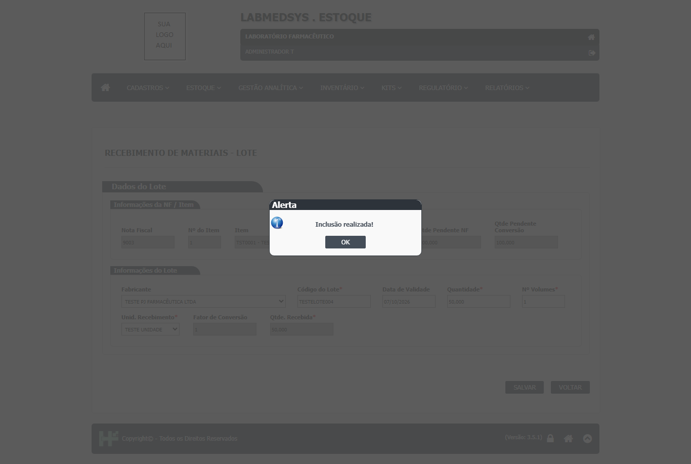
Figura 2: Depois de SALVAR: "Inclusão realizada!"
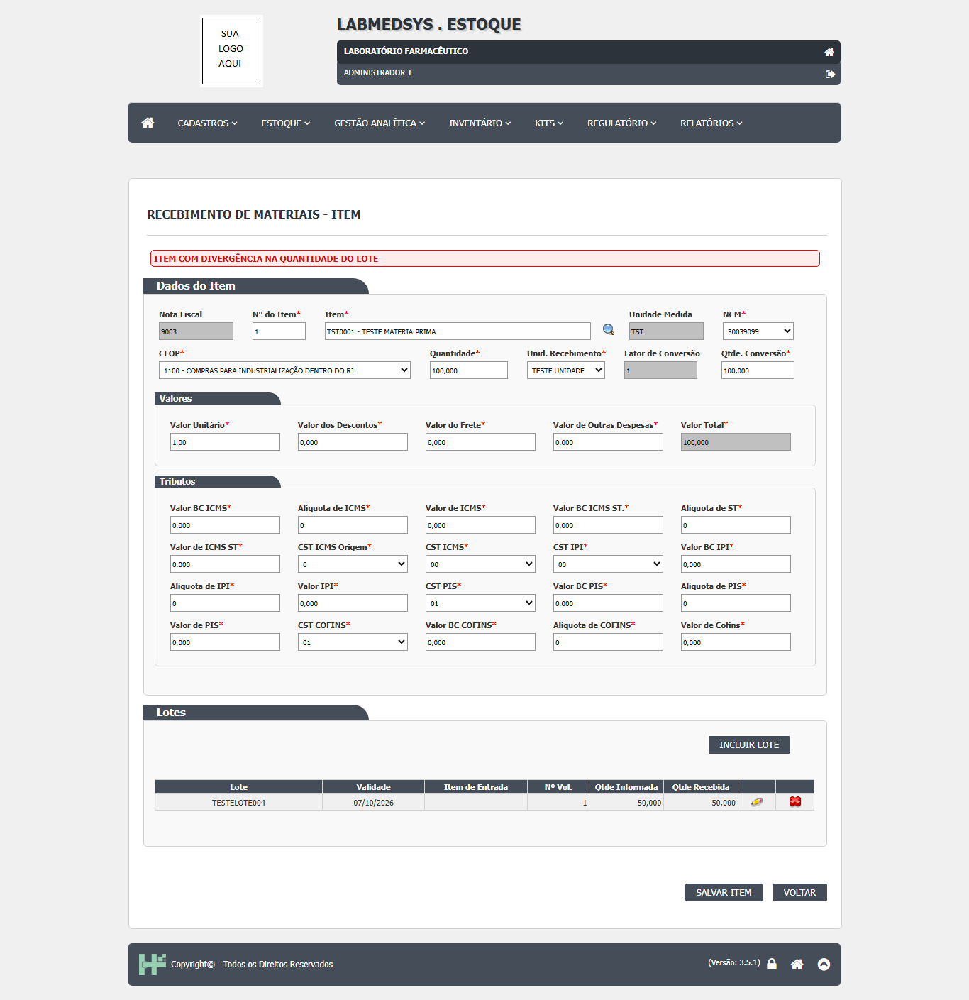
Figura 3: Grade de lotes do item com TESTELOTE004 e validade 07/10/2026
Onde está no código
Causa (confirmada): a gravação do lote confere só se a validade foi informada (para item com controle de validade) e se é uma data válida. Não há nenhuma comparação com a data atual ou com a data do recebimento.
| Arquivo | Linhas | O que faz |
|---|---|---|
LaboSys_UI/estoque/recebimentoNfItemLote_ed.aspx.cs |
471-484 | Validações da validade: obrigatória e data válida; nada sobre data vencida. |
LaboSys_UI/estoque/recebimentoNfItemLote_ed.aspx.cs |
490 | Grava a validade digitada (ou 31/12/2099 quando vazia, para item sem controle de validade). |
Caminhos a partir da pasta app/ do módulo (3.estoque/app).
Sugestão de correção
- Recusar validade menor que a data do recebimento (ou que a data de hoje), com mensagem que diga o motivo.
- Avisar também quando a validade estiver próxima (prazo mínimo de validade definido pela Qualidade), se a área pedir. Ponto para validar.
- Fazer a mesma conferência no servidor (BLL), e não só na tela, para valer também na importação de XML.
- Se o negócio precisar registrar a entrada de um vencido (por exemplo, para devolução), exigir justificativa e deixar o lote bloqueado, sem saldo disponível.
Como confirmar a correção
Repetir o CT-EST-186 com validade de ontem (deve recusar) e com validade futura (deve aceitar). Conferir também a alteração de um lote existente para uma data vencida.
Observações
Gravidade proposta pelo agente como Média e elevada para Alta na revisão (relatório consolidado). Sem essa barreira, o vencido só seria barrado nas etapas seguintes, se for.
DV-EST-015
Finalizar a conferência dá "Erro ao redistribuir quantidade dos volumes", mas a nota fica marcada como conferida
| Gravidade | Situação | Tela | Caso de teste | Encontrado em | Norma afetada |
|---|---|---|---|---|---|
| Alta | Aberto | Estoque › Estoque › Conferência de Recebimento | CT-EST-191 e CT-EST-193 | 08/10/2026 (rodada de 08/10/2026, etapa 2 (recebimento e quarentena)) | RDC 658/2022, art. 183 (verificação de cada entrega documentada) |
O que acontece
Ao clicar em FINALIZAR na Conferência, aparece "Erro ao redistribuir quantidade dos volumes" (22,8 s), tanto com quantidade divergente (90 de 100) quanto com a quantidade igual à da nota (100 de 100). Mesmo com o erro, a nota passa a aparecer como Conferido = SIM na lista, e a tela só oferece "Cancelar conferência". O código marca a nota como conferida e grava antes de ajustar os volumes, sem uma transação que junte as duas gravações. Além disso, uma divergência de quantidade é aceita só com "Deseja Continuar?", sem justificativa nem aviso à Garantia da Qualidade.
Como reproduzir
- Abrir Estoque › Conferência de Recebimento, clicar em PESQUISAR e abrir o recebimento 00016 (NF 9006).
- Clicar no lápis do lote
TESTELOTE002; em Conferido digitar90e clicar em CONFIRMAR LOTE. Aparece "Quantidade divergente. Deseja Continuar?"; clicar em SIM. - Clicar em FINALIZAR e confirmar "Deseja finalizar a conferência?".
- Cancelar a conferência, refazer com Conferido =
100(igual à nota) e clicar de novo em FINALIZAR. - Voltar à lista da Conferência e clicar em PESQUISAR.
Dados de teste usados: Recebimento 00016, NF 9006, item TST0002 - TESTE MATERIA PRIMA 2, lote TESTELOTE002 (100,000), item de entrada TA0001/26; usuário [usuário de teste] (TESTE ADMIN).
Esperado e obtido
| Esperado | Obtido |
|---|---|
| Com 100 de 100, a conferência é finalizada sem erro. Se algo falhar, nada é gravado (a nota continua não conferida) e a mensagem diz o motivo. Com divergência, o sistema exige justificativa e registra/encaminha a divergência à Garantia da Qualidade. | "Erro ao redistribuir quantidade dos volumes" nas duas tentativas. A lista passa a mostrar Conferido = SIM para o recebimento 00016. Com 90 de 100, gravou "Registro alterado com sucesso!" sem pedir justificativa. |
Evidências
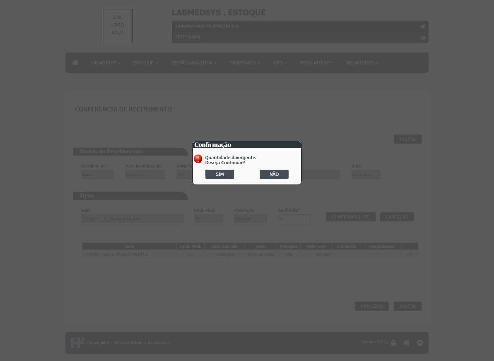
Figura 1: Conferido = 90 de 100: só a pergunta "Quantidade divergente. Deseja Continuar?", sem campo de justificativa
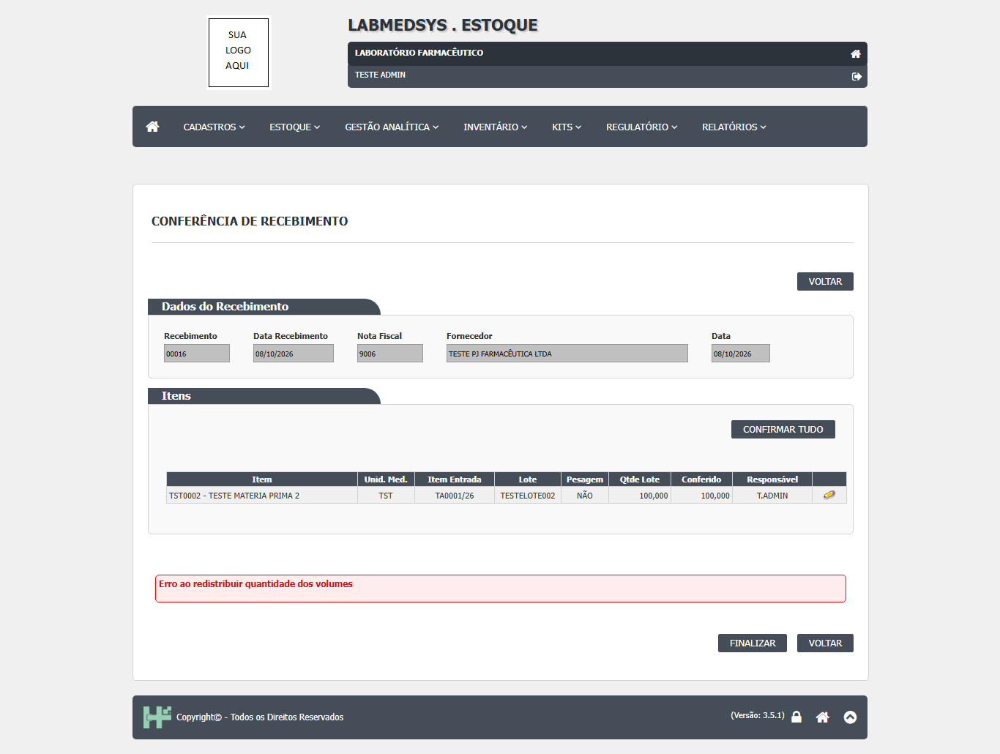
Figura 2: Conferido 100 de 100 e, ao FINALIZAR, "Erro ao redistribuir quantidade dos volumes"
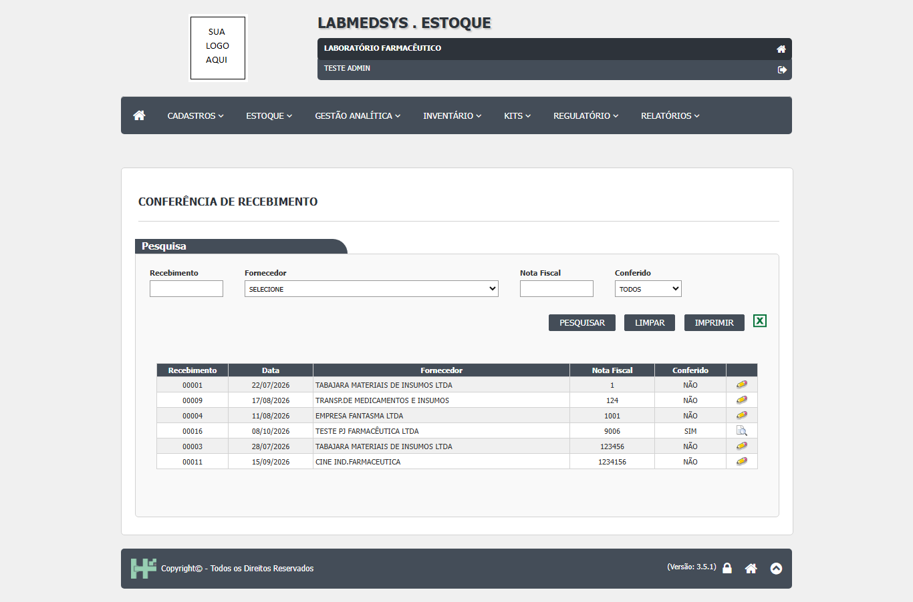
Figura 3: Lista da Conferência: o recebimento 00016 aparece como Conferido = SIM apesar do erro
Onde está no código
Causa (confirmada): A nota conferida apesar do erro está confirmada no código: a tela faz objNf.Conferido = true e grava, e só depois chama o ajuste dos volumes; as duas gravações não estão na mesma transação. O erro em si vem de um catch que esconde qualquer exceção. Com 100 de 100 o procedimento pAjustaVolume não teria o que ajustar e devolveria 1, então o erro indica falha na própria chamada (procedimento ausente ou diferente no banco de teste, ou sem permissão): provável, a confirmar com o DBA. Achado extra: quando o procedimento falha de forma controlada devolve -1, mas o código só trata 0 como erro, então essa falha passaria sem aviso.
| Arquivo | Linhas | O que faz |
|---|---|---|
LaboSys_UI/estoque/conferencia_ed2.aspx.cs |
294-306 | Marca Conferido = true e grava (295-297) antes de chamar ajustarQtdVolume (302); depois mostra "Conferência realizada com sucesso!". |
LaboSys_BLL/bllNotaFiscal.cs |
252-268 | ajustarQtdVolume: o catch troca qualquer exceção por "Erro ao redistribuir quantidade dos volumes". |
LaboSys_DAL/dalNotaFiscal.cs |
895-914 | Executa pAjustaVolume e só considera erro o retorno 0; o procedimento devolve -1 quando falha. |
LaboSys_UI/estoque/conferencia_ed2.aspx.cs |
159-165, 380-381, 424-428 | Divergência: só pergunta "Quantidade divergente. Deseja Continuar?" e, com SIM, salva sem pedir justificativa. |
Caminhos a partir da pasta app/ do módulo (3.estoque/app).
Sugestão de correção
- Fazer a marcação de conferido e o ajuste dos volumes numa única transação: ou grava tudo, ou não grava nada.
- Tratar como erro qualquer retorno diferente de 1 de
pAjustaVolume(inclusive -1) e registrar no log o erro real em vez de escondê-lo nocatch. - Com divergência de quantidade, exigir justificativa (motivo) e registrar quem conferiu, quando e por quê; comportamento esperado pela norma: a divergência fica documentada e é comunicada à Garantia da Qualidade.
- "Cancelar conferência" também deve pedir justificativa e ficar registrado.
- Conferir com o DBA se
pAjustaVolumeexiste no banco de teste, igual ao do código, e se o usuário da aplicação pode executá-lo.
Como confirmar a correção
Repetir o CT-EST-193 (100 de 100: deve finalizar sem erro e mostrar Conferido = SIM) e o CT-EST-191 (90 de 100: deve exigir justificativa). Forçar uma falha no ajuste e conferir que a nota continua Conferido = NÃO.
Observações
A grafia do aviso "cacelar" na confirmação de "Cancelar conferência" também precisa ser corrigida. A mensagem "Item com divergência na quantidade do lote!" vista em 07/10 não apareceu nesta rodada. Possível ligação com o DV-EST-016 (ponto para validar).
DV-EST-016
Endereçamento mostra "sucesso", mas nada foi gravado: lote sem saldo, sem histórico e sem análise no CQ
| Gravidade | Situação | Tela | Caso de teste | Encontrado em | Norma afetada |
|---|---|---|---|---|---|
| Alta | Aberto | Estoque › Estoque › Endereçamento de Material | CT-EST-194 e CT-EST-197 | 08/10/2026 (rodada de 08/10/2026, etapa 2 (recebimento e quarentena)) | RDC 658/2022, art. 157 (quarentena logo após o recebimento) e art. 124 (registro de cada ação quando é feita) |
O que acontece
Ao clicar em FINALIZAR no Endereçamento, a tela mostra "Endereçamento Finalizado com sucesso!". Mas depois disso: a nota continua com Endereçado = NÃO e a tela reabre com o botão FINALIZAR; a Disponibilidade do Lote e o Histórico do Lote não mostram nada; e nenhuma solicitação de análise chega ao Controle da Qualidade. O procedimento do banco que faz tudo isso numa só transação (pFinalizaRecebimento) desfaz tudo quando falha, e a tela nunca confere se ele deu certo. Resultado: o sistema diz que o material entrou em quarentena e foi para o CQ quando nada aconteceu, e o fluxo recebimento → quarentena → análise → liberação fica sem saída.
Como reproduzir
- Ter um recebimento autorizado, confirmado e com a conferência finalizada (no teste: recebimento 00016, NF 9006; ver DV-EST-015).
- Abrir Estoque › Endereçamento de Material, clicar em PESQUISAR e abrir a NF 9006.
- Em Informações do Endereçamento, escolher Item, Lote/Validade, Almoxarifado
TESTE ALMOX, Local902 - TESTE LOCAL QUARENTENA, Rua, Coluna e Andar; em Qtde Endereçar digitar100e clicar em ENDEREÇAR. - Com Pendente = 0,000, clicar em FINALIZAR e confirmar.
- Voltar à lista do Endereçamento e pesquisar: a NF 9006 continua com Endereçado = NÃO.
- Abrir Estoque › Disponibilidade do Lote com Código do Item
TST0002e clicar em PESQUISAR; abrir também Histórico do Lote comTA0001/26. - No módulo Controle da Qualidade, abrir Solicitação de Análise e procurar o lote
TA0001/26.
Dados de teste usados: Item TST0002 - TESTE MATERIA PRIMA 2 (com Controle de Qualidade e análise química); recebimento 00016, NF 9006, lote TESTELOTE002 (100,000, validade 07/10/2028), item de entrada TA0001/26; endereço L902-R901-C901-A901 no local 902 - TESTE LOCAL QUARENTENA do almoxarifado TESTE ALMOX (00017).
Esperado e obtido
| Esperado | Obtido |
|---|---|
| Só mostrar sucesso quando o lote estiver no estoque, em quarentena, com saldo de 100, com o histórico registrado, a nota marcada como endereçada e a solicitação de análise aberta no CQ. Se qualquer parte falhar, mostrar erro claro e não dizer "sucesso". | "Endereçamento Finalizado com sucesso!" (7,7 s). Depois: lista com Endereçado = NÃO; Disponibilidade do Lote: "A pesquisa não retornou nenhum resultado."; Histórico do Lote vazio; nenhuma solicitação de análise no CQ nem na tela "Análise de controle" do Estoque. |
Evidências
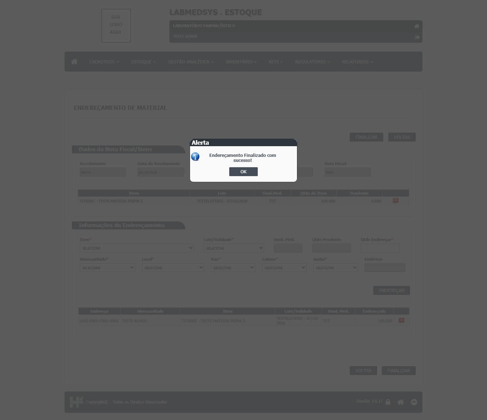
Figura 1: Depois de FINALIZAR: "Endereçamento Finalizado com sucesso!"
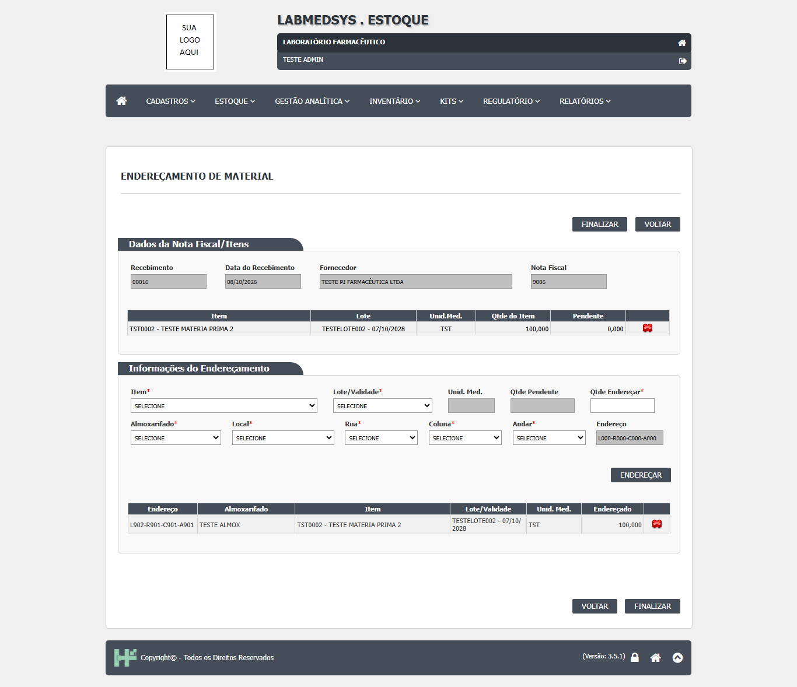
Figura 2: A mesma nota reaberta: continua pendente de finalização, com o botão FINALIZAR
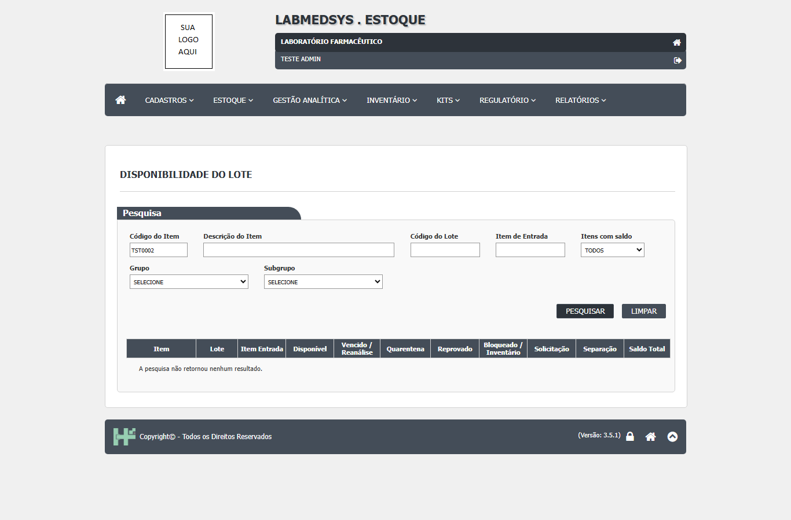
Figura 3: Disponibilidade do Lote para o item TST0002: nenhum resultado (saldo zero)
Onde está no código
Causa (confirmada): A mensagem de sucesso falsa está confirmada no código. O procedimento pFinalizaRecebimento faz tudo numa transação (cria o lote, a movimentação que dá saldo, os volumes, a solicitação de análise e marca a nota como endereçada) e, se der erro, desfaz tudo e devolve -1 com RETURN; ele não devolve nenhuma tabela. O acesso a dados (confirmaEnderecamento) tenta ler a primeira linha de uma tabela que não vem e, no erro, devolve 0: o valor é sempre 0, dê certo ou não. A tela nem olha esse valor e mostra o sucesso. Ainda desconhecida: a causa da falha dentro do banco (pergunta ao DBA). A mais provável é a mesma família do DV-EST-015 (volumes), mas não foi isolada.
| Arquivo | Linhas | O que faz |
|---|---|---|
LaboSys_UI/estoque/enderecamento_ed.aspx.cs |
127-133 | Chama confirmarEnderecamento, guarda o retorno em iRet e não confere; depois mostra "Endereçamento Finalizado com sucesso!". |
LaboSys_DAL/dalNotaFiscal.cs |
763-781 | confirmaEnderecamento executa pFinalizaRecebimento e lê Rows[0][0] de uma tabela que o procedimento não devolve; no erro, retorna 0. |
Hsolutions.Estoque.DB/Stored Procedures/pFinalizaRecebimento.sql |
60, 269, 290-291, 335-346 | Abre a transação, grava a análise do CQ e marca ENDERECADO = 1; em erro faz ROLLBACK e RETURN '-1', sem mensagem. |
LaboSys_BLL/bllNotaFiscal.cs |
211-223 | confirmarEnderecamento troca qualquer exceção por uma mensagem genérica, perdendo o erro real. |
Caminhos a partir da pasta app/ do módulo (3.estoque/app).
Sugestão de correção
- Fazer o procedimento devolver o resultado de forma que a aplicação leia (parâmetro de saída ou
SELECTdo código de retorno) e, em erro, levantar a mensagem real (THROW/RAISERROR) em vez de sóRETURN '-1'. - Na tela, só mostrar sucesso quando o retorno for positivo; em qualquer outro caso, mostrar o erro e manter a nota como pendente.
- Registrar no log da aplicação o texto do erro do banco (hoje ele é descartado nas camadas BLL e DAL).
- Comportamento esperado pela norma: ao finalizar, o lote fica com saldo em quarentena, o histórico registra a entrada, e a solicitação de análise nasce no CQ. Se uma dessas partes falhar, nenhuma é gravada e o usuário é avisado.
- Depois de corrigir a mensagem, descobrir com o DBA o erro real de
pFinalizaRecebimentopara a NF 9006 e corrigir a causa.
Como confirmar a correção
Repetir o CT-EST-194 (endereçar e finalizar) e o CT-EST-197 (Histórico e Disponibilidade do Lote) com um recebimento novo. Conferir: nota com Endereçado = SIM; saldo 100 em quarentena; histórico com a entrada; solicitação de análise visível no CQ (libera os casos CT-EST-200 a 209). Forçar uma falha (por exemplo, no banco de teste) e conferir que a tela mostra erro, não sucesso.
Observações
Bloqueia os casos CT-EST-200 a 209 (quarentena, amostragem, laudo e liberação). Pode ser consequência do DV-EST-015 (conferência marcada como feita sem o ajuste dos volumes); ponto para validar com o DBA executando pFinalizaRecebimento para a NF 9006. Também pode ter relação com o gatilho trg_Conferido, desligado no código.
DV-EST-022
A avaliação do fornecedor não qualifica nem bloqueia ninguém
| Gravidade | Situação | Tela | Caso de teste | Encontrado em | Norma afetada |
|---|---|---|---|---|---|
| Alta | Aberto | Estoque › Avaliação do Fornecedor × Recebimento de Material | CT-EST-165 e CT-EST-166 | 12/10/2026 (rodada 2 de 12/10/2026 (partes A e B)) | RDC 658/2022, art. 8º, VI (fornecedor aprovado) |
O que acontece
A tela não tem campo "qualificado" nem nota de corte. A coluna "Qualificado" da lista mostra SIM para qualquer fornecedor avaliado, mesmo com 350 pontos de não conformidade. Um novo recebimento do mesmo fornecedor passa sem nenhum aviso.
Como reproduzir
- Abrir Estoque › Avaliação do Fornecedor e avaliar a entrega da NF 9006 com três respostas 100 e uma 50 (soma 350).
- Conferir a coluna "Qualificado" na lista.
- Abrir um novo recebimento (NF 9008) do mesmo fornecedor e seguir até "Cadastro Finalizado!".
Dados de teste usados: Fornecedor TESTE PJ FARMACÊUTICA LTDA, NF 9006 (avaliada) e NF 9008 (novo recebimento 00018).
Esperado e obtido
| Esperado | Obtido |
|---|---|
| Fornecedor reprovado na avaliação é bloqueado ou exige decisão registrada da Garantia da Qualidade. | Lista mostra "Qualificado = SIM"; o novo recebimento passou sem aviso em nenhuma etapa. |
| ### Onde está no código |
Causa (confirmada): O recebimento não consulta a avaliação (bllQualificacaoFornecedor.cs não é usada no recebimento).
Sugestão de correção
- Cadastro único de fornecedor qualificado, com nota de corte.
- O recebimento consulta a qualificação e recusa ou pede decisão da GQ (trava 5 do modelo ideal).
Observações
As capturas de tela ficam em execucao/2026-10-12/evidencias/, com o nome do caso (CT-EST-165 e CT-EST-166). Não foram anexadas aqui porque ainda não foram conferidas uma a uma contra este defeito.
DV-EST-024
Entrada de produto acabado aceita lote inventado, sem ordem de produção
| Gravidade | Situação | Tela | Caso de teste | Encontrado em | Norma afetada |
|---|---|---|---|---|---|
| Alta | Aberto | Estoque › Entrada de Material - Produção | CT-EST-098 | 12/10/2026 (rodada 2 de 12/10/2026 (partes A e B)) | RDC 658/2022, arts. 124 e 164 (rastreabilidade do lote) |
O que acontece
O campo "Ordem de Produção" é livre e opcional, e o sistema não confere. Um lote TESTEPA999, que não existe na Produção, ganhou saldo em quarentena e abriu a análise.
Como reproduzir
- Abrir Estoque › Entrada de Material - Produção.
- Escolher o item
TESTE PRODUTO ACABADO, o loteTESTEPA999, quantidade 100, validade futura e destino em quarentena; deixar a ordem de produção em branco. - Confirmar a inclusão.
Dados de teste usados: Item TST0003, lote TESTEPA999.
Esperado e obtido
| Esperado | Obtido |
|---|---|
| Recusar o lote que não vem de uma ordem de produção liberada. | "Inclusão realizada com sucesso!"; saldo em quarentena (TA0003/26) e análise aguardando. |
| ### Sugestão de correção |
- Exigir a ordem de produção, lida da Produção.
- Não aceitar lote digitado livremente.
DV-EST-025
Entrada de produto acabado aceita lote com validade vencida
| Gravidade | Situação | Tela | Caso de teste | Encontrado em | Norma afetada |
|---|---|---|---|---|---|
| Alta | Aberto | Estoque › Entrada de Material - Produção | CT-EST-099 | 12/10/2026 (rodada 2 de 12/10/2026 (partes A e B)) | RDC 658/2022, art. 189 |
O que acontece
A tela recusa uma data inexistente (31/02/2027), mas aceita validade de ontem, sem aviso. O lote ganha saldo em quarentena e análise. É a mesma falha do DV-EST-014, agora na entrada de produção.
Como reproduzir
- Abrir Estoque › Entrada de Material - Produção.
- Informar o lote
TESTEPA998com validade 11/10/2026 (anterior a hoje). - Confirmar a inclusão.
Dados de teste usados: Item TST0003, lote TESTEPA998.
Esperado e obtido
| Esperado | Obtido |
|---|---|
| Recusar validade anterior a hoje. | Aceitou; saldo em quarentena (TA0004/26) e análise aguardando. |
| ### Sugestão de correção |
- Recusar validade anterior a hoje; exceção só com decisão da Qualidade.
DV-EST-027
Reprovar o laudo do CQ não exige motivo nem registra quem reprovou
| Gravidade | Situação | Tela | Caso de teste | Encontrado em | Norma afetada |
|---|---|---|---|---|---|
| Alta | Aberto | CQ › Emissão Laudo Final (reprovar) | CT-EST-211 | 12/10/2026 (rodada 3 de 12/10/2026 (parte C: quarentena e CQ)) | RDC 658/2022, art. 125 e art. 8º (decisão sobre o lote) |
O que acontece
A decisão que bloqueia um lote fica sem justificativa e sem registro de quem reprovou. O próprio Estoque pede "Motivo da Reprovação" em outros pontos.
Como reproduzir
- No CQ, abrir Emissão Laudo Final de uma análise em "Liberar laudo".
- Escolher Reprovar sem escrever o motivo.
- Confirmar.
Dados de teste usados: Lote TESTEPA998 (solicitação 007/26).
Esperado e obtido
| Esperado | Obtido |
|---|---|
| Exigir o motivo e registrar quem reprovou, com assinatura. | "Alteração efetuada com sucesso", sem motivo e sem registro de quem reprovou. |
| ### Sugestão de correção |
- Motivo obrigatório; quem, quando e por quê no histórico; assinatura eletrônica (trava 2).
Observações
No código do CQ, a reprovação grava "não aprovado" e a observação, sem quem decidiu (4.controle_qualidade/app/HSolutions.CQ.UI/Areas/Analise/Controllers/EmissaoLaudoFinalController.cs:489-506). As capturas de tela ficam em execucao/2026-10-12/evidencias/, com o nome do caso (CT-EST-211). Não foram anexadas aqui porque ainda não foram conferidas uma a uma contra este defeito.
DV-EST-043
O cadastro de Item não mostra o campo da classificação de reanálise
| Gravidade | Situação | Tela | Caso de teste | Encontrado em | Norma afetada |
|---|---|---|---|---|---|
| Alta | Aberto | Cadastros › Item | CT-EST-055 e 058 (preparação) | 13/10/2026 (rodada 5 de 13/10/2026 (reanálise concluída no CQ; trava da quarentena)) | RDC 658/2022, art. 189 (uso só de matéria-prima dentro da data de reteste) |
O que acontece
O campo Classificação RNLS (classificação de reanálise), que define o prazo da primeira reanálise do item, não aparece na tela de Item em nenhuma combinação testada (Controle de Lote, Validade, Quarentena e análise marcados). O painel existe no código, mas nasce oculto e nenhuma rotina o mostra; o resto do código preenche, grava e trava esse campo como se ele estivesse visível. Confirmado na tela real: o elemento não está na página carregada (não é só CSS). Sem esse vínculo, a Agenda de Reanálise nunca aplica um prazo a item novo; o controle de reteste depende de um cadastro que a tela não deixa fazer.
Como reproduzir
- Abrir Cadastros › Item e clicar em Incluir (ou abrir um item existente).
- Marcar Controle de Lote, Controle de Validade, Controle de Quarentena e Análise físico-química.
- Procurar o campo da classificação de reanálise ("Classificação RNLS"), entre "Condição de Armazenagem" e "SJB".
Dados de teste usados: Classificação de reanálise T - TESTE REANALISE CURTA (primeira reanálise a 50% da validade), criada na rodada 5. Nenhum item novo foi gravado.
Esperado e obtido
| Esperado | Obtido |
|---|---|
Campo visível para escolher a classificação de reanálise cadastrada (por exemplo T - TESTE REANALISE CURTA). |
O campo não existe na tela; só o campo genérico "Classificação" aparece. |
Evidências
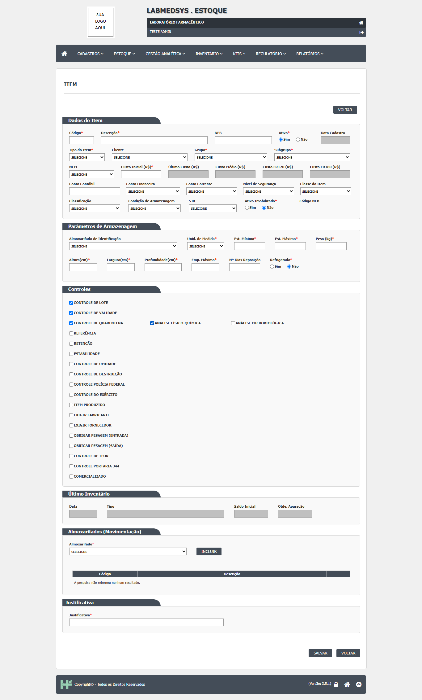
Figura 1: Item novo com Lote, Validade, Quarentena e análise marcados: não há campo de classificação de reanálise entre "Condição de Armazenagem" e "SJB"
Onde está no código
Causa (alta): O painel pnlReanalise é declarado com Visible="false" e nenhum trecho do código da tela o torna visível. O código por trás da tela carrega a lista de classificações, grava a escolhida e só a desabilita depois da primeira movimentação, tudo dentro de um painel que o usuário nunca vê.
| Arquivo | Linhas | O que faz |
|---|---|---|
LaboSys_UI/administracao/tabelas_apoio/item_ed.aspx |
255 | O painel pnlReanalise, que contém o campo "Classificação RNLS", é declarado com Visible="false". Nenhum trecho do código da tela o torna visível. |
LaboSys_UI/administracao/tabelas_apoio/item_ed.aspx.cs |
138-142, 495, 825 | Carrega a lista de classificações, grava a escolhida e a desabilita depois da primeira movimentação, tudo dentro do painel que o usuário nunca vê. |
Caminhos a partir da pasta app/ do módulo (3.estoque/app).
Sugestão de correção
- Mostrar o campo quando o item tiver Controle de Validade (ou sempre que houver classificações ativas).
- Exigir a classificação para item com controle de validade e análise do CQ, para que a Agenda de Reanálise funcione.
- Permitir alterar a classificação com justificativa e histórico (ver DV-EST-041).
Como confirmar a correção
CT-EST-055 e CT-EST-058: criar um item novo com a classificação T - TESTE REANALISE CURTA e conferir que o lote entra na Agenda de Reanálise.
Observações
Bloqueia CT-EST-055, 058 e 061. Ponto para validar com a área: como o item TST0001 (que está em reanálise) recebeu a classificação, se por carga inicial ou script; isso também muda a leitura do DV-EST-041.
DV-EST-044
Movimentação de Quarentena aceita destino incompleto e o saldo do lote desaparece
| Gravidade | Situação | Tela | Caso de teste | Encontrado em | Norma afetada |
|---|---|---|---|---|---|
| Alta | Aberto | Estoque › Movimentação de Quarentena | CT-EST-073 (preparação) | 13/10/2026 (rodada 6 de 13/10/2026 (atendimento à produção e remessa)) | RDC 658/2022, art. 124 (registro fiel de cada operação) e art. 157 (controle do material em quarentena) |
O que acontece
Ao tirar da quarentena o lote aprovado TESTEPA003 (80 unidades), o destino foi confirmado só com o almoxarifado e o local (905 - TESTE LOCAL COMUM), sem rua, coluna e andar (os três em "SELECIONE"): a tela montou o endereço L905-R000-C000-A000, que não existe, aceitou o "Confirmar endereço" (a quantidade "Endereçada" passou a 80, embora a grade continuasse "Nenhum endereço foi encontrado") e o "Finalizar" respondeu "Movimentação finalizada!". Depois disso o lote perdeu as 80 unidades: o Histórico do Lote mostra a saída do endereço de origem e nenhuma entrada; "Endereços do Lote" vazio; disponibilidade zero em todas as colunas. Conferido em três consultas diferentes. Na rodada 3, a mesma tela com endereço completo (L901-R901-C901-A901) funcionou (CT-EST-207).
Como reproduzir
- Lote aprovado pelo CQ, em local de quarentena, com "Atualizar resultado" feito.
- Abrir Estoque › Movimentação de Quarentena, editar o lote, escolher o endereço de origem e a quantidade.
- No destino, escolher só o almoxarifado e o local, deixando rua, coluna e andar em "SELECIONE"; clicar em Confirmar endereço e depois em Finalizar.
- Conferir Disponibilidade do Lote, Consulta de Endereço e Histórico do Lote.
Dados de teste usados: Lote TESTEPA003 (item TST0003, entrada TA0005/26, laudo 010/26 aprovado), origem L902-R901-C905-A901, destino L905-R000-C000-A000. O lote ficou com saldo zero no ambiente.
Esperado e obtido
| Esperado | Obtido |
|---|---|
| Recusa do destino incompleto ("Endereço de destino inválido!"); ou, com endereço completo, saída da origem e entrada no destino gravadas juntas. | "Movimentação finalizada!" e o saldo do lote some: saída gravada, entrada ausente. |
Evidências
Figura 1: Destino com rua, coluna e andar em SELECIONE: o endereço de destino sai como L905-R000-C000-A000
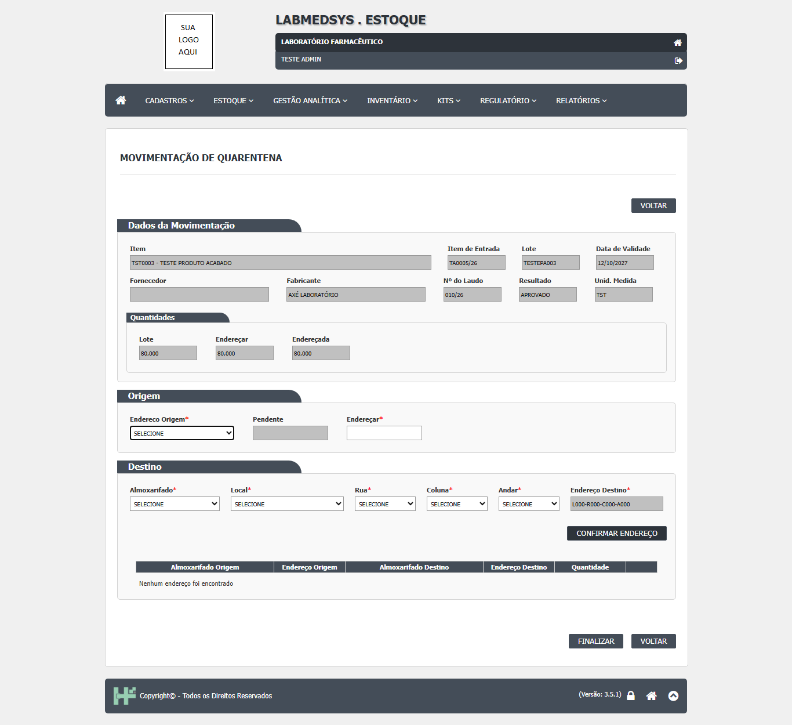
Figura 2: Depois de Confirmar endereço: Endereçada = 80, mas a grade diz "Nenhum endereço foi encontrado"
Onde está no código
Causa (alta): Confirmada na rodada 7 (13/10/2026): a mesma tela, com um lote novo (TESTEPA004) e destino completo (L903-R901-C901-A901), gravou saída e entrada sob o mesmo código de movimentação e o saldo passou de quarentena a disponível sem perda. A perda só acontece quando a tela aceita um destino incompleto (sem rua, coluna e andar): EnderecoValido só confere o texto do endereço e nada exige os três níveis; a saída é gravada e a entrada não chega ao saldo.
| Arquivo | Linhas | O que faz |
|---|---|---|
LaboSys_UI/estoque/movimentacao_cq_ed.aspx.cs |
677-726, 989-1003 | Confirmação do destino: só confere se o código do endereço existe; não exige rua, coluna e andar. |
LaboSys_UI/estoque/movimentacao_cq_ed.aspx.cs |
238-263, 313 | Monta a saída e a entrada e chama a inclusão da movimentação. |
LaboSys_BLL/bllMovimentacao.cs |
15-55 | Grava o cabeçalho e cada item em comandos separados, sem transação: se a entrada falhar, a saída fica. |
Caminhos a partir da pasta app/ do módulo (3.estoque/app).
Sugestão de correção
- Exigir rua, coluna e andar no destino e recusar código de endereço que não exista como endereço de picking.
- Gravar saída e entrada numa única transação: ou as duas, ou nenhuma.
- Conferir, depois de gravar, que o saldo do lote no destino subiu; se não subiu, desfazer e avisar.
Como confirmar a correção
Repetir o CT-EST-073 (preparação) com endereço completo e com endereço incompleto. Pedir ao DBA os registros da movimentação do TESTEPA003 de 13/10/2026.
Observações
Bloqueou CT-EST-073 e 074 na rodada 6. O lote TESTEPA003 continua com saldo zero no ambiente. Rodada 7: causa confirmada; com destino completo a movimentação funciona. Correção: exigir rua, coluna e andar e recusar código de endereço inexistente antes de gravar.
DV-EST-046
A remessa não pode ser finalizada: "Erro ao gerar a solicitação do material!"
| Gravidade | Situação | Tela | Caso de teste | Encontrado em | Norma afetada |
|---|---|---|---|---|---|
| Alta | Aberto | Estoque › Remessa de Material | CT-EST-115 | 13/10/2026 (rodada 6 de 13/10/2026 (atendimento à produção e remessa)) | Guia 33/2020, 9.3.2.3 (mensagens claras; a tela não deve prosseguir depois de uma validação que falhou) |
O que acontece
Na remessa 00002 (1 item, 5 unidades do TESTEPA001), o Finalizar termina sempre em "Erro ao gerar a solicitação do material!" e a remessa fica na mesma etapa, sem data de liberação, sem baixar o saldo e sem evento de saída. Confirmado na rodada 7 com a justificativa preenchida (na rodada 6 ela estava em branco, e a tela mostrou as duas mensagens). A expedição pela tela fica travada. Além disso, com a justificativa em branco a rotina não para na validação e mostra o erro genérico por cima da mensagem do campo.
Como reproduzir
- Abrir Estoque › Remessa de Material, criar a remessa, incluir um item e preencher a Justificativa.
- Clicar em Finalizar e confirmar "Deseja finalizar a Remessa?".
Dados de teste usados: Remessa 00002 (TESTE ALMOX → TESTE PJ MIN LTDA, evento DEVOLUÇÃO), item TST0003, lote TA0002/26, 5 unidades. Ficou aberta no ambiente.
Esperado e obtido
| Esperado | Obtido |
|---|---|
| Remessa finalizada: data de liberação gravada, saldo baixado, aviso à Rastreabilidade. | "Erro ao gerar a solicitação do material!"; a remessa continua na mesma etapa. |
Evidências
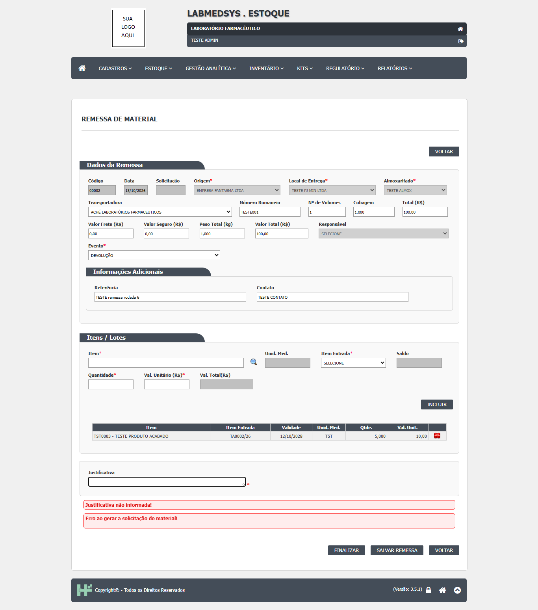
Figura 1: Finalizar com a justificativa em branco: "Justificativa não informada!" e "Erro ao gerar a solicitação do material!"
Onde está no código
Causa (média): finalizarRemessa() grava a remessa e chama gerarSolicitacao(), que monta uma solicitação de material do tipo cliente sem centro de custo e sem alguns dados que a tela manual de Solicitação de Consumo exige; a gravação dessa solicitação falha e o erro real fica escondido atrás da mensagem genérica (dois blocos catch em sequência). Hipótese mais provável; o erro exato precisa ser lido no servidor ou no banco pelo DBA.
| Arquivo | Linhas | O que faz |
|---|---|---|
LaboSys_UI/estoque/remessa_ed.aspx.cs |
318-327, 811-830 | salvar valida a justificativa e não grava quando falha; finalizarRemessa segue e chama gerarSolicitacao. |
LaboSys_UI/estoque/remessa_ed.aspx.cs |
704-800 | gerarSolicitacao monta a solicitação de material sem centro de custo e esconde o erro real atrás da mensagem genérica. |
Caminhos a partir da pasta app/ do módulo (3.estoque/app).
Sugestão de correção
- Mostrar o erro real da geração da solicitação, não a mensagem genérica.
- Preencher o centro de custo (e os demais dados obrigatórios) da solicitação gerada pela remessa, ou não exigi-los nesse caminho.
- Parar o Finalizar quando a validação da justificativa falhar.
Como confirmar a correção
CT-EST-115 e 116: finalizar a remessa 00002 com justificativa; conferir data de liberação, saldo e Rastreabilidade.
Observações
Rodada 6: inconclusivo (justificativa em branco). Rodada 7: confirmado com a justificativa preenchida; gravidade sobe para Alta. Bloqueia CT-EST-116. A remessa 00002 continua aberta no ambiente, sem alteração de saldo.
DV-EST-047
A amostra de retenção gravada pela Entrada não aparece na Consulta de Disponibilidade nem na Saída
| Gravidade | Situação | Tela | Caso de teste | Encontrado em | Norma afetada |
|---|---|---|---|---|---|
| Alta | Aberto | Regulatório › Movimentações (Entrada e Saída - Retenção) e Consulta Disponibilidade (Referência - Retenção - Estabilidade) | CT-EST-171 e 176 | 13/10/2026 (rodada 7 de 13/10/2026 (devolução, inventário, amostras de retenção e repetições)) | RDC 658/2022, art. 14, VIII (amostras de retenção guardadas pelo prazo) |
O que acontece
A Entrada - Retenção de 5 unidades do TESTEPA001 gravou certo: a Consulta de Endereço mostra as 5 unidades em L907-R901-C901-A901 (local 907 - TESTE LOCAL RETENCAO, almoxarifado TESTE RETENCAO, tipo Retenção) e o disponível do lote caiu de 82 para 77. Mas a Consulta Disponibilidade (Referência - Retenção - Estabilidade) não lista nada, nem filtrando pelo item, e a Saída - Retenção do mesmo lote não oferece nenhum endereço de origem. A amostra existe no estoque e o controle regulatório não a enxerga: não dá para localizar, consultar nem dar saída numa amostra de retenção pela tela. Por isso o CT-EST-176 (saída antes do vencimento, que a norma manda impedir) nem pôde ser feito.
Como reproduzir
- Preparar um almoxarifado do tipo Retenção, ligado ao grupo do usuário, com um local e um endereço (nenhum existia no ambiente).
- Regulatório › Movimentações, tipo "ENTRADA - RETENÇÃO": item
TST0003, loteTA0002/26, 5 unidades, destinoL907-R901-C901-A901. Finalizar. - Abrir Consulta Disponibilidade (Referência - Retenção - Estabilidade) e filtrar por
TST0003. - Abrir Movimentações, tipo "SAÍDA - RETENÇÃO", mesmo item e lote, e abrir a lista de endereço de origem.
Dados de teste usados: Almoxarifado 00018 - TESTE RETENCAO (tipo Retenção, ligado ao grupo 03 - ADMINISTRAÇÃO), local 907 - TESTE LOCAL RETENCAO, endereço L907-R901-C901-A901; lote TESTEPA001, 5 unidades em retenção.
Esperado e obtido
| Esperado | Obtido |
|---|---|
A consulta mostra 5 unidades em retenção; a saída oferece o endereço L907-R901-C901-A901. |
Consulta vazia; lista de origem só com "SELECIONE". |
| ### Onde está no código |
Causa (baixa): Pelo código, a Saída lista os endereços do lote cujo almoxarifado tem a marca Retenção (RegulatorioReservaServico.RetornarListaEnderecoLoteRegulatorio), e a consulta lê os saldos de referência, retenção e estabilidade do lote. Com os cadastros feitos, as duas deveriam encontrar a amostra. Hipóteses: a Entrada grava o saldo no endereço mas não o registro de reserva regulatória que a consulta e a saída usam; ou a marca de tipo do almoxarifado novo não chega à consulta. Precisa do DBA (tabelas de reserva regulatória e de saldo por endereço do TESTEPA001).
| Arquivo | Linhas | O que faz |
|---|---|---|
LaboSys.Estoque.Service/RegulatorioReservaServico.cs |
415-440 | Lista os endereços do lote filtrando pelo tipo do almoxarifado (referência, retenção, estabilidade). |
LaboSys_UI/cq/movimentacoes_ed.aspx.cs |
523-527 | A Saída usa essa lista para montar o endereço de origem. |
LaboSys_UI/cq/consulta_disponibilidade_lst.aspx.cs |
254-256 | A consulta mostra os saldos de referência, retenção e estabilidade do lote. |
Caminhos a partir da pasta app/ do módulo (3.estoque/app).
Sugestão de correção
- Gravar, na Entrada, tudo o que a consulta e a saída leem (saldo por endereço e reserva regulatória), na mesma transação.
- Mostrar na consulta a amostra pelo endereço onde ela está, mesmo que a reserva não exista.
- Com isso resolvido, implantar o prazo mínimo de guarda e a trava de saída antes do vencimento (R-EST-17).
Como confirmar a correção
CT-EST-171 (consulta mostra a amostra) e CT-EST-176 (saída antes do vencimento).
Observações
Nenhum cadastro do tipo Retenção existia no ambiente antes da rodada 7: o controle de amostras nunca tinha sido usado.
DV-EST-048
O Atendimento de Solicitação não ordena os lotes por validade e aceita o que vence depois sem avisar
| Gravidade | Situação | Tela | Caso de teste | Encontrado em | Norma afetada |
|---|---|---|---|---|---|
| Alta | Aberto | Estoque › Atendimento de Solicitação | CT-EST-073 e CT-EST-074 | 22/10/2026 (rodada 8) | RDC 658/2022 (usar o material dentro da validade); boa prática de estoque PEPS/FEFO (primeiro que vence, primeiro que sai). O artigo a citar deve ser confirmado com a Garantia da Qualidade. |
O que acontece
Ao atender uma solicitação, o botão SELECIONAR LOTE lista os lotes do item sem ordenar pela validade: o lote que vence em 2028 (TESTEPA001) aparece antes do que vence em 2027 (TESTEPA004). Escolhendo o que vence depois, a tela pergunta "Confirma o atendimento do Item?" e responde "Atendimento confirmado!", sem nenhum aviso de que há um lote que vence antes.
Como reproduzir
- Ter dois lotes disponíveis do mesmo item com validades diferentes (
TST0003:TESTEPA001, validade 12/10/2028, eTESTEPA004, validade 20/10/2027). - Abrir Estoque › Atendimento de Solicitação, pesquisar a solicitação 00040 (item
TST0003) e abri-la. - Escolher o item e clicar em SELECIONAR LOTE: ver a ordem.
- Escolher o
TESTEPA001(o que vence depois), digitar 1 em Atender, clicar em ATENDER ITEM e SIM.
Dados de teste usados: Item TST0003, lotes TESTEPA001 (item de entrada TA0002/26) e TESTEPA004 (TA0006/26), solicitação 00040.
Esperado e obtido
| Esperado | Obtido |
|---|---|
| Lista ordenada pela validade (o que vence primeiro no topo) e aviso ou recusa ao escolher um lote que vence depois, com justificativa se o usuário insistir. | Ordem na tela: TESTEPA001 (12/10/2028), depois TESTEPA004 (20/10/2027). Escolher o primeiro: "Atendimento confirmado!", sem aviso. A solicitação ficou com 1,000 atendido de um lote que não vence primeiro. |
Evidências
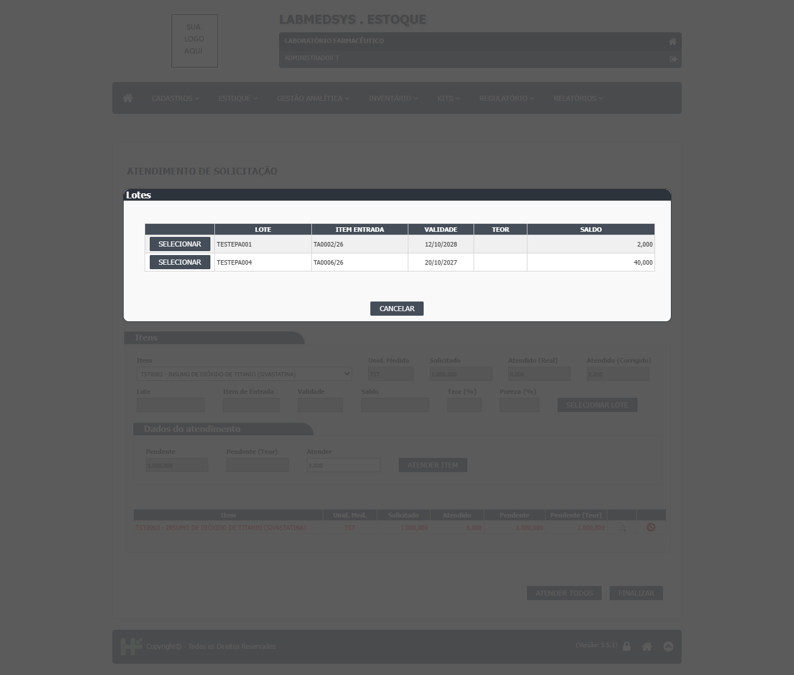
Figura 1: Lista de lotes na ordem em que aparece.
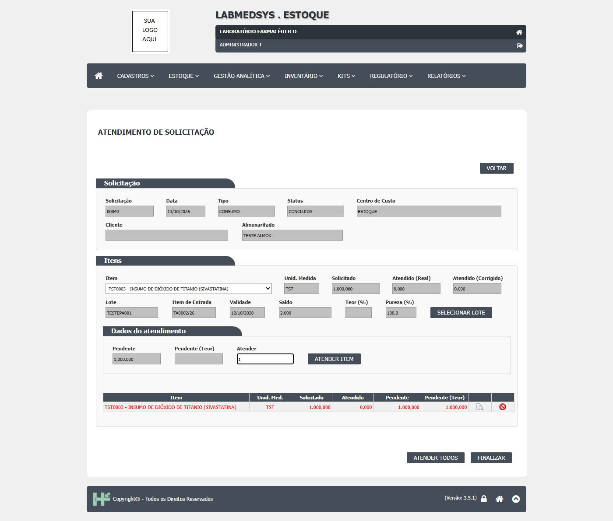
Figura 2: Lote que vence depois escolhido, antes de atender.
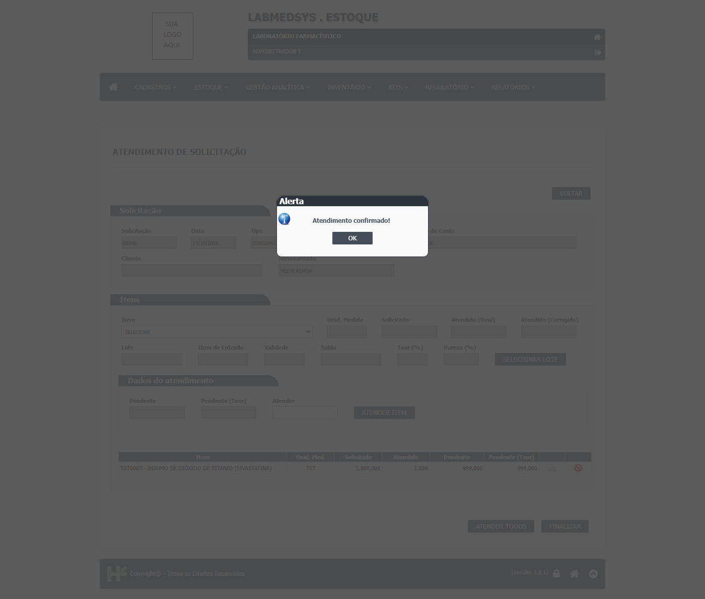
Figura 3: Atendimento confirmado sem aviso.
Sugestão de correção
- Ordenar a lista por validade crescente e avisar (ou exigir justificativa) quando o usuário escolher um lote que vence depois de outro disponível.
Observações
Defeito encontrado na rodada 8 do ambiente de teste do legado. A causa no código não foi investigada nesta rodada.
DV-EST-058
A remessa gerada pela solicitação de kit nasce sem Origem e sem Responsável e não pode ser finalizada
| Gravidade | Situação | Tela | Caso de teste | Encontrado em | Norma afetada |
|---|---|---|---|---|---|
| Alta | Aberto | Estoque › Remessa de Material (remessa criada por Kits › Solicitação de Kits) | CT-EST-110 e CT-EST-115 (reforça o DV-EST-046) | 22/10/2026 (rodada 8) | RDC 658/2022 (registro de quem e de onde sai o material); Guia 33/2020. |
O que acontece
Ao gerar a solicitação/guia do kit, o sistema cria a remessa 004 com Origem em "SELECIONE" e Responsável em "SELECIONE", e os dois campos ficam desabilitados. Finalizar dá "Origem não informada!", "O Motivo da Remessa não foi informado!" e "Erro ao gerar a solicitação do material!". Na remessa manual nova (00003), o campo Responsável também fica desabilitado e vazio, e o FINALIZAR dá "Erro ao gerar a solicitação do material!" mesmo com Origem, Destino, Almoxarifado, Evento, item e justificativa preenchidos. Pista para o DV-EST-046: o Responsável nunca é gravado.
Como reproduzir
- Em Kits › Solicitação de Kits, criar a solicitação 00002 (kit 00002), finalizar e clicar em GERAR SOLICITAÇÃO / GUIA (Local de entrega e justificativa).
- Em Remessa de Material, abrir a remessa 004: Origem e Responsável estão desabilitados em SELECIONE.
- Incluir o item do lote (1,000) e clicar em FINALIZAR e SIM.
Dados de teste usados: Remessa 004 (kit 00002, solicitação de estoque 00051) e remessa manual 00003.
Esperado e obtido
| Esperado | Obtido |
|---|---|
| Remessa gerada já com a Origem, o Responsável e o Evento; finalização que gera a solicitação do material. | "Origem não informada!"; "Erro ao gerar a solicitação do material!". A remessa manual 00003 também falha com o mesmo erro. |
Evidências
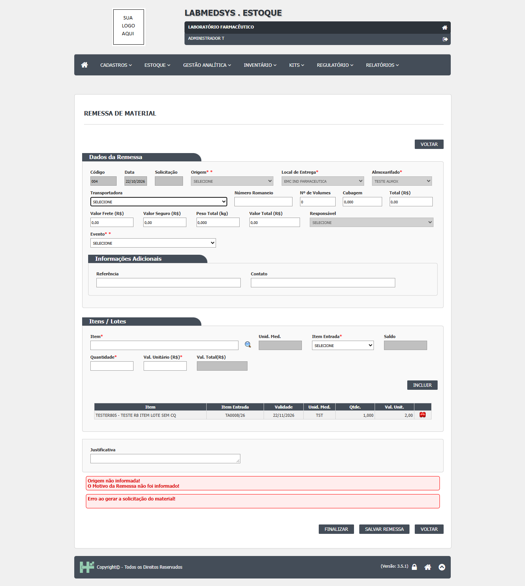
Figura 1: Remessa 004 ao finalizar sem os obrigatórios.
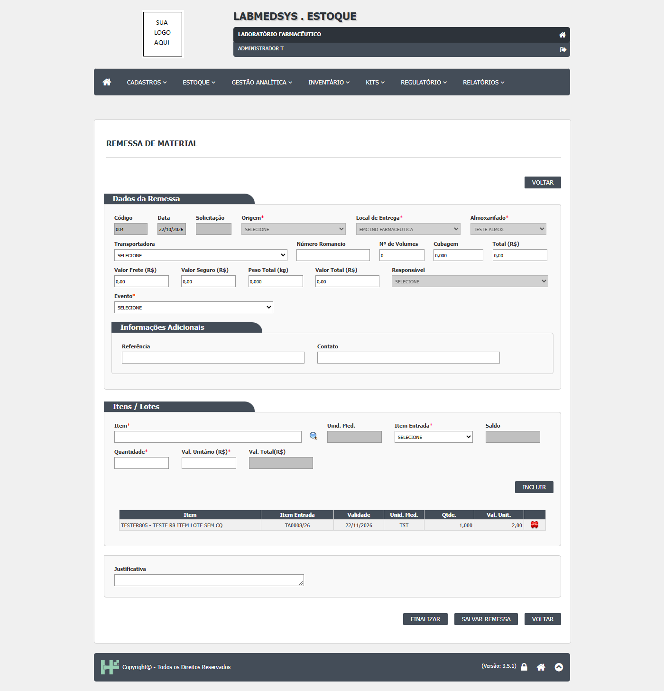
Figura 2: Campos travados na remessa 004.
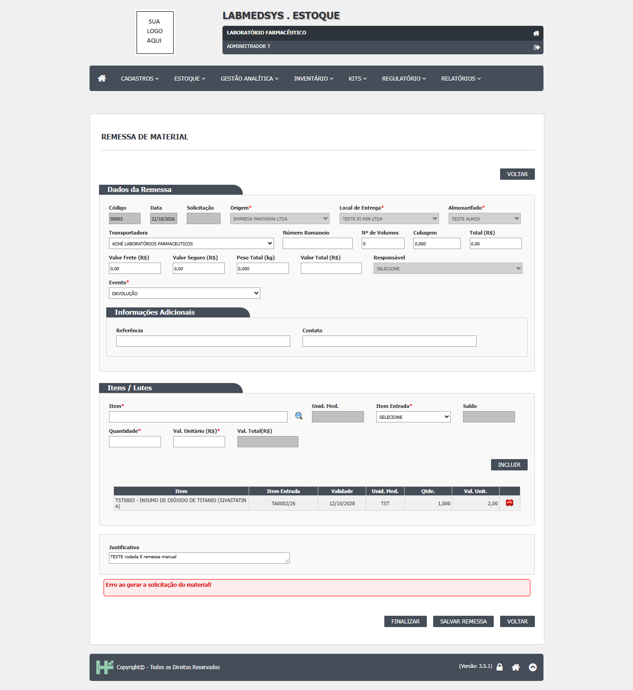
Figura 3: Remessa manual 00003 ao finalizar.
Sugestão de correção
- Preencher Origem e Responsável (usuário logado) ao criar a remessa, deixar a Origem editável enquanto a remessa estiver aberta e mostrar o erro real em vez da mensagem genérica.
Observações
Defeito encontrado na rodada 8 do ambiente de teste do legado. A causa no código não foi investigada nesta rodada.
DV-EST-067
Central de Pesagem: abrir o volume dá erro de servidor e a pesagem não pode ser feita
| Gravidade | Situação | Tela | Caso de teste | Encontrado em | Norma afetada |
|---|---|---|---|---|---|
| Alta | Aberto | Estoque › Central de Pesagem › Pesagem (editar volume) | CT-EST-077 | 22/10/2026 (rodada 9) | Guia 33/2020 (tratamento de erros; não expor detalhes técnicos); RDC 658/2022 (pesagem registrada na saída de insumo). |
O que acontece
Como reproduzir
- Criar o item
TESTER901(com controle de lote e validade e obrigar pesagem na saída), dar entrada de um lote (TESTEPES01, 50 kg) e criar a solicitação de consumo 00061 de 10 kg; atender e finalizar. - Abrir Estoque › Central de Pesagem, pesquisar a solicitação 00061 e abrir a pesagem
0000017/26. - Clicar no ícone de editar da linha do volume.
Dados de teste usados: Item TESTER901, lote TESTEPES01 (item de entrada TA0016/26), solicitação 00061, pesagem 0000017/26; equipamento TESTE BALANCA R9 (Principal › Equipamentos).
Esperado e obtido
| Esperado | Obtido |
|---|---|
| Abrir os campos do volume (peso bruto, tara, tag da balança, lacre). | Página de erro de servidor com a mensagem "Erro na consulta do Equipamento.", que impede o uso da tela. A captura não é publicada porque mostra detalhes técnicos. |
| ### Sugestão de correção |
- Tratar a falta de balança cadastrada com mensagem clara, sem mostrar detalhes técnicos ao usuário.
- Documentar qual categoria de equipamento a pesagem usa e o que é preciso cadastrar no Principal.
Observações
Inferência (não confirmada): a consulta de equipamentos por categoria da Central de Pesagem falha por falta de uma balança vinculada à categoria esperada ou por falha do serviço que a atende. O que mais se sabe: o equipamento cadastrado no Principal não resolveu. Gravidade Alta a validar com a área (impede a pesagem exigida na saída de insumo).
DV-EST-001
Código do lote perde os hífens: "TESTE-LOTE-001" vira "TESTELOTE001"
| Gravidade | Situação | Tela | Caso de teste | Encontrado em | Norma afetada |
|---|---|---|---|---|---|
| Média | Aberto | Estoque › Estoque › Recebimento de Material › Nota Fiscal › Item › Lote | Preparação do recebimento; reconfirmado no CT-EST-187 em 08/10/2026 | 07/10/2026 (rodada de 07/10/2026 (preparação) e 08/10/2026, etapa 1) | RDC 658/2022, art. 141, V (registro com o lote do fabricante) |
O que acontece
No campo Código do Lote, o hífen digitado é descartado sem aviso: TESTE-LOTE-001 foi gravado como TESTELOTE001 e TESTE-LOTE-002 como TESTELOTE002. O campo só aceita letras, números e espaço. O registro de entrada deixa de trazer o lote do fabricante como ele é, o que atrapalha a rastreabilidade (busca, comparação com o laudo do fabricante, recolhimento).
Como reproduzir
- Abrir Estoque › Recebimento de Material, um recebimento em aberto, a nota fiscal e o item.
- Clicar em INCLUIR LOTE.
- No campo Código do Lote, digitar
TESTE-LOTE-002. - Preencher os demais campos e clicar em SALVAR.
Dados de teste usados: Recebimento 00013 (NF 9001, lote gravado como TESTELOTE001) e recebimento 00014 (NF 9002, lote gravado como TESTELOTE002); item TST0001 - TESTE MATERIA PRIMA.
Esperado e obtido
| Esperado | Obtido |
|---|---|
| Guardar o código exatamente como digitado (com hífens, barras, pontos e outros caracteres usados por fabricantes). | O campo mostra e grava TESTELOTE002, sem os hífens e sem aviso. |
Evidências
Figura 1: Digitado TESTE-LOTE-002: o campo Código do Lote mostra TESTELOTE002
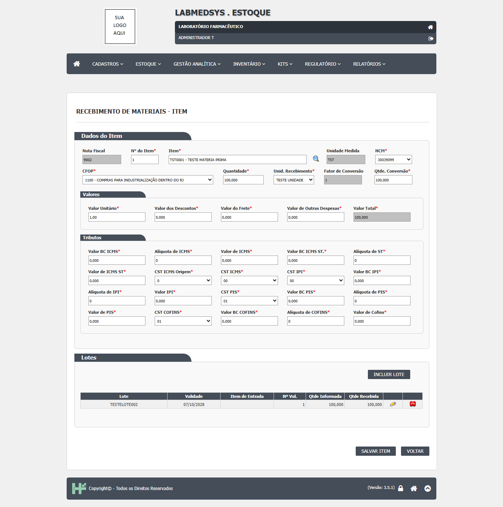
Figura 2: Grade de lotes do item: lote gravado como TESTELOTE002
Onde está no código
Causa (confirmada): o campo tem um filtro de caracteres (FilteredTextBoxExtender) que só deixa passar letras sem acento, números e espaço. Achado extra no mesmo filtro: a lista de maiúsculas não tem a letra W ("...UVXYZ"), então um lote com W maiúsculo também seria alterado.
| Arquivo | Linhas | O que faz |
|---|---|---|
LaboSys_UI/estoque/recebimentoNfItemLote_ed.aspx |
319-323 | txtCodLote com ValidChars só de letras, números e espaço; falta o W maiúsculo. |
LaboSys_UI/estoque/recebimentoNfItemLote_ed.aspx.cs |
486 | Grava o texto do campo em maiúsculas, como chegou. |
Caminhos a partir da pasta app/ do módulo (3.estoque/app).
Sugestão de correção
- Retirar o filtro de caracteres do código do lote, ou ampliá-lo para os caracteres que os fabricantes usam (hífen, barra, ponto, sublinhado), incluindo a letra W.
- Se algum caractere tiver de ser recusado, avisar o usuário em vez de descartá-lo em silêncio.
- Verificar se o mesmo filtro existe em outras telas que recebem o lote (por exemplo, importação de XML e telas de lote do Principal, DV-PRI-001).
Como confirmar a correção
Repetir o CT-EST-187 com TESTE-LOTE-010 e com um código com W maiúsculo: o lote deve ser gravado e mostrado exatamente como digitado.
Observações
Mesma família do DV-PRI-001 do módulo Principal (o "_" é removido em alguns campos).
DV-EST-002
Quantidade do lote: digitar 100 grava 0,100
| Gravidade | Situação | Tela | Caso de teste | Encontrado em | Norma afetada |
|---|---|---|---|---|---|
| Média | Aberto | Estoque › Estoque › Recebimento de Material › Nota Fiscal › Item › Lote | Preparação do recebimento; reconfirmado no CT-EST-187 em 08/10/2026 | 07/10/2026 (rodada de 07/10/2026 (preparação) e 08/10/2026, etapa 1) | RDC 658/2022, art. 141, VI (quantidade recebida no registro de entrada) |
O que acontece
O campo Quantidade do lote tem uma máscara que trata os últimos 3 dígitos como casas decimais: digitar 100 vira 0,100. O erro só aparece no fim, ao finalizar o recebimento, como "Item com divergência na quantidade do lote!". Para gravar 100 é preciso digitar 100000 ou 100,000. Há risco de registrar a quantidade errada.
Como reproduzir
- Abrir Estoque › Recebimento de Material, um recebimento em aberto, a nota fiscal e o item (quantidade 100).
- Clicar em INCLUIR LOTE.
- No campo Quantidade, digitar
100. - Observar o campo e o campo Qtde. Recebida; clicar em SALVAR.
Dados de teste usados: Recebimento 00013, NF 9001, item TST0001 - TESTE MATERIA PRIMA (100 TST), lote TESTELOTE001.
Esperado e obtido
| Esperado | Obtido |
|---|---|
Digitar 100 grava 100 (100,000). As casas decimais só entram quando o usuário digita a vírgula. |
O campo mostra 0,100 e a Qtde. Recebida 0,100. Foi preciso alterar o lote para 100,000 ("Alteração realizada!"). |
Evidências
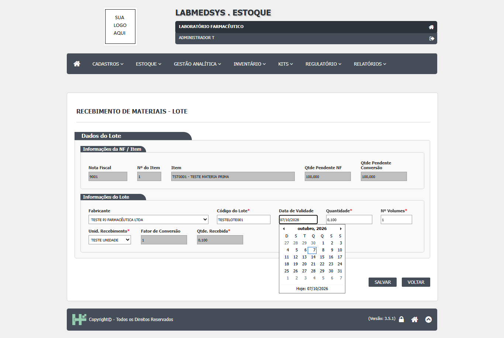
Figura 1: Digitado 100: o campo Quantidade mostra 0,100 e a Qtde. Recebida 0,100
Figura 2: Correção manual para 100,000: "Alteração realizada!"
Onde está no código
Causa (confirmada): a função de máscara fmCampoVal(campo, evt, 3) remove tudo que não é número e sempre coloca a vírgula antes dos 3 últimos dígitos (1 dígito vira 0,00X; 3 dígitos viram 0,XXX). No servidor, o valor é lido tirando os pontos, sem outra conferência.
| Arquivo | Linhas | O que faz |
|---|---|---|
LaboSys_UI/estoque/recebimentoNfItemLote_ed.aspx |
34-44, 68-78 | fmCampoVal: filtra só números e monta as casas decimais a partir dos últimos dígitos. |
LaboSys_UI/estoque/recebimentoNfItemLote_ed.aspx |
350-351 | Campo Quantidade usa a máscara com 3 casas a cada tecla e ao sair do campo. |
LaboSys_UI/estoque/recebimentoNfItemLote_ed.aspx.cs |
487 | Converte o texto para número tirando os pontos. |
Caminhos a partir da pasta app/ do módulo (3.estoque/app).
Sugestão de correção
- Usar uma máscara numérica em que o número digitado é inteiro até o usuário digitar a vírgula.
- Ao salvar o lote, avisar na hora quando a quantidade do lote não bate com a do item (hoje só aparece ao finalizar).
- Revisar as outras telas que usam a mesma função (
fmCampoValaparece copiada em várias páginas).
Como confirmar a correção
Repetir o CT-EST-187 digitando 100 sem vírgula: o lote deve gravar 100,000. Testar também 1,5 (deve gravar 1,500).
Observações
A mesma máscara com 2 casas é usada nos valores da nota fiscal; não foi vista falha lá, mas vale conferir.
DV-EST-004
Checklist de inspeção veicular não mostra as opções de resposta e salva "Aprovado" sem nenhuma resposta
| Gravidade | Situação | Tela | Caso de teste | Encontrado em | Norma afetada |
|---|---|---|---|---|---|
| Média | Aberto | Estoque › Estoque › Checklist de Inspeção Veicular | Preparação do recebimento; reteste CT-EST-181 em 08/10/2026 | 07/10/2026 (rodada de 07/10/2026 (preparação) e 08/10/2026, etapa 1) | RDC 658/2022, art. 183, parágrafo único (verificações de cada entrega documentadas) |
O que acontece
No Checklist, a coluna Avaliação das 15 perguntas aparece vazia: não há opção para responder. Mesmo assim, o registro é salvo com Parecer Aprovado ("Registro cadastrado com sucesso!"). A inspeção pode ser "aprovada" sem ter sido feita, e não há como provar o que foi verificado.
Como reproduzir
- Abrir Estoque › Checklist de Inspeção Veicular e clicar em Incluir.
- Preencher Placa
TST2222, CondutorTESTE CONDUTOR, Tipo de Documento CPF, Nº Documento, Tipo Movimento DESCARGA, Cliente/Fornecedor, Transportadora e Nota Fiscal. - Observar a coluna Avaliação das perguntas 1 a 11 (15 linhas): está vazia.
- Em Parecer, marcar Aprovado e clicar em SALVAR REGISTRO.
Dados de teste usados: Checklists 00003 (placa TST-1234, 07/10) e 00004 (placa TST2222, 08/10), condutor TESTE CONDUTOR, fornecedor TESTE PJ FARMACÊUTICA LTDA, transportadora TRANSLOG TRANSPORTES.
Esperado e obtido
| Esperado | Obtido |
|---|---|
| Cada pergunta mostra as opções de resposta (por exemplo, Sim/Não/Não se aplica) e o registro só é salvo com todas respondidas. Parecer "Aprovado" não é aceito se alguma resposta indicar problema sem justificativa. | Coluna Avaliação vazia; "Registro cadastrado com sucesso!" com Parecer Aprovado e nenhuma resposta. |
Evidências
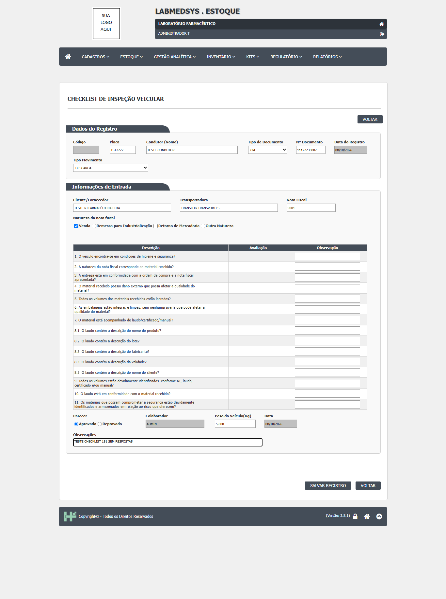
Figura 1: Formulário com Parecer Aprovado; a coluna Avaliação está vazia em todas as perguntas
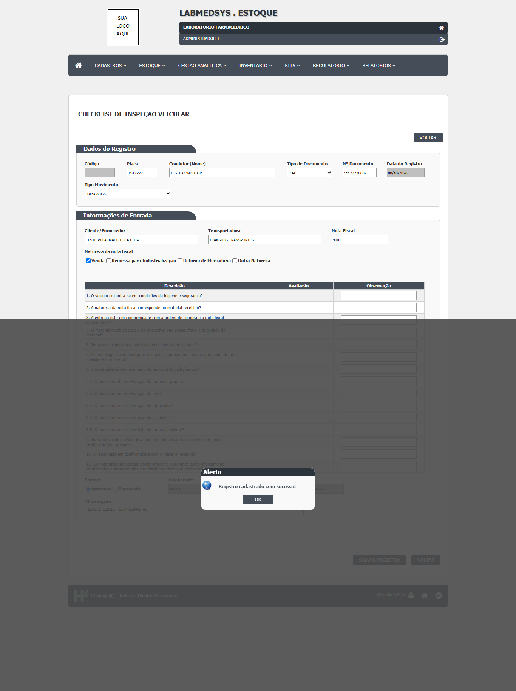
Figura 2: Depois de SALVAR REGISTRO: "Registro cadastrado com sucesso!"
Onde está no código
Causa (provável): Confirmado no código: ao salvar, a tela lê a resposta de cada pergunta e, se estiver vazia, simplesmente segue em frente; o Parecer é gravado sem relação com as respostas. Provável (a investigar): a coluna vazia vem de perguntas sem respostas cadastradas no banco, porque a lista de opções de cada linha é montada a partir de Respostas da pergunta. Conferir com o DBA o cadastro de respostas das perguntas do checklist.
| Arquivo | Linhas | O que faz |
|---|---|---|
LaboSys_UI/estoque/portaria_ed2.aspx.cs |
263 | Grava o Parecer (Aprovado/Reprovado) sem conferir as respostas. |
LaboSys_UI/estoque/portaria_ed2.aspx.cs |
275-288 | Para cada pergunta, se a resposta vier vazia, nada acontece: não há recusa. |
LaboSys_UI/estoque/portaria_ed2.aspx.cs |
476-497 | Monta as opções de cada linha a partir de Respostas da pergunta; sem respostas cadastradas, a coluna fica vazia. |
Caminhos a partir da pasta app/ do módulo (3.estoque/app).
Sugestão de correção
- Garantir que cada pergunta do checklist tenha as opções de resposta (cadastro ou carga inicial) e que elas apareçam na coluna Avaliação.
- Recusar o salvamento se alguma pergunta não for respondida, dizendo qual.
- Impedir Parecer "Aprovado" quando alguma resposta indicar problema, ou exigir justificativa nesse caso.
- Fazer a validação no servidor, não só na tela.
Como confirmar a correção
Repetir o CT-EST-181: com nenhuma resposta, o sistema deve recusar; com todas respondidas, deve gravar e mostrar as respostas ao reabrir o checklist.
Observações
A placa e o número do documento têm máscara. O mesmo comportamento foi visto em 07/10 (checklist 00003) e em 08/10 (00004 e 00005).
DV-EST-010
"Confirmar recebimento" falha com erro genérico quando o item não tem almoxarifado de identificação
| Gravidade | Situação | Tela | Caso de teste | Encontrado em | Norma afetada |
|---|---|---|---|---|---|
| Média | Aberto | Estoque › Estoque › Recebimento de Material (botão CONFIRMAR RECEBIMENTO) | Confirmar recebimento dos recebimentos 00013, 00014 e 00016 | 08/10/2026 (rodada de 08/10/2026, etapas 1 e 2) | RDC 658/2022, art. 141 (registro de cada entrega recebida) |
O que acontece
Depois de autorizado, o recebimento precisa do botão CONFIRMAR RECEBIMENTO. Para o item TESTE MATERIA PRIMA, que foi salvo sem "Almoxarifado de Identificação", o botão falhou quatro vezes com "Erro ao Finalizar Recebimento!", depois de 23 a 26 s. Com o item TST0002, que tem esse campo preenchido, o mesmo botão funcionou em 4,5 s. O cadastro do item deixa salvar sem esse campo (que não tem asterisco), o campo fica travado depois que o item tem movimento, e o recebimento não diz o que falta.
Como reproduzir
- Em Cadastros › Item, ter um item com Almoxarifado de Identificação = SELECIONE (no teste,
TST0001 - TESTE MATERIA PRIMA). - Em Estoque › Recebimento de Material, criar o recebimento com NF, item e lote, clicar em FINALIZAR e autorizar com outro usuário.
- Clicar em CONFIRMAR RECEBIMENTO e confirmar.
- Repetir com um item que tem Almoxarifado de Identificação =
TESTE ALMOX(no teste,TST0002, recebimento 00016).
Dados de teste usados: Itens TST0001 - TESTE MATERIA PRIMA (sem almoxarifado de identificação) e TST0002 - TESTE MATERIA PRIMA 2 (com TESTE ALMOX); recebimentos 00013 (NF 9001) e 00014 (NF 9002) com erro; 00016 (NF 9006) que passou; almoxarifado TESTE ALMOX (00017) com lote identificado, sigla TA.
Esperado e obtido
| Esperado | Obtido |
|---|---|
| O cadastro do item exige o almoxarifado de identificação quando o item vai ser recebido (ou o recebimento usa outro dado), e, se faltar algo, a mensagem diz exatamente o quê (por exemplo, "Item TST0001 sem almoxarifado de identificação"). | "Erro ao Finalizar Recebimento!" nos recebimentos 00013 e 00014, em 23 a 26 s. No 00016: "Recebimento finalizado!" em 4,5 s, status RECEBIDO, item de entrada TA0001/26. |
Evidências
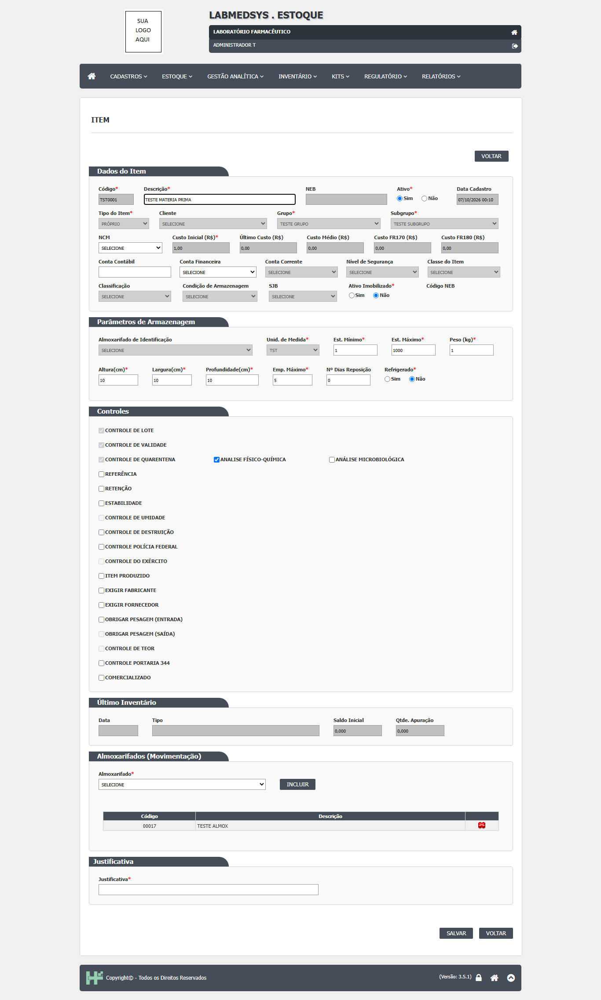
Figura 1: Item TST0001: "Almoxarifado de Identificação" = SELECIONE e travado; TESTE ALMOX só aparece em "Almoxarifados (Movimentação)"
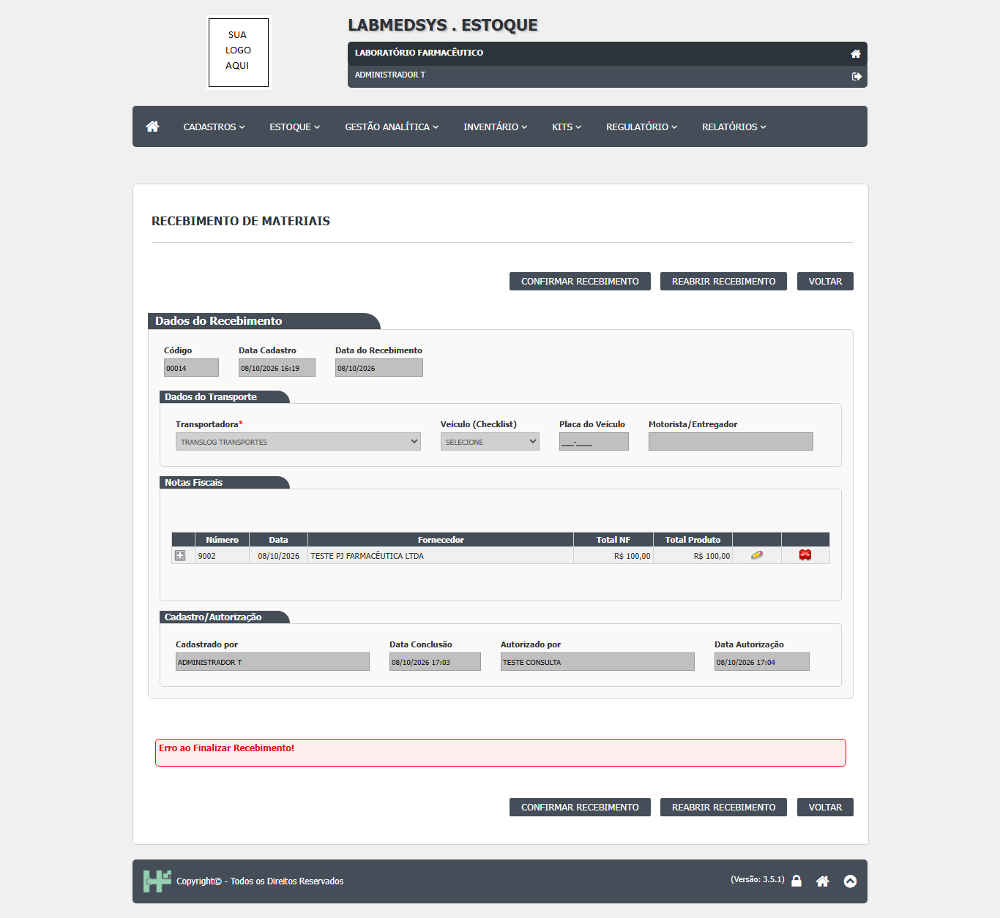
Figura 2: Recebimento 00014 autorizado; ao CONFIRMAR RECEBIMENTO: "Erro ao Finalizar Recebimento!"
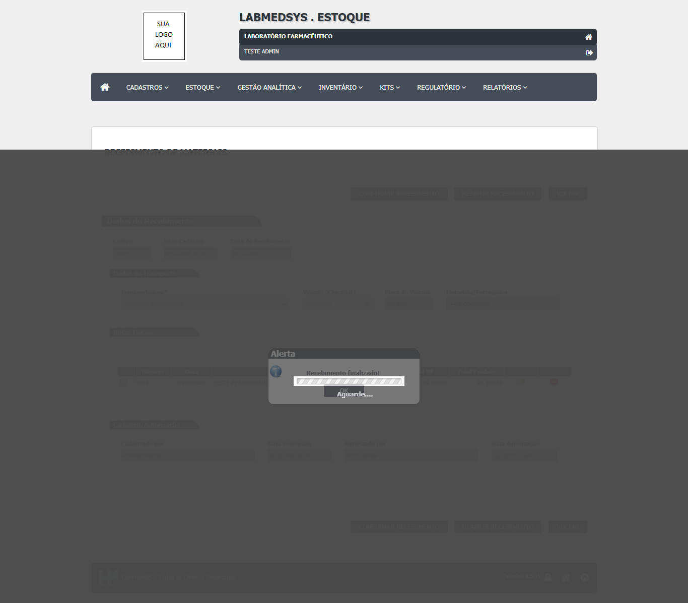
Figura 3: Recebimento 00016 (item com almoxarifado de identificação): "Recebimento finalizado!"
Onde está no código
Causa (confirmada): na confirmação, a sigla usada para gerar o item de entrada vem do almoxarifado padrão do item (LEFT JOIN em ID_ALMOXARIFADO_PADRAO). Sem ele, a sigla é nula, o item de entrada fica nulo e o código do volume também. O banco recusa, porque COD_VOLUME é obrigatório em TBL_NF_ITEM_LOTE_VOLUME. A camada de regra troca o erro por uma mensagem genérica. O texto exato da exceção do banco não foi visto (sem acesso ao banco), mas a comparação 00014 × 00016 e o código fecham a causa.
| Arquivo | Linhas | O que faz |
|---|---|---|
LaboSys_DAL/dalRecebimento.cs |
569, 582-583 | A sigla (A.COD_SIGLA) vem do almoxarifado padrão do item, por LEFT JOIN: fica nula quando o item não tem esse campo. |
LaboSys_DAL/dalRecebimento.cs |
609-635, 680-690 | Monta o item de entrada e o código do volume a partir da sigla; com sigla nula, COD_VOLUME fica nulo e o INSERT falha. |
LaboSys_BLL/bllRecebimento.cs |
229-243 | concluirRecebimento troca a exceção por "Erro ao Finalizar Recebimento!". |
LaboSys_UI/administracao/tabelas_apoio/item_ed.aspx |
311-315 | Campo "Almoxarifado de Identificação" sem asterisco e sem validação. |
LaboSys_UI/administracao/tabelas_apoio/item_ed.aspx.cs |
490, 819 | Salva o item com qualquer valor (inclusive SELECIONE) e trava o campo quando o item já tem movimento. |
Caminhos a partir da pasta app/ do módulo (3.estoque/app).
Sugestão de correção
- No cadastro do item, tornar o Almoxarifado de Identificação obrigatório para itens com controle de lote (ou sempre, se a área confirmar).
- Antes de confirmar o recebimento, conferir os dados de cada item e mostrar mensagem clara, com o item e o campo que falta.
- Não esconder o erro do banco: registrar a exceção no log e mostrar ao usuário uma mensagem útil.
- Permitir corrigir o campo em item com movimento, com justificativa e trilha de auditoria (hoje ele fica travado e o item não pode mais ser recebido).
- Rever o tempo de 23 a 26 s até o erro.
Como confirmar a correção
Confirmar o recebimento de um item sem almoxarifado de identificação: o cadastro do item não deve deixar salvar assim, ou o recebimento deve mostrar a mensagem com o campo que falta. Confirmar com item completo (como o 00016) e conferir que continua funcionando.
Observações
Era Alta; baixada para Média porque há contorno (preencher o campo no item). Continua importante se itens reais forem cadastrados sem ele. O nome na tela ("Almoxarifado de Identificação") é diferente do usado no código (AlmoxarifadoPadrao), e o item também tem a lista "Almoxarifados (Movimentação)": o usuário pode achar que já preencheu.
DV-EST-011
Checklist com parecer "Reprovado" aparece na lista de veículos para usar no recebimento
| Gravidade | Situação | Tela | Caso de teste | Encontrado em | Norma afetada |
|---|---|---|---|---|---|
| Média | Aberto | Estoque › Estoque › Recebimento de Material (campo Veículo (Checklist)) | CT-EST-182 | 08/10/2026 (rodada de 08/10/2026, etapa 1) | RDC 658/2022, art. 156 (problemas que afetam a qualidade investigados e relatados) e art. 183 |
O que acontece
Um checklist salvo com Parecer Reprovado (00005, placa TST9999) aparece na lista Veículo (Checklist) do Recebimento, junto com os aprovados ("00005 - TST9999"). Nada impede usar um veículo reprovado na inspeção para receber material.
Como reproduzir
- Em Estoque › Checklist de Inspeção Veicular, incluir um checklist com placa
TST9999, Parecer Reprovado, e clicar em SALVAR REGISTRO. - Abrir Estoque › Recebimento de Material e incluir um novo recebimento.
- Abrir a lista Veículo (Checklist).
Dados de teste usados: Checklist 00005 (placa TST9999, Reprovado); checklists aprovados 00003 e 00004.
Esperado e obtido
| Esperado | Obtido |
|---|---|
| Checklists reprovados não aparecem para seleção no recebimento (ou aparecem marcados e bloqueados), e o recebimento com veículo reprovado é recusado com mensagem. | A lista mostra "00005 - TST9999" junto com os aprovados. O teste não chegou a salvar um recebimento com ele. |
Evidências
Figura 1: Checklist TST9999 com Parecer Reprovado, antes de salvar
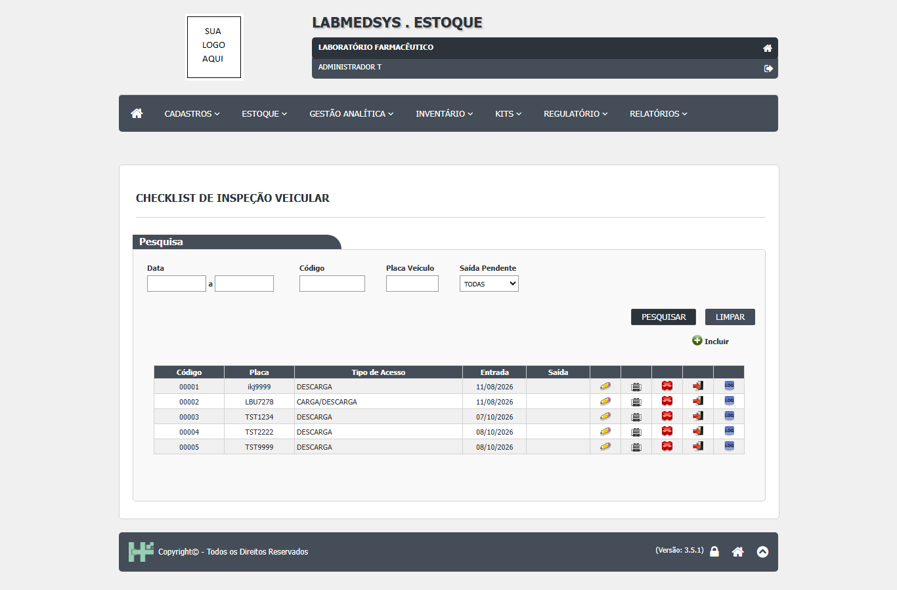
Figura 2: Lista de checklists: 00005 (TST9999) gravado
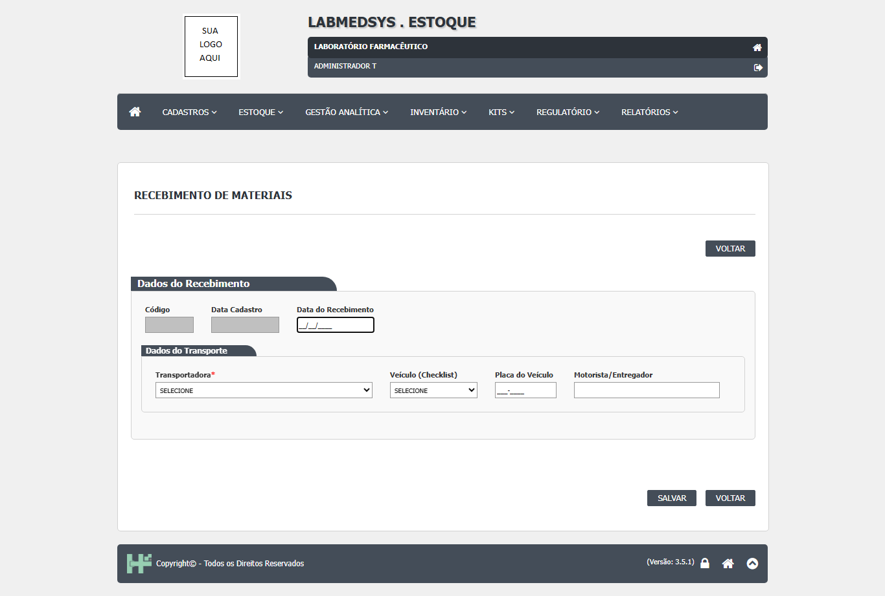
Figura 3: Recebimento novo com o campo Veículo (Checklist); o conteúdo da lista foi lido pelo roteiro do teste
Onde está no código
Causa (confirmada): as duas consultas que alimentam a lista de checklists filtram só por excluído (LIXEIRA), empresa e, na versão "pendente", por saída e uso em outro recebimento. Nenhuma filtra o parecer (aprovado).
| Arquivo | Linhas | O que faz |
|---|---|---|
LaboSys_DAL/dalPortaria.cs |
394-406 | retornarLista: sem filtro de parecer; o filtro de checklist já usado está comentado. |
LaboSys_DAL/dalPortaria.cs |
345-357 | retornaListaPendente: filtra saída e uso em outro recebimento, mas não o parecer. |
LaboSys_UI/estoque/recebimento_ed2.aspx.cs |
152-160 | Recebimento novo usa retornarLista (todos os checklists); recebimento existente usa a lista "pendente". |
Caminhos a partir da pasta app/ do módulo (3.estoque/app).
Sugestão de correção
- Mostrar na lista só checklists aprovados, sem saída e ainda não usados em outro recebimento.
- Recusar no servidor um recebimento ligado a checklist reprovado, com mensagem clara.
- Comportamento esperado pela norma: veículo reprovado gera registro do problema (desvio) e o material não é recebido sem decisão da Qualidade. Ponto para validar com a Garantia da Qualidade.
- Rever a condição da linha 152: parece invertida (o recebimento novo deveria usar a lista de pendentes). Ponto para validar.
Como confirmar a correção
Repetir o CT-EST-182: o checklist 00005 (Reprovado) não deve aparecer em Veículo (Checklist); tentar forçar o uso e conferir a recusa.
Observações
Ligado ao DV-EST-004 (checklist sem respostas) e ao DV-EST-012 (checklist opcional).
DV-EST-012
Recebimento é salvo sem checklist de inspeção, sem placa e sem motorista
| Gravidade | Situação | Tela | Caso de teste | Encontrado em | Norma afetada |
|---|---|---|---|---|---|
| Média | Aberto | Estoque › Estoque › Recebimento de Material | CT-EST-183 | 08/10/2026 (rodada de 08/10/2026, etapa 1) | RDC 658/2022, art. 183, parágrafo único (verificação de cada entrega documentada) |
O que acontece
Na tela Recebimento de Materiais, só a Data do Recebimento e a Transportadora são exigidas. Com Veículo (Checklist) = SELECIONE, Placa do Veículo e Motorista/Entregador em branco, o sistema grava ("Recebimento gerado!", nº 00014). A inspeção veicular deixa de ser obrigatória.
Como reproduzir
- Abrir Estoque › Recebimento de Material e incluir um recebimento.
- Preencher só Data do Recebimento e Transportadora (
TRANSLOG TRANSPORTES); deixar Veículo (Checklist), Placa do Veículo e Motorista/Entregador vazios. - Clicar em SALVAR e confirmar com SIM.
Dados de teste usados: Recebimento 00014 (sem checklist, sem placa, sem motorista), transportadora TRANSLOG TRANSPORTES.
Esperado e obtido
| Esperado | Obtido |
|---|---|
| Exigir o checklist de inspeção (aprovado) e, por consequência, placa e motorista, antes de gravar o recebimento. Se a área quiser exceções (por exemplo, entrega por correio), exigir justificativa. Ponto para validar com a área. | "Recebimento gerado!" (nº 00014) sem checklist, placa ou motorista. |
Evidências
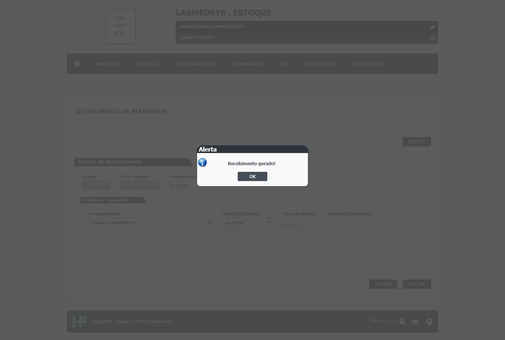
Figura 1: SALVAR sem checklist, placa e motorista: "Recebimento gerado!"
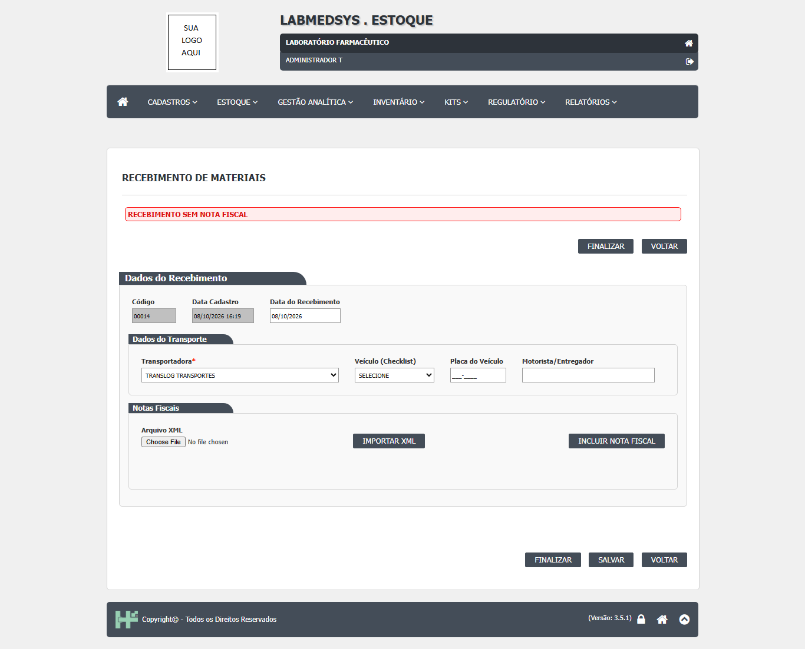
Figura 2: Recebimento 00014 gravado com Veículo (Checklist) = SELECIONE e placa e motorista vazios
Onde está no código
Causa (confirmada): os campos Veículo (Checklist), Placa do Veículo e Motorista/Entregador não têm validação na tela, e o método de salvar grava o que vier, inclusive checklist 0.
| Arquivo | Linhas | O que faz |
|---|---|---|
LaboSys_UI/estoque/recebimento_ed2.aspx |
152-182 | Veículo (Checklist), Placa e Motorista sem asterisco e sem validador (só a Transportadora tem). |
LaboSys_UI/estoque/recebimento_ed2.aspx.cs |
212-220 | salvar grava motorista, placa e checklist sem conferir se foram informados. |
Caminhos a partir da pasta app/ do módulo (3.estoque/app).
Sugestão de correção
- Tornar o checklist de inspeção obrigatório no recebimento e conferir no servidor que ele está aprovado e não foi usado em outro recebimento.
- Preencher placa e motorista a partir do checklist e não deixar editá-los à mão (hoje podem divergir do checklist).
- Se houver exceções aceitas pela Qualidade, exigir justificativa e registrar quem decidiu.
Como confirmar a correção
Repetir o CT-EST-183: sem checklist, o recebimento deve ser recusado com mensagem. Com checklist aprovado, deve gravar com placa e motorista do checklist.
Observações
Ver também DV-EST-011 (checklist reprovado na lista).
DV-EST-018
Exclusão de endereço não pede justificativa
| Gravidade | Situação | Tela | Caso de teste | Encontrado em | Norma afetada |
|---|---|---|---|---|---|
| Média | Aberto | Estoque › Cadastros › Endereço do Estoque (exclusão) | CT-EST-032 | 12/10/2026 (rodada 2 de 12/10/2026 (partes A e B)) | RDC 658/2022, art. 125 (alteração com motivo) |
O que acontece
A exclusão de um endereço pede só "Confirma a exclusão do item?" (SIM/NÃO). A inclusão tem campo de justificativa; a exclusão não. A recusa para endereço com saldo ainda não foi testada.
Como reproduzir
- Criar um endereço vazio
L901-R901-C905-A901. - Na lista, escolher Excluir para esse endereço.
- Confirmar com SIM.
Dados de teste usados: Endereço L901-R901-C905-A901, criado e excluído no teste.
Esperado e obtido
| Esperado | Obtido |
|---|---|
| Pedir a justificativa da exclusão e gravá-la no histórico. | Excluiu sem pedir justificativa ("Exclusão realizada com sucesso!"). |
| ### Sugestão de correção |
- Exigir justificativa na exclusão, como na inclusão.
- Gravar quem, quando e por quê no histórico.
Observações
Reteste: excluir também um endereço com saldo, que deve ser recusado (CT-EST-032, segunda parte).
DV-EST-020
Análise do Estoque aceita 13 meses: a trava de 12 meses está comentada no código
| Gravidade | Situação | Tela | Caso de teste | Encontrado em | Norma afetada |
|---|---|---|---|---|---|
| Média | Aberto | Estoque › Gestão analítica › Análise de Estoque | CT-EST-161 | 12/10/2026 (rodada 2 de 12/10/2026 (partes A e B)) | Guia 33/2020, 9.3.2.3 (limites dos dados) |
O que acontece
O fluxo prevê o limite de 12 meses para o período de análise e para o período da necessidade. O código tem a validação comentada. A tela aceitou 13 meses nos dois campos.
Como reproduzir
- Abrir Estoque › Análise de Estoque e escolher INCLUIR.
- Informar um período de análise de 13 meses e uma necessidade de 13 meses.
- Gerar a análise.
Esperado e obtido
| Esperado | Obtido |
|---|---|
| Recusa: "Período de análise não pode ser superior a 12 meses!". | Aceitou: "Análise concluída!" (análises 00000005 e 00000006). |
| ### Onde está no código |
Causa (confirmada): A validação do período está comentada no código.
| Arquivo | Linhas | O que faz |
|---|---|---|
LaboSys_UI/gestao/analise_ed.aspx.cs |
144-151 | Trava de 12 meses comentada |
Caminhos a partir da pasta app/ do módulo (3.estoque/app).
Sugestão de correção
- Religar a trava de 12 meses (ou decidir o limite com a área e aplicá-lo).
DV-EST-021
Pedido de Compra: pedido aberto não reabre, quantidade "100" vira 0,100 e faltam mensagens
| Gravidade | Situação | Tela | Caso de teste | Encontrado em | Norma afetada |
|---|---|---|---|---|---|
| Média | Aberto | Estoque › Gestão analítica › Pedido de Compra | CT-EST-162 e CT-EST-163 | 12/10/2026 (rodada 2 de 12/10/2026 (partes A e B)) | Guia 33/2020, 9.3.2.3 |
O que acontece
(a) Um pedido aberto não pode ser reaberto pela lista (só "Excluir"), então só se monta na tela em que o cabeçalho foi criado. (b) A quantidade "100" é gravada como 0,100 pela máscara de três casas decimais, sem aviso. (c) "Gerar pedido" sem fornecedor não mostra mensagem. (d) Depois de gerar pelo atalho da análise, aparece "Sem itens pendentes!".
Como reproduzir
- Abrir Estoque › Análise de Estoque e gerar um pedido a partir da necessidade.
- Em Pedido de Compra, incluir um item com quantidade
100. - Tentar reabrir o pedido pela lista.
Esperado e obtido
| Esperado | Obtido |
|---|---|
| Quantidade gravada como digitada; pedido aberto pode ser reaberto; mensagem quando falta o fornecedor. | Quantidade 0,100; pedido sem opção de reabrir; botão sem mensagem sem fornecedor. |
| ### Sugestão de correção |
- Máscara que mostra a casa decimal e confirma a quantidade.
- Permitir reabrir o pedido aberto.
- Mensagem quando falta o fornecedor.
Observações
As capturas de tela ficam em execucao/2026-10-12/evidencias/, com o nome do caso (CT-EST-162 e CT-EST-163). Não foram anexadas aqui porque ainda não foram conferidas uma a uma contra este defeito.
DV-EST-023
A avaliação do fornecedor não pode ser alterada e não tem histórico
| Gravidade | Situação | Tela | Caso de teste | Encontrado em | Norma afetada |
|---|---|---|---|---|---|
| Média | Aberto | Estoque › Avaliação do Fornecedor | CT-EST-167 | 12/10/2026 (rodada 2 de 12/10/2026 (partes A e B)) | RDC 658/2022, art. 125 |
O que acontece
Depois de gravada, a avaliação só oferece "Imprimir": não há Editar nem histórico. O fluxo previa alteração com justificativa e histórico com valor antigo e novo.
Como reproduzir
- Abrir Estoque › Avaliação do Fornecedor e pesquisar a avaliação gravada.
- Procurar as opções da linha.
Esperado e obtido
| Esperado | Obtido |
|---|---|
| Alterar com justificativa e ver o histórico. | Só existe "Imprimir". |
| ### Sugestão de correção |
- Permitir alterar com justificativa.
- Gravar o histórico com valor anterior, novo, quem e quando.
Observações
As capturas de tela ficam em execucao/2026-10-12/evidencias/, com o nome do caso (CT-EST-167). Não foram anexadas aqui porque ainda não foram conferidas uma a uma contra este defeito.
DV-EST-026
A análise do produto acabado abre como tipo NORMAL
| Gravidade | Situação | Tela | Caso de teste | Encontrado em | Norma afetada |
|---|---|---|---|---|---|
| Média | Aberto | Estoque › Entrada de Material - Produção → CQ | CT-EST-097 | 12/10/2026 (rodada 2 de 12/10/2026 (partes A e B)) | — |
O que acontece
O código prevê abrir uma análise do tipo "produto acabado" ao dar entrada. A solicitação nasceu como tipo NORMAL, e a etiqueta não foi verificada.
Como reproduzir
- Dar entrada em
TESTEPA001pela Entrada de Material - Produção. - No CQ, abrir Solicitação de Análise e ver o tipo.
Esperado e obtido
| Esperado | Obtido |
|---|---|
| Análise do tipo produto acabado. | Análise do tipo NORMAL. |
| ### Onde está no código |
| Arquivo | Linhas | O que faz |
|---|---|---|
LaboSys_UI/estoque/entrada_producao_ed.aspx.cs |
163-166 | Abertura da análise do tipo produto acabado |
Caminhos a partir da pasta app/ do módulo (3.estoque/app).
Observações
A confirmar com a Garantia da Qualidade se o tipo NORMAL serve para produto acabado. As capturas de tela ficam em execucao/2026-10-12/evidencias/, com o nome do caso (CT-EST-097). Não foram anexadas aqui porque ainda não foram conferidas uma a uma contra este defeito.
DV-EST-029
O Estoque só fica sabendo do laudo quando alguém clica em "Atualizar resultado"
| Gravidade | Situação | Tela | Caso de teste | Encontrado em | Norma afetada |
|---|---|---|---|---|---|
| Média | Aberto | Estoque × CQ › Controle da Qualidade (Estoque) | CT-EST-211 | 12/10/2026 (rodada 3 de 12/10/2026 (parte C: quarentena e CQ)) | RDC 658/2022, arts. 157 e 189 |
O que acontece
Depois do laudo, o lote reprovado continua "Solicitado" no Estoque até alguém clicar em "Atualizar resultado". Depois de atualizado, o saldo mostra o mesmo material em Quarentena 90 e Bloqueado 90 ao mesmo tempo.
Como reproduzir
- Reprovar o laudo do
TESTEPA998no CQ. - No Estoque, abrir Controle da Qualidade e ver a situação do lote.
- Clicar em Atualizar resultado e abrir a Disponibilidade do Lote.
Esperado e obtido
| Esperado | Obtido |
|---|---|
| O laudo muda a situação do lote na hora, sem ninguém atualizar. | Lote "Solicitado" até o clique; depois, saldo em quarentena e bloqueado juntos (a coluna Reprovado fica em 0). |
| ### Sugestão de correção |
- O CQ avisa o Estoque ao emitir o laudo (trava 2).
- Uma só situação por lote, sem somar quarentena e bloqueado.
Observações
As capturas de tela ficam em execucao/2026-10-12/evidencias/, com o nome do caso (CT-EST-211). Não foram anexadas aqui porque ainda não foram conferidas uma a uma contra este defeito. Confirmado na rodada 5 (13/10/2026, CT-EST-060): o laudo 009/26 (reanálise do TESTELOTE003) foi aprovado e emitido no CQ e o saldo continuou 80 em "Reanálise"; só depois de "Atualizar resultado", no Estoque, passou a 80 disponíveis. A tela do CQ não avisa nem leva a esse passo.
DV-EST-030
O "Responsável" do laudo mostra quem vê a tela, e não quem aprovou
| Gravidade | Situação | Tela | Caso de teste | Encontrado em | Norma afetada |
|---|---|---|---|---|---|
| Média | Aberto | CQ › Laudo | CT-EST-206 | 12/10/2026 (rodada 3 de 12/10/2026 (parte C: quarentena e CQ)) | RDC 658/2022, art. 124 |
O que acontece
O campo "Responsável" do laudo mostra o usuário que está com a tela aberta. Quem aprovou só aparece no Estoque ("Aprovado por"), depois da atualização. O "número do laudo" no Estoque é o número da solicitação (005/26).
Como reproduzir
- Aprovar e emitir o laudo do
TESTEPA001com um usuário. - Abrir o laudo com outro usuário e ver o campo Responsável.
- No Estoque, atualizar o resultado e ver "Aprovado por".
Esperado e obtido
| Esperado | Obtido |
|---|---|
| O laudo mostra quem aprovou e quando, com número próprio. | Mostra quem vê a tela; número do laudo igual ao da solicitação. |
| ### Sugestão de correção |
- Gravar quem aprovou e a data no laudo.
- Dar ao laudo um número próprio.
Observações
As capturas de tela ficam em execucao/2026-10-12/evidencias/, com o nome do caso (CT-EST-206). Não foram anexadas aqui porque ainda não foram conferidas uma a uma contra este defeito.
DV-EST-032
A amostra do CQ sai do estoque sem registro na Central de Pesagem
| Gravidade | Situação | Tela | Caso de teste | Encontrado em | Norma afetada |
|---|---|---|---|---|---|
| Média | Aberto | Estoque › Separação da amostra | CT-EST-201 | 12/10/2026 (rodada 3 de 12/10/2026 (parte C: quarentena e CQ)) | RDC 658/2022, art. 124 |
O que acontece
A amostra sai do estoque (100 para 90) sem passar pela Central de Pesagem. A solicitação nasce já "atendida", e basta confirmar a separação. O "Volume" do lote continua com a quantidade antiga (100).
Como reproduzir
- No CQ, programar a amostragem do
TESTEPA001. - No Estoque, confirmar a separação da amostra.
- Abrir a Central de Pesagem e a Disponibilidade do Lote.
Esperado e obtido
| Esperado | Obtido |
|---|---|
| Pesagem registrada (tag da balança, lacre, peso) e volume atualizado. | Sem registro de pesagem; saldo 90 e volume 100. |
| ### Sugestão de correção |
- Exigir a pesagem na saída da amostra.
- Atualizar o volume do lote.
Observações
As capturas de tela ficam em execucao/2026-10-12/evidencias/, com o nome do caso (CT-EST-201). Não foram anexadas aqui porque ainda não foram conferidas uma a uma contra este defeito.
DV-EST-034
O Histórico do Lote não mostra usuário, hora, análise, laudo nem a reprovação
| Gravidade | Situação | Tela | Caso de teste | Encontrado em | Norma afetada |
|---|---|---|---|---|---|
| Média | Aberto | Estoque › Histórico do Lote | CT-EST-209 | 12/10/2026 (rodada 3 de 12/10/2026 (parte C: quarentena e CQ)) | RDC 658/2022, arts. 124 e 125 |
O que acontece
O histórico mostra só as movimentações e o saldo por endereço: sem coluna de usuário nem de hora, sem a análise, sem o laudo, sem o aprovador e, no lote reprovado, sem a reprovação.
Como reproduzir
- Abrir Estoque › Histórico do Lote.
- Pesquisar o
TESTEPA001e, depois, oTESTEPA998.
Esperado e obtido
| Esperado | Obtido |
|---|---|
| Entrada, análise, laudo, aprovador e movimentações, com usuário e hora, na ordem. | Só as quatro movimentações e o saldo; nada de usuário, hora, análise ou laudo. |
| ### Sugestão de correção |
- Incluir no histórico o usuário, a hora, a análise, o laudo, o aprovador e as mudanças de situação.
Observações
As capturas de tela ficam em execucao/2026-10-12/evidencias/, com o nome do caso (CT-EST-209). Não foram anexadas aqui porque ainda não foram conferidas uma a uma contra este defeito.
DV-EST-038
O resultado de conformidade vem pré-selecionado em CONFORME
| Gravidade | Situação | Tela | Caso de teste | Encontrado em | Norma afetada |
|---|---|---|---|---|---|
| Média | Aberto | CQ › Consultar Análise Programada | CT-EST-202 | 12/10/2026 (rodada 3 de 12/10/2026 (parte C: quarentena e CQ)) | RDC 658/2022, art. 258 e Guia 33/2020 (integridade dos dados) |
O que acontece
Na digitação dos resultados da análise, o campo de conformidade já vem em "CONFORME". Quem salva sem mexer registra "conforme" sem ter avaliado.
Como reproduzir
- No CQ, abrir Consultar Análise Programada e escolher a análise.
- Digitar o teor e deixar a conformidade como veio.
- Salvar.
Esperado e obtido
| Esperado | Obtido |
|---|---|
| Nenhuma opção pré-selecionada: o analista escolhe. | "CONFORME" já marcado. |
| ### Sugestão de correção |
- Campo de conformidade em branco, obrigatório.
Observações
As capturas de tela ficam em execucao/2026-10-12/evidencias/, com o nome do caso (CT-EST-202). Não foram anexadas aqui porque ainda não foram conferidas uma a uma contra este defeito.
DV-EST-039
Reanálise avulsa não pede justificativa e usa a mesma mensagem para recusas diferentes
| Gravidade | Situação | Tela | Caso de teste | Encontrado em | Norma afetada |
|---|---|---|---|---|---|
| Média | Aberto | Estoque › Reanálise Avulsa | CT-EST-056, 057 e 059 | 13/10/2026 (rodada 4 de 13/10/2026 (movimentação interna; reprovado e reanálise)) | RDC 658/2022, art. 125 (motivo da alteração) |
O que acontece
A tela não tem campo de justificativa, que o fluxo exige. As duas recusas (lote já em reanálise e lote reprovado) mostram a mesma mensagem "Lote não possui saldo para ser analisado!", em vez de dizer a causa, e numa faixa vermelha, e não no alerta.
Como reproduzir
- Abrir Estoque › Reanálise Avulsa e pesquisar o
TESTELOTE003; gerar a reanálise ("Deseja gerar a Reanálise?"). - Pesquisar de novo o mesmo lote.
- Pesquisar um lote reprovado (
TESTEPA998).
Dados de teste usados: Lotes TESTELOTE003 (reanálise 0001/26) e TESTEPA998 (TA0004/26).
Esperado e obtido
| Esperado | Obtido |
|---|---|
| Campo de justificativa; mensagem própria para cada recusa ("O Lote possui análise não finalizada!" e "O Lote está bloqueado. Operação não permitida!"). | Reanálise gerada sem justificativa; as duas recusas mostram "Lote não possui saldo para ser analisado!". |
| ### Sugestão de correção |
- Pedir a justificativa na reanálise avulsa.
- Mensagem específica por causa da recusa.
DV-EST-041
A Agenda de Reanálise não lista lote de item que já teve movimentação (a confirmar)
| Gravidade | Situação | Tela | Caso de teste | Encontrado em | Norma afetada |
|---|---|---|---|---|---|
| Média | Aberto | Estoque › Agenda de Reanálise | CT-EST-055 | 13/10/2026 (rodada 4 de 13/10/2026 (movimentação interna; reprovado e reanálise)) | RDC 658/2022, art. 189 (data de reanálise) |
O que acontece
O TESTELOTE003 (reanálise em 12/10/2028) não aparece na agenda de 2026 a 2030. Pelo código, a lista usa a classificação de reanálise do item, e esse campo trava depois da primeira movimentação: os itens já movimentados nunca entram na agenda. A reanálise avulsa funciona sem a classificação.
Como reproduzir
- Abrir Estoque › Agenda de Reanálise.
- Pesquisar o período de 2026 a 2030.
Dados de teste usados: Item TST0001, lote TESTELOTE003.
Esperado e obtido
| Esperado | Obtido |
|---|---|
| O lote com data de reanálise dentro do período aparece na agenda. | Lista vazia. |
| ### Sugestão de correção |
- A data de reanálise do lote entra na agenda mesmo que o item já tenha movimentação.
- Permitir alterar a classificação de reanálise com justificativa e histórico.
Observações
A confirmar: a causa vem da leitura do código; o teste só mostrou a lista vazia. Rodada 5 (13/10/2026): a leitura mudou. O campo da classificação de reanálise nunca aparece no cadastro do Item (DV-EST-043); por isso o TST0001 só pode ter recebido a classificação por outro caminho (carga inicial ou script). Enquanto não se souber como o vínculo foi feito, não dá para afirmar que o problema é o travamento depois da primeira movimentação.
DV-EST-042
Item refrigerado fica sem nenhum destino na Movimentação de Material (a confirmar)
| Gravidade | Situação | Tela | Caso de teste | Encontrado em | Norma afetada |
|---|---|---|---|---|---|
| Média | Aberto | Estoque › Movimentação de Material | CT-EST-040 | 13/10/2026 (rodada 4 de 13/10/2026 (movimentação interna; reprovado e reanálise)) | RDC 658/2022, art. 157 (armazenagem) e Guia 33/2020 |
O que acontece
Com o item marcado como refrigerado, a lista de locais de destino fica vazia, apesar de existir o local refrigerado 904 ativo, com endereço, no mesmo almoxarifado. Com o item não refrigerado, a lista traz 901, 903 e 905.
Como reproduzir
- Marcar o
TST0003como refrigerado (Cadastros › Item). - Abrir Movimentação de Material e escolher o item.
- Abrir a lista de locais de destino.
Dados de teste usados: Item TST0003, local 904 - TESTE LOCAL REFRIGERADO. O item foi devolvido ao valor original.
Esperado e obtido
| Esperado | Obtido |
|---|---|
| Só o local refrigerado (904). | Lista vazia. |
| ### Sugestão de correção |
- Listar os locais refrigerados com endereço livre para o item.
- Dizer o motivo quando não houver destino.
Observações
A confirmar: a causa não foi investigada (pode ser a capacidade pequena do endereço do 904, 10 kg).
DV-EST-045
O Atendimento de Solicitação não tem campo de justificativa
| Gravidade | Situação | Tela | Caso de teste | Encontrado em | Norma afetada |
|---|---|---|---|---|---|
| Média | Aberto | Estoque › Atendimento de Solicitação | CT-EST-079 | 13/10/2026 (rodada 6 de 13/10/2026 (atendimento à produção e remessa)) | RDC 658/2022, art. 125 (registro de quem fez e por quê) |
O que acontece
Ao atender a solicitação 00038 com 8 unidades do TESTEPA001, o saldo baixou corretamente (disponível 90 → 82; endereço L905-R905-C905-A905 de 10 para 2) e a solicitação mudou de situação. Mas a tela não tem campo de justificativa, nem antes nem depois de atender, diferente de outras telas do Estoque (cancelar separação, excluir endereço).
Como reproduzir
- Abrir Estoque › Atendimento de Solicitação, escolher uma solicitação pendente.
- Escolher o lote e a quantidade; clicar em Atender e em Salvar.
Dados de teste usados: Solicitação 00038 (item TST0003), lote TESTEPA001, 8 unidades.
Esperado e obtido
| Esperado | Obtido |
|---|---|
| Campo de justificativa obrigatório, gravado com o atendimento. | Não há campo; o atendimento grava sem motivo. |
| ### Sugestão de correção |
- Pedir justificativa ao atender quantidade diferente da solicitada ou lote diferente do sugerido, e gravá-la no histórico.
Como confirmar a correção
CT-EST-079.
Observações
A tela valida o saldo antes de gravar (20 unidades foram recusadas: "Saldo insuficiente para atender o item!").
DV-EST-049
No inventário, a mesma pessoa conta três vezes, justifica e apura, sem nenhuma restrição
| Gravidade | Situação | Tela | Caso de teste | Encontrado em | Norma afetada |
|---|---|---|---|---|---|
| Média | Aberto | Estoque › Inventário - Contagem, Auditoria/Justificativa e Apuração | CT-EST-140 | 22/10/2026 (rodada 8) | Guia 33/2020 (segregação de funções e integridade dos dados); RDC 658/2022 (registro por responsável). |
O que acontece
O mesmo usuário fez a 1ª, a 2ª e a 3ª contagem, justificou a divergência e executou a apuração do inventário, e o saldo foi ajustado (75 para 72). O sistema não pede um segundo contador nem avisa que quem conta também apura.
Como reproduzir
- Gerar um inventário rotativo de almoxarifado (Inventário, almoxarifado
TESTE ALMOXARIFADO). - Em Inventário - Contagem, registrar a 1ª contagem (70) e finalizar; repetir a 2ª (73) e a 3ª (72), com o mesmo usuário.
- Em Inventário - Auditoria/Justificativa, justificar o item com o mesmo usuário e finalizar.
- Em Inventário - Apuração, executar o inventário com o mesmo usuário.
Dados de teste usados: Inventário 1, endereço L110-R001-C001-A001, lote TESTEPA001, saldo de 75 para 72.
Esperado e obtido
| Esperado | Obtido |
|---|---|
| Contagens por pessoas diferentes e apuração por um responsável diferente de quem contou (ou, no mínimo, um aviso e o registro de que foi a mesma pessoa). | Nenhum aviso. Mensagens: "1ª Contagem finalizada! Necessário efetuar nova contagem!", "3ª Contagem finalizada! Necessário justificar divergências!", "Justificativa finalizada!", "Processamento concluído! Foram processados: 1 item(ns)." |
Evidências
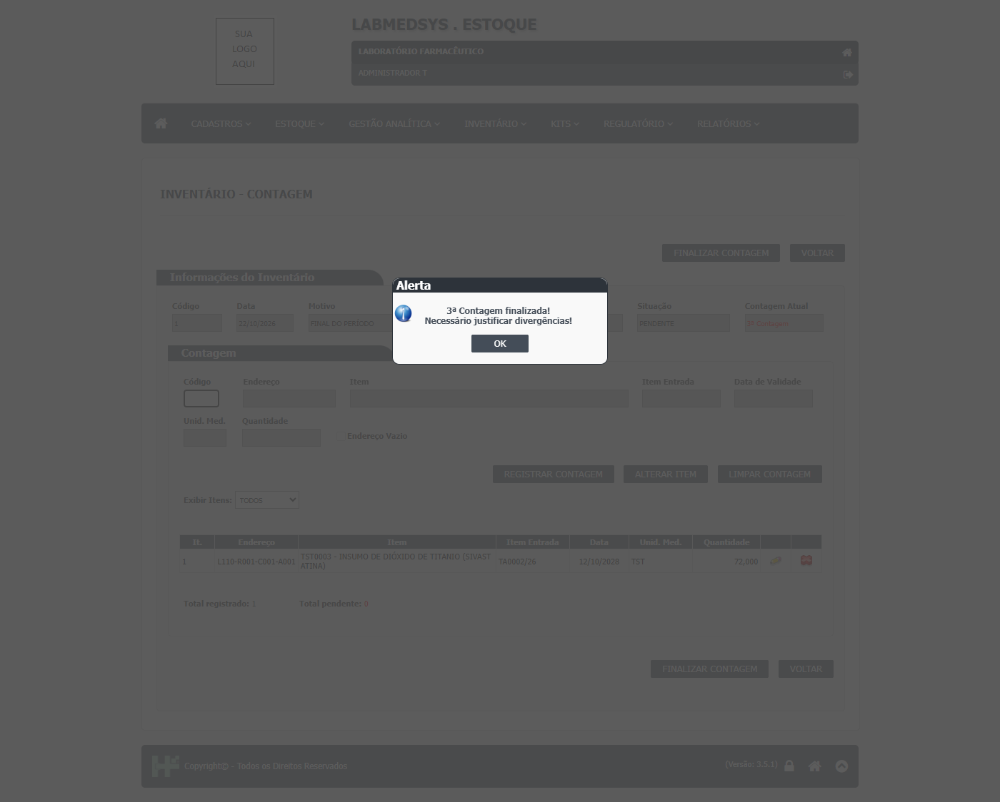
Figura 1: 3ª contagem finalizada pelo mesmo usuário.
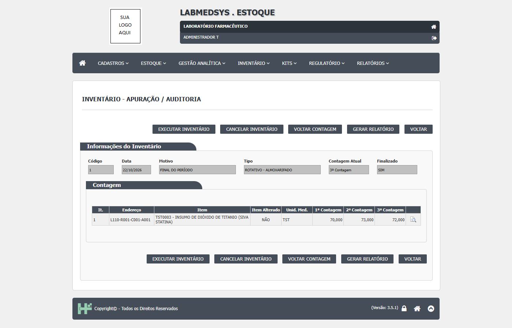
Figura 2: Apuração com as três contagens.
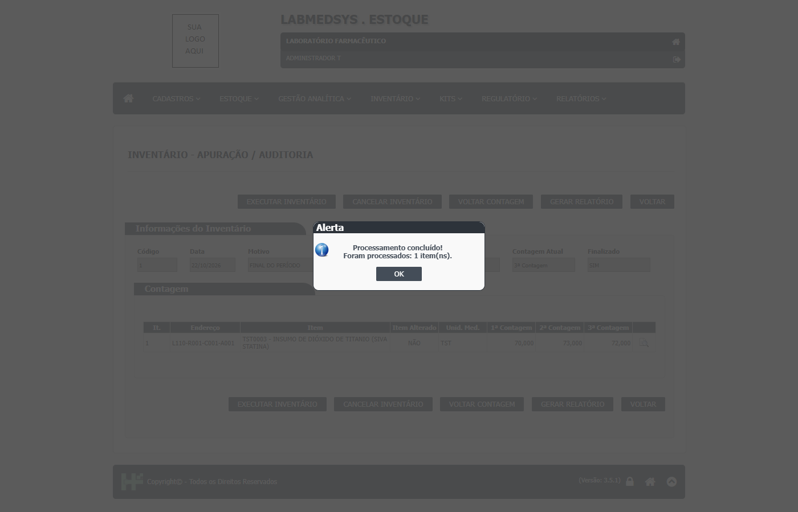
Figura 3: Inventário processado.
Sugestão de correção
- Registrar o usuário de cada contagem e impedir (ou exigir segundo responsável) que quem contou execute a apuração.
Observações
Defeito encontrado na rodada 8 do ambiente de teste do legado. A causa no código não foi investigada nesta rodada.
DV-EST-050
Cancelar o inventário não pede justificativa; reabrir contagem oferece contagens que não existem
| Gravidade | Situação | Tela | Caso de teste | Encontrado em | Norma afetada |
|---|---|---|---|---|---|
| Média | Aberto | Estoque › Inventário - Apuração | CT-EST-139 | 22/10/2026 (rodada 8) | Guia 33/2020 (rastreabilidade da alteração); RDC 658/2022, art. 124. |
O que acontece
Na Apuração, o botão CANCELAR INVENTÁRIO pergunta só "Deseja cancelar o Inventário?" e cancela, sem pedir o motivo. O botão VOLTAR CONTAGEM oferece PRIMEIRA, SEGUNDA e TERCEIRA mesmo quando só uma contagem foi feita.
Como reproduzir
- Abrir um inventário e fazer só a 1ª contagem igual ao saldo; finalizar ("Inventário concluído!").
- Em Inventário - Apuração, abrir o inventário e clicar em VOLTAR CONTAGEM: a lista tem PRIMEIRA, SEGUNDA e TERCEIRA.
- Confirmar a reabertura ("A Contagem foi reaberta!").
- Clicar em CANCELAR INVENTÁRIO e SIM.
Dados de teste usados: Inventário 2 (almoxarifado TESTE ALMOXARIFADO, lote TESTEPA001).
Esperado e obtido
| Esperado | Obtido |
|---|---|
| Pedir justificativa para cancelar e só oferecer a reabertura das contagens que existem. | "Deseja cancelar o Inventário?" e "Inventário cancelado!", sem justificativa; o endereço foi liberado. Nenhum campo de motivo na tela. |
Evidências
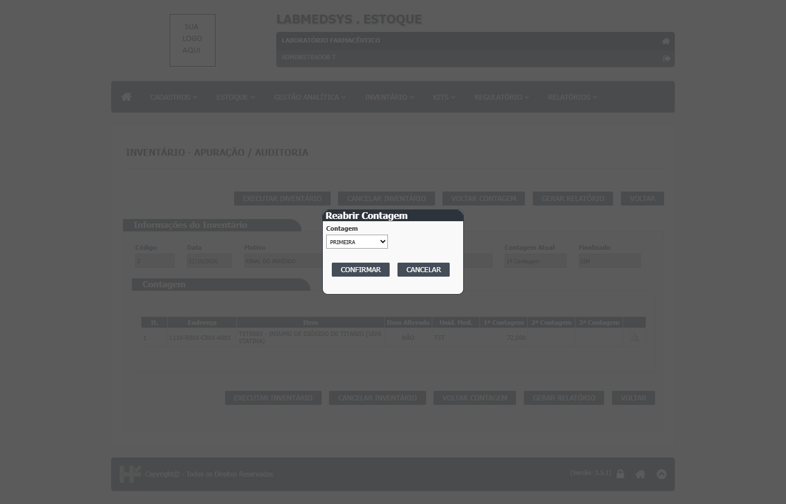
Figura 1: Lista de contagens a reabrir.
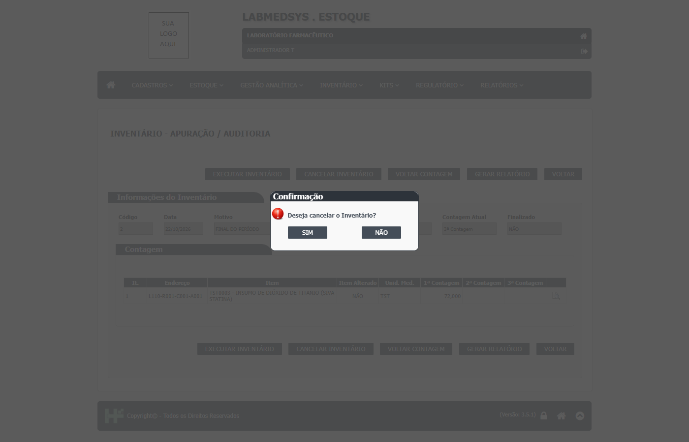
Figura 2: Cancelamento confirmado.
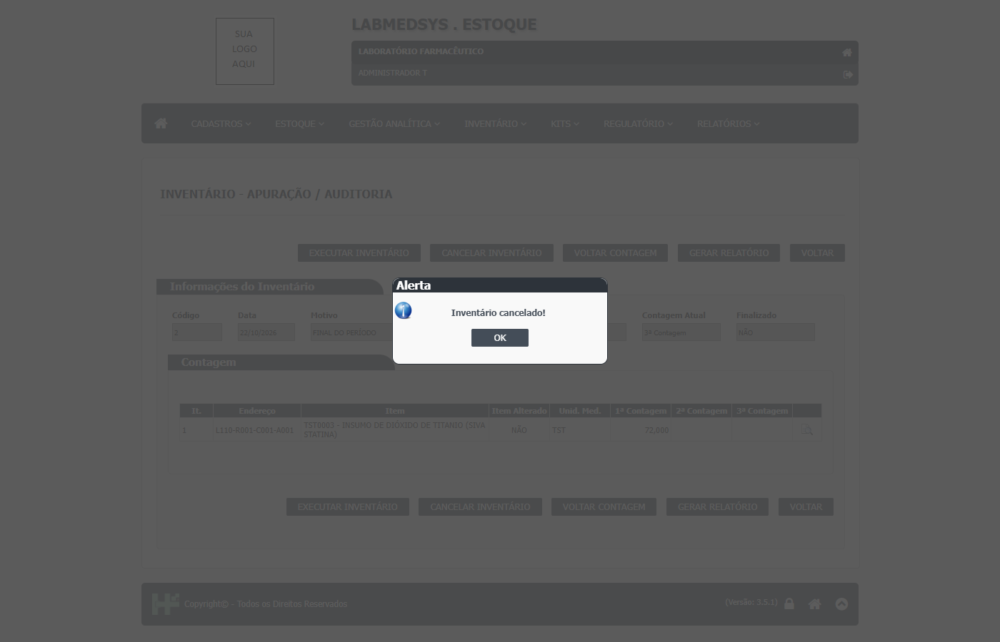
Figura 3: Inventário cancelado.
Sugestão de correção
- Exigir justificativa no cancelamento e mostrar só as contagens já feitas na reabertura.
Observações
Defeito encontrado na rodada 8 do ambiente de teste do legado. A causa no código não foi investigada nesta rodada.
DV-EST-052
A tela Banco não grava e mostra um erro técnico ao usuário
| Gravidade | Situação | Tela | Caso de teste | Encontrado em | Norma afetada |
|---|---|---|---|---|---|
O que acontece
A tela de Banco do Estoque não está no menu, mas abre pelo endereço. Ao salvar um banco novo, aparece "Erro na inclusão do registro." e um link de detalhe que mostra ao usuário o texto técnico do banco de dados. Nada é gravado. A lista de bancos não tem botão Incluir.
Como reproduzir
- Abrir a tela de Banco do Estoque pelo endereço (ela não está no menu).
- Digitar código 9901, nome
TESTE BANCO R8e justificativa. - Clicar em SALVAR REGISTRO e SIM; abrir o link "Detalhe do erro (+)".
Dados de teste usados: Código 9901, nome TESTE BANCO R8.
Esperado e obtido
| Esperado | Obtido |
|---|---|
| Banco gravado e visível no Principal (o cadastro é compartilhado), ou a tela retirada do sistema se não deve ser usada. | "Erro na inclusão do registro." e, no detalhe, um texto técnico do banco de dados mostrado ao usuário. |
Evidências
Sugestão de correção
- Corrigir a gravação do banco e mostrar ao usuário só uma mensagem clara, guardando o detalhe técnico no registro de erros.
Observações
Defeito encontrado na rodada 8 do ambiente de teste do legado. A causa no código não foi investigada nesta rodada.
DV-EST-054
A Análise do Planejamento de Kits diz "Analise gerada!" mas não grava nem mostra nada
| Gravidade | Situação | Tela | Caso de teste | Encontrado em | Norma afetada |
|---|---|---|---|---|---|
| Média | Aberto | Estoque › Kits › Análise do Planejamento de Kits | CT-EST-152 | 22/10/2026 (rodada 8) | Guia 33/2020 (o sistema não pode confirmar o que não gravou; ver DV-EST-016). |
O que acontece
Com cliente, filial e período (30 ou 90 dias), a tela pergunta "Confirma a Geração da Análise?" e responde "Analise gerada!". Mas o Código e a Data de geração continuam em branco, a tela não mostra a necessidade e a lista de análises segue vazia ("A pesquisa não retornou nenhum resultado.").
Como reproduzir
- Ter o planejamento 00001 (cliente EMC IND FARMACEUTICA, validade mínima 180 dias, kit
TESTE KIT R8com 3 unidades). - Abrir Kits › Análise do Planejamento de Kits › Gerar; escolher o cliente e a filial; Período 90.
- Clicar em GERAR e SIM.
- Voltar à lista e pesquisar.
Dados de teste usados: Planejamento 00001, kit 00001.
Esperado e obtido
| Esperado | Obtido |
|---|---|
| Análise gravada, listada e com a necessidade de componentes para o período. | "Analise gerada!" e nada na lista (duas gerações, com 30 e 90 dias). |
Evidências
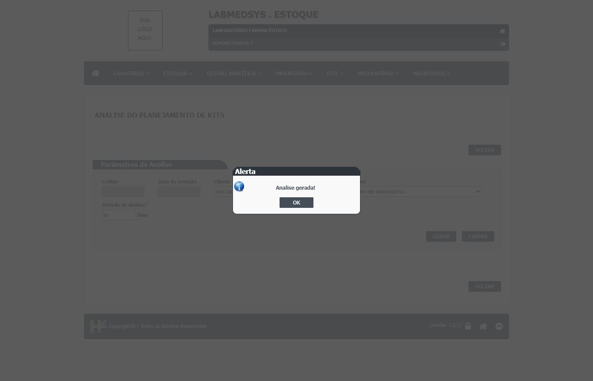
Figura 1: Após gerar a análise de 90 dias.
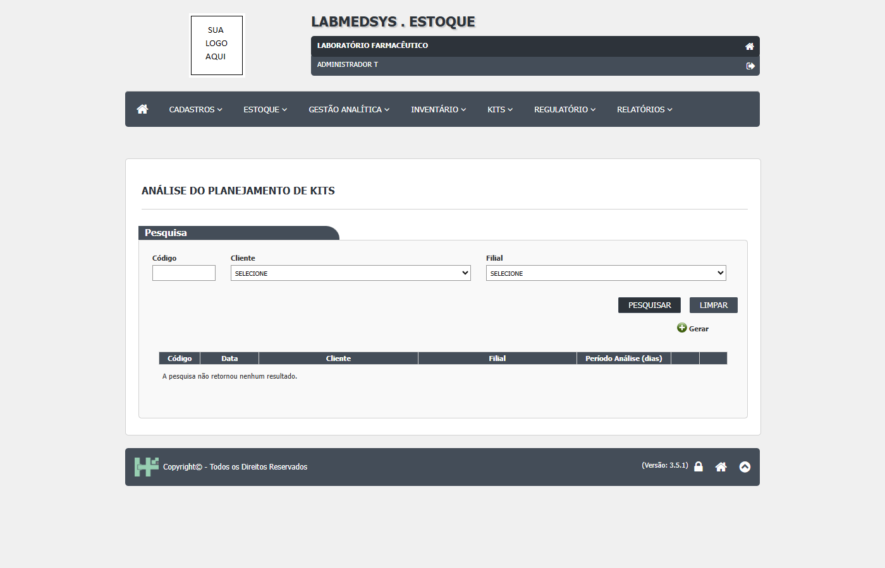
Figura 2: Lista de análises vazia.
Sugestão de correção
- Gravar a análise e mostrar o resultado; se a geração falhar, mostrar erro em vez de sucesso.
Observações
Defeito encontrado na rodada 8 do ambiente de teste do legado. A causa no código não foi investigada nesta rodada.
DV-EST-056
O atendimento de um kit aceita lote que vence antes da validade mínima do planejamento
| Gravidade | Situação | Tela | Caso de teste | Encontrado em | Norma afetada |
|---|---|---|---|---|---|
| Média | Aberto | Estoque › Atendimento de Solicitação (solicitação gerada por kit) | CT-EST-153 | 22/10/2026 (rodada 8) | RDC 658/2022, art. 189 (não liberar material fora da validade) e regra da validade mínima do cliente (RN004). |
O que acontece
O planejamento do cliente EMC pede validade mínima de 180 dias. O lote TESTEKIT30 vence em 31 dias (22/11/2026) e foi aceito no atendimento da solicitação do kit, sem aviso.
Como reproduzir
- Criar o kit 00002 (componente
TESTER805) e incluir no planejamento 00001 (validade mínima 180 dias). - Criar a solicitação de kit 00002 (cliente EMC), finalizar e gerar a solicitação/guia (nasce a solicitação de estoque 00051).
- Em Atendimento de Solicitação, abrir a 00051, escolher o lote
TESTEKIT30(validade 22/11/2026) e atender 1.
Dados de teste usados: Item TESTER805, lote TESTEKIT30 (validade 22/11/2026), kit 00002, planejamento 00001.
Esperado e obtido
| Esperado | Obtido |
|---|---|
| Recusa ou aviso: o lote tem validade menor que a mínima do planejamento. | "Atendimento confirmado!"; o lote de 31 dias foi atendido. |
Evidências
Figura 1: Lote de 31 dias escolhido.
Figura 2: Atendimento confirmado.
Sugestão de correção
- No atendimento de solicitações geradas por kit, comparar a validade do lote com a validade mínima do planejamento (e do parâmetro geral do kit).
Observações
Defeito encontrado na rodada 8 do ambiente de teste do legado. A causa no código não foi investigada nesta rodada.
DV-EST-059
Código zero é aceito em Condição de Armazenagem e em Coluna, e as telas se comportam de forma diferente
| Gravidade | Situação | Tela | Caso de teste | Encontrado em | Norma afetada |
|---|---|---|---|---|---|
| Média | Aberto | Estoque › Cadastros › Condição de Armazenagem, Estoque Coluna (e Rua, Andar) | CT-EST-019 e CT-EST-013 | 22/10/2026 (rodada 8) | Guia 33/2020 (dados mestres consistentes); o documento do Estoque diz que o código não pode ser 000. |
O que acontece
Condição de Armazenagem aceitou os códigos 0, 000 e 0000 (três registros diferentes). Coluna aceitou o código 0. Rua recusou ("O Código não pode ser nulo."); Andar respondeu "Esse código já está cadastrado." (já havia o código 0). Local de Armazenagem recusa 000 ("O Código não pode ser igual a 000."). As mensagens também variam ("Esse código" e "O Código").
Como reproduzir
- Abrir Cadastros › Condição de Armazenagem › Incluir, digitar código 0 e descrição
TESTE ZERO 0, salvar. - Repetir com 000 e 0000.
- Repetir em Estoque Coluna, Estoque Rua e Estoque Andar com o código 0.
Dados de teste usados: Registros TESTE ZERO 0, TESTE ZERO 000, TESTE ZERO 0000 e TESTE COLUNA ZERO.
Esperado e obtido
| Esperado | Obtido |
|---|---|
| Recusar código zero em todos os cadastros, com a mesma mensagem. | Aceito em Condição de Armazenagem e Coluna; recusado só na Rua e no Local. |
Evidências
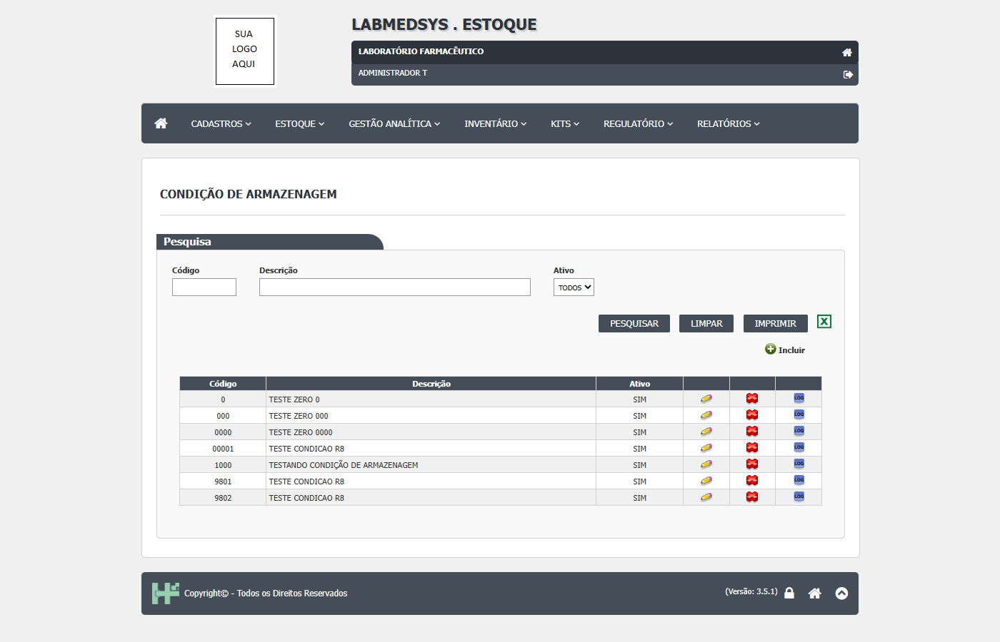
Figura 1: Lista com os códigos 0, 000 e 0000.
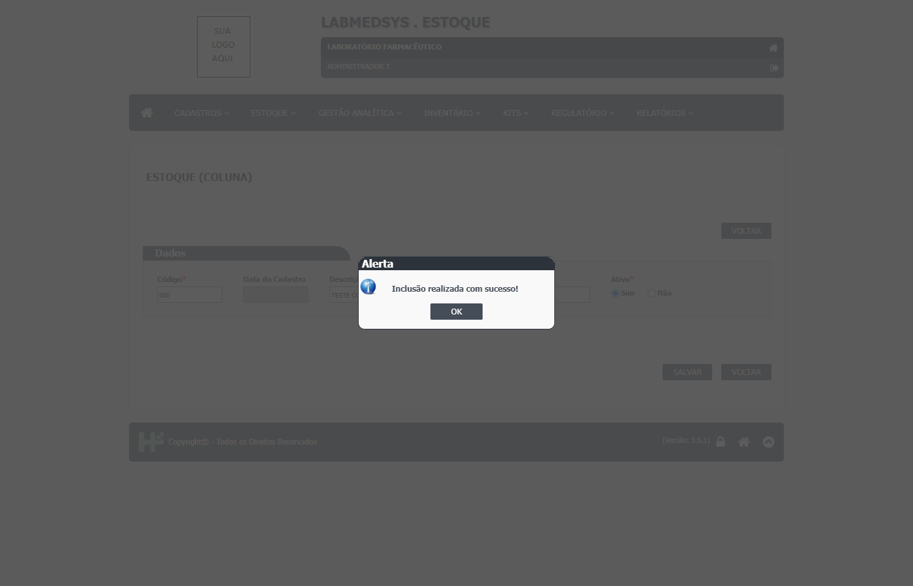
Figura 2: Coluna com código 0 aceita.
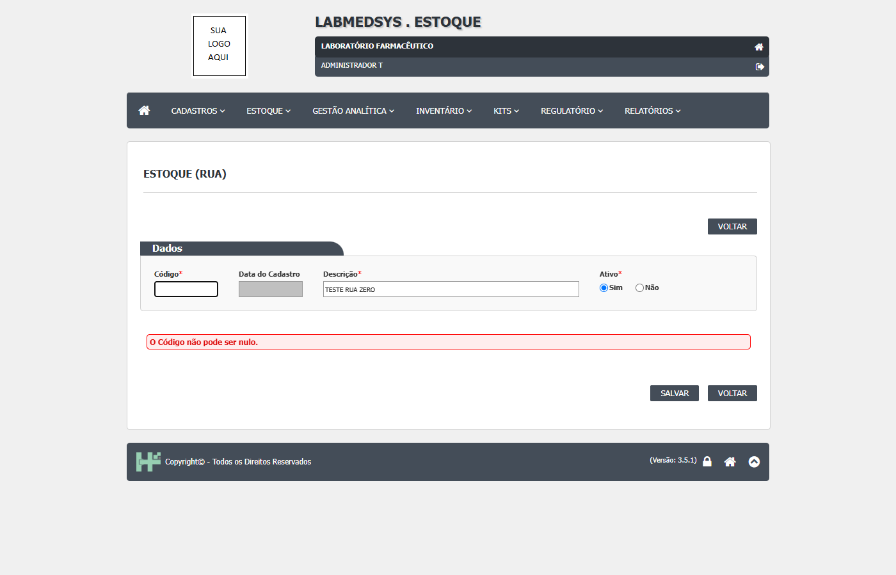
Figura 3: Rua com código 0 recusada.
Sugestão de correção
- Aplicar a mesma regra de código (sem zeros) em todos os cadastros de apoio e padronizar a mensagem.
Observações
Defeito encontrado na rodada 8 do ambiente de teste do legado. A causa no código não foi investigada nesta rodada.
DV-EST-061
Cancelar um atendimento não pede justificativa e não deixa rastro no histórico do lote
| Gravidade | Situação | Tela | Caso de teste | Encontrado em | Norma afetada |
|---|---|---|---|---|---|
| Média | Aberto | Estoque › Atendimento de Solicitação (cancelar item) | CT-EST-080 | 22/10/2026 (rodada 8) | RDC 658/2022, art. 124 (registro de cada ação quando é feita); Guia 33/2020. |
O que acontece
No Atendimento, o ícone de cancelar o item pergunta "Deseja cancelar o atendimento?" e cancela na hora, sem pedir justificativa. O atendimento volta a 0 e a solicitação some da lista de solicitações do lote no Histórico do Lote, sem nenhum registro de que houve atendimento e cancelamento.
Como reproduzir
- Abrir Atendimento de Solicitação, a solicitação 00040 com 1,000 atendido do lote
TESTEPA001. - Clicar no ícone vermelho de cancelar o item e SIM.
- Abrir Histórico do Lote do item de entrada
TA0002/26.
Dados de teste usados: Solicitação 00040, item TST0003, lote TESTEPA001.
Esperado e obtido
| Esperado | Obtido |
|---|---|
| Justificativa obrigatória e registro do cancelamento (quem, quando e por quê) no histórico. | Cancelamento imediato; atendido de 1,000 para 0,000; histórico sem o atendimento e sem o cancelamento. |
Evidências
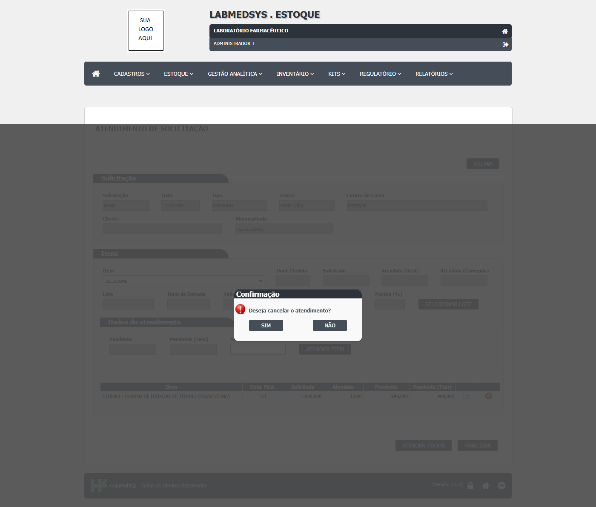
Figura 1: Pergunta de confirmação.
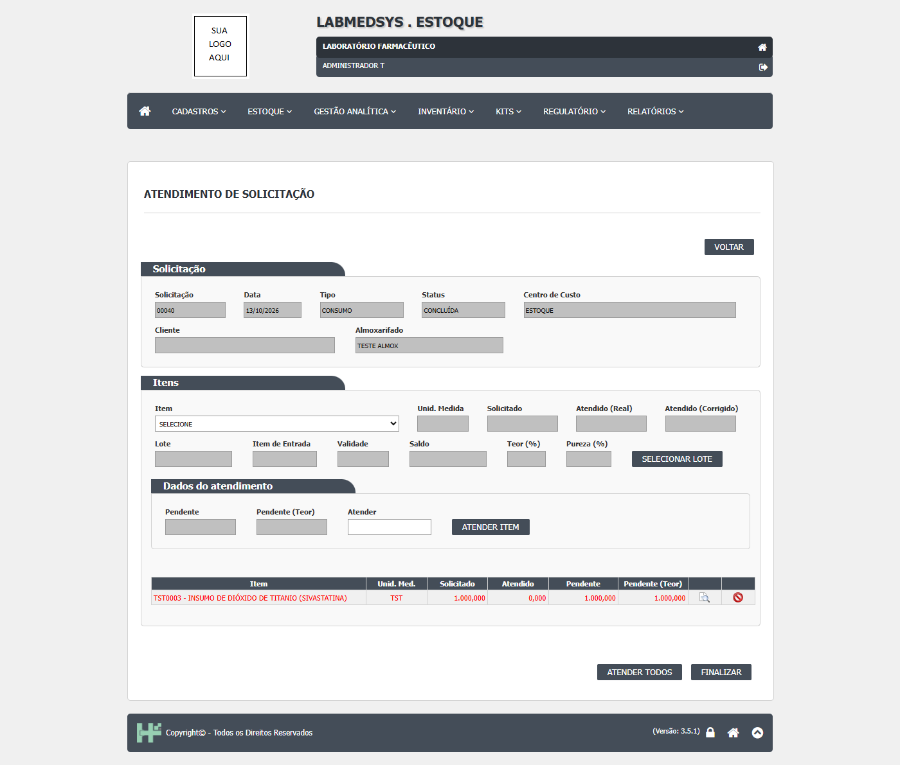
Figura 2: Após cancelar.
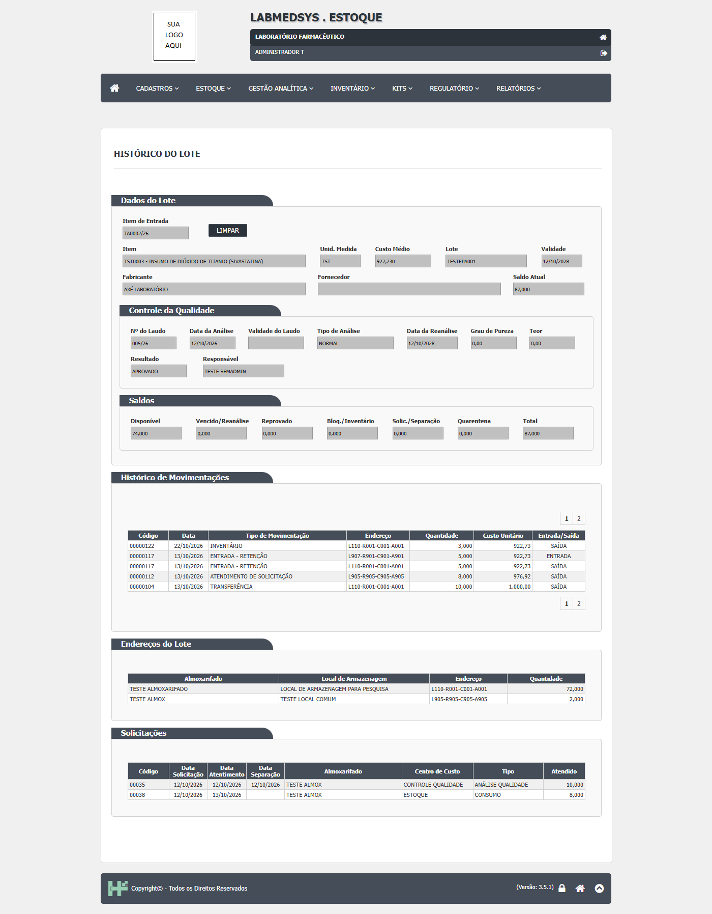
Figura 3: Histórico do lote.
Sugestão de correção
- Pedir justificativa e gravar o cancelamento no histórico do lote.
Observações
Defeito encontrado na rodada 8 do ambiente de teste do legado. A causa no código não foi investigada nesta rodada.
DV-EST-062
RM36 não lista o lote reprovado e o RM17 sai com as descrições trocadas
| Gravidade | Situação | Tela | Caso de teste | Encontrado em | Norma afetada |
|---|---|---|---|---|---|
| Média | Aberto | Estoque › Relatórios › Insumos Reprovados (RM36) e Material em Quarentena (RM17) | CT-EST-063 | 22/10/2026 (rodada 8) | Guia 33/2020 (relatórios corretos); RDC 658/2022 (controle de material reprovado e em quarentena). |
O que acontece
O RM36 responde "A pesquisa não retornou nenhum resultado." sem filtro, com o lote TESTEPA998 e com o período de outubro, embora o TESTEPA998 esteja reprovado (90 un. na coluna Reprovado da Disponibilidade). O RM17 (PDF) lista os três lotes em quarentena com as quantidades certas, mas as descrições saem deslocadas: a linha 1 fica sem descrição e a linha 2 traz "PARACETAMOL PÓ" (do item da linha 1). A causa do RM36 vazio deve ser confirmada (a consulta pode exigir o fluxo de recebimento).
Como reproduzir
- Abrir Relatórios › Insumos Reprovados (RM36) e clicar em VISUALIZAR sem filtro.
- Abrir Relatórios › Material em Quarentena (RM17) e clicar em GERAR RELATÓRIO; ler o PDF.
Dados de teste usados: Lotes TESTEPA998 (reprovado), MP0019/26, TA0007/26 e TA0003/26 (quarentena).
Esperado e obtido
| Esperado | Obtido |
|---|---|
| RM36 com o lote reprovado; RM17 com a descrição de cada item na sua linha. | RM36 vazio; RM17 com descrições deslocadas (PDF guardado como CT-EST-063-RM17.pdf). |
Evidências
Figura 1: RM36 com o lote TESTEPA998.
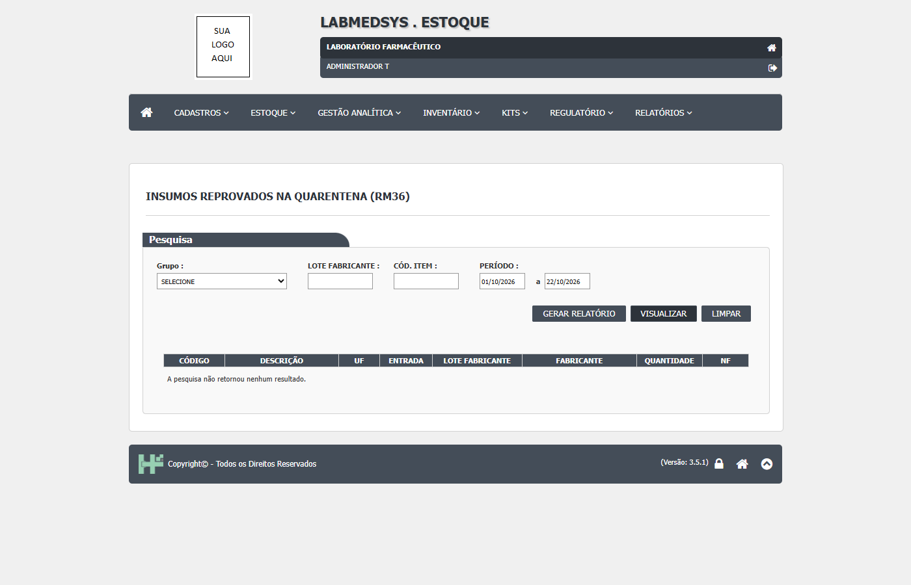
Figura 2: RM36 com o período de outubro.
Sugestão de correção
- Conferir a consulta do RM36 (a que critério de reprovação ela responde) e alinhar as colunas do RM17.
Observações
Defeito encontrado na rodada 8 do ambiente de teste do legado. A causa no código não foi investigada nesta rodada.
DV-EST-063
Solicitação de Material (Produção): a lista não tem Incluir e a busca de item do formulário não acha nenhum item
| Gravidade | Situação | Tela | Caso de teste | Encontrado em | Norma afetada |
|---|---|---|---|---|---|
| Média | Aberto | Estoque › Solicitação de Material (Produção) | CT-EST-091 | 22/10/2026 (rodada 8) | Guia 33/2020 (funções do sistema devem funcionar); ponto a validar com a área se a solicitação de produção só nasce da Ordem de Produção. |
O que acontece
O menu abre uma lista sem botão Incluir (só a solicitação 00033, do Comercial). O formulário de inclusão existe e abre pelo endereço solicitacao_ed.aspx (com o Tipo livre), mas a busca de item responde "Nenhum item foi encontrado" para o código TST0003, para INSUMO e para TESTE. Não foi possível criar uma solicitação do tipo Produção nem testar a Devolução da Produção.
Como reproduzir
- Abrir Estoque › Solicitação de Material (Produção) e procurar o botão Incluir (não existe).
- Abrir
estoque/solicitacao_ed.aspxe usar a busca de item (lupa) comTST0003.
Dados de teste usados: Item TST0003.
Esperado e obtido
| Esperado | Obtido |
|---|---|
| Solicitação de produção criada pela tela (ou criada só pela Ordem de Produção, com a tela de consulta sem Incluir) e busca de item funcionando. | Lista sem Incluir; busca de item sem resultado. |
Evidências
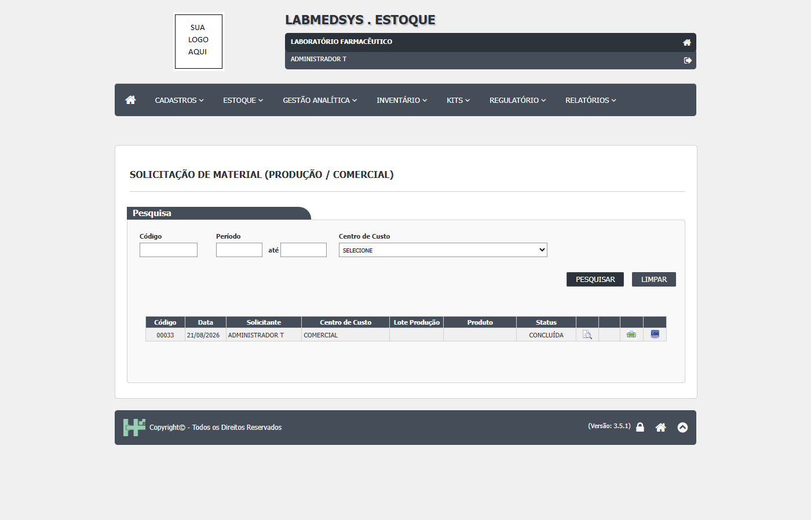
Figura 1: Lista sem botão Incluir.
Sugestão de correção
- Definir com a área se a tela deve permitir inclusão manual; se sim, corrigir a busca de item.
Observações
Defeito encontrado na rodada 8 do ambiente de teste do legado. A causa no código não foi investigada nesta rodada.
DV-EST-064
A Devolução de Material não encontra o lote existente de itens com controle de qualidade
| Gravidade | Situação | Tela | Caso de teste | Encontrado em | Norma afetada |
|---|---|---|---|---|---|
| Média | Aberto | Estoque › Devolução de Material | CT-EST-093 | 22/10/2026 (rodada 8) | RDC 658/2022 (material devolvido deve voltar ao estoque identificado pelo lote); Guia 33/2020. |
O que acontece
Para TST0003 (lote TESTEPA001) e TST0001 (lote TESTELOTE003), com o lote e a validade corretos, a tela responde "Lote, validade, fabricante não localizado!" (o campo Fabricante fica desabilitado). Para o item sem CQ TESTER805 (lote TESTEKIT30) a devolução funciona, mas cria um item de entrada novo (TA0010/26) para o mesmo lote, que aparece em duas linhas na Disponibilidade, e entra direto como disponível. Ao finalizar, o PDF da etiqueta abre em janela própria e derrubou o navegador automático três vezes.
Como reproduzir
- Abrir Estoque › Devolução de Material › Incluir; motivo Devolução, documento e justificativa.
- Procurar o item
TST0003, informar o loteTESTEPA001, a validade 12/10/2028 e a quantidade; INCLUIR ITEM. - Repetir com
TESTER805/TESTEKIT30/ 22/11/2026 e finalizar.
Dados de teste usados: Lotes TESTEPA001, TESTELOTE003 e TESTEKIT30; devolução 00000128.
Esperado e obtido
| Esperado | Obtido |
|---|---|
| Aceitar o lote existente de qualquer item, manter o item de entrada e, para item com CQ, abrir análise e deixar em quarentena. | Recusa para os itens com CQ; para o item sem CQ, novo item de entrada para o mesmo lote. |
Evidências
Figura 1: Item TST0001 recusado.
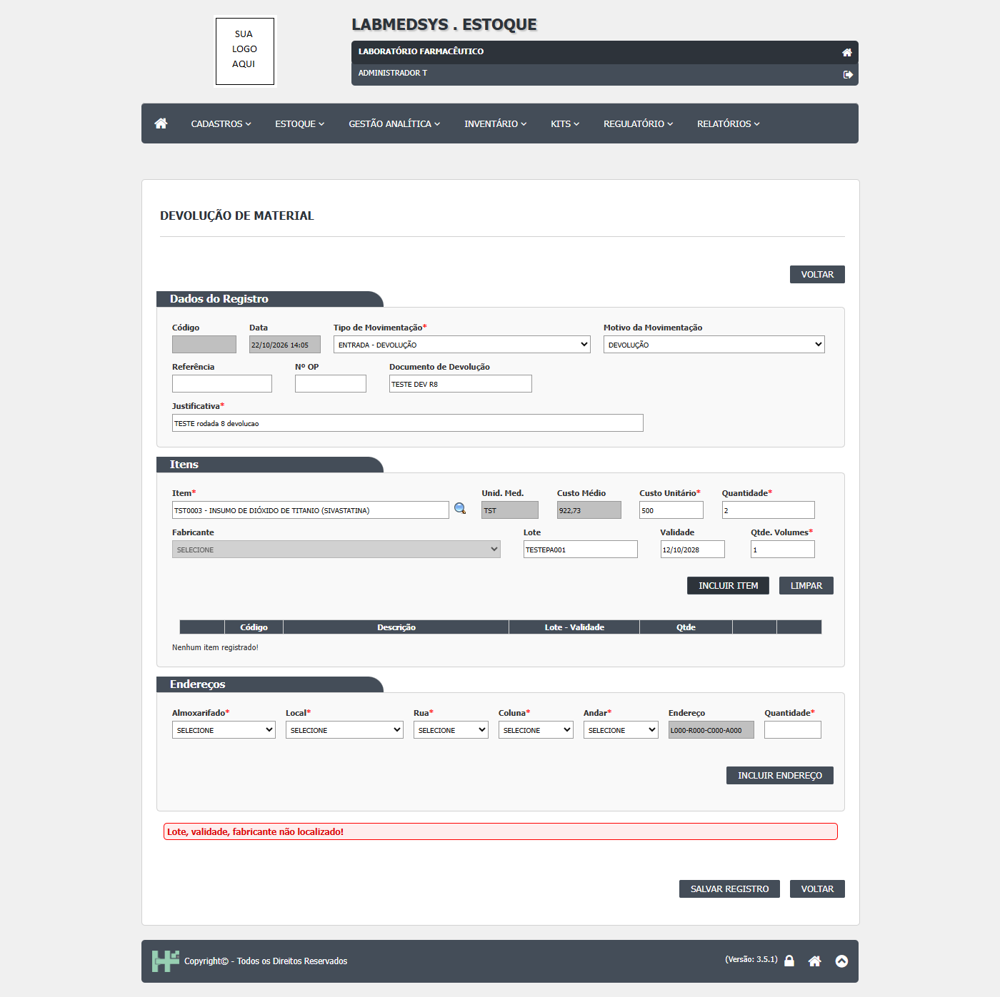
Figura 2: Lote existente aceito para item sem CQ.
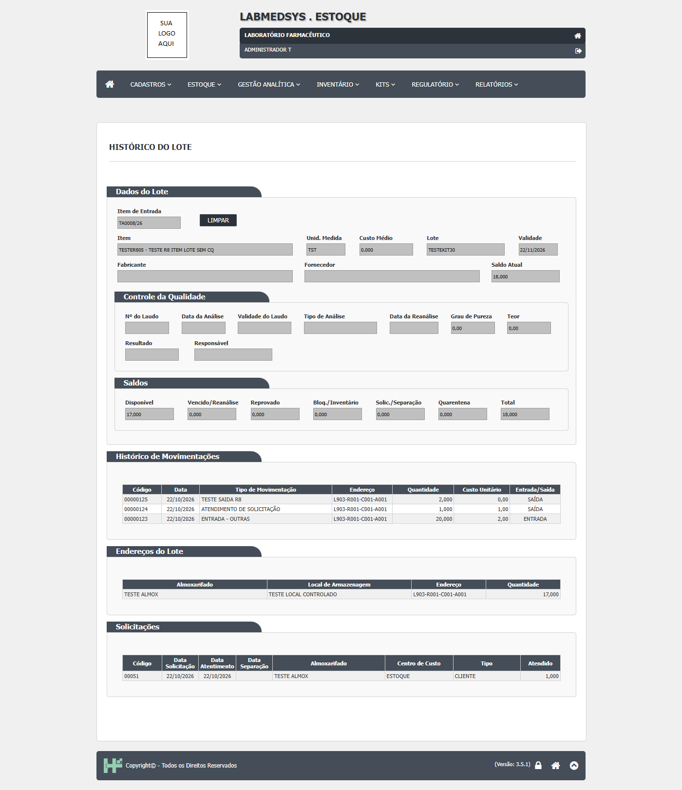
Figura 3: Histórico do lote.
Sugestão de correção
- Fazer a busca do lote considerar o fabricante do próprio lote e reaproveitar o item de entrada existente.
Observações
Defeito encontrado na rodada 8 do ambiente de teste do legado. A causa no código não foi investigada nesta rodada.
DV-EST-066
O cadastro de Local só oferece 6 almoxarifados; os de Retenção e Estabilidade não aparecem
| Gravidade | Situação | Tela | Caso de teste | Encontrado em | Norma afetada |
|---|---|---|---|---|---|
| Média | Aberto | Estoque › Cadastros › Local de Armazenagem (Incluir) | CT-EST-170, 172 a 175 e 177 | 22/10/2026 (rodada 8, confirmado na rodada 9) | Guia 33/2020 (dados mestres completos); RDC 658/2022 (amostras de retenção e estabilidade precisam de local próprio). |
O que acontece
No formulário de inclusão do Local de Armazenagem, a lista Almoxarifado mostra só seis opções (códigos 00003, 00004, 00005, 00011, 00014 e 00017). Os almoxarifados 00018 (Retenção), 00019, 00022, 00025 e 00026 (Estabilidade) existem, estão ativos e aparecem em outras telas, mas não nesta. Por isso não dá para criar um local (e, depois, endereços) para um almoxarifado novo.
Como reproduzir
- Abrir Estoque › Cadastros › Almoxarifado e ver os 12 almoxarifados (duas páginas).
- Abrir Estoque › Cadastros › Local de Armazenagem › Incluir e abrir a lista Almoxarifado.
- Comparar: faltam o
TESTE RETENCAO(00018), oTESTE ESTABILIDADE(00026) e os demais de código maior que 00017.
Dados de teste usados: Almoxarifados TESTE RETENCAO (tipo Retenção) e TESTE ESTABILIDADE (tipo Estabilidade).
Esperado e obtido
| Esperado | Obtido |
|---|---|
| A lista traz todos os almoxarifados ativos, para poder criar local em qualquer um. | Seis opções: MATERIA PRIMA E EMBALAGEM, PRODUTO ACABADO, AMBIENTES DE SECAGEM, TESTE ALMOXARIFADO, LABORATÓRIO TEUTO e TESTE ALMOX. |
Evidências
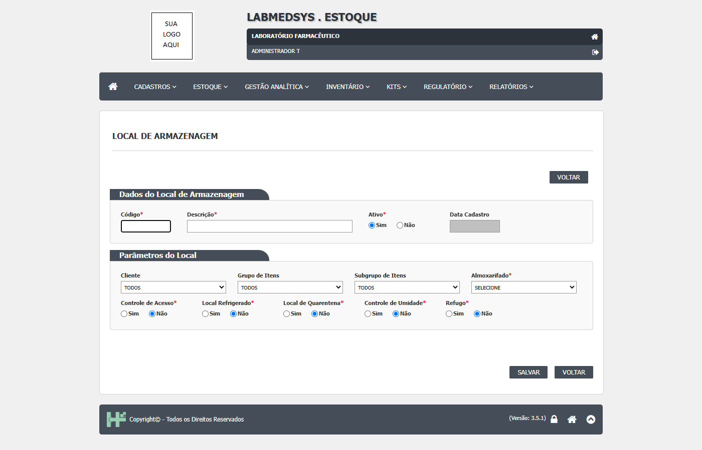
Figura 1: Almoxarifados oferecidos no cadastro de Local.
Sugestão de correção
- Listar todos os almoxarifados ativos (a consulta parece limitada a 6 registros).
Observações
Inferência (não confirmada no código): a lista parece cortada nos 6 primeiros códigos. Este defeito impediu criar o local do almoxarifado de estabilidade na rodada 9.
DV-EST-003
Sem a Data do Recebimento, o botão SIM não faz nada e não mostra mensagem
| Gravidade | Situação | Tela | Caso de teste | Encontrado em | Norma afetada |
|---|---|---|---|---|---|
| Baixa | Aberto | Estoque › Estoque › Recebimento de Material | Preparação do recebimento (observação 5) | 07/10/2026 (rodada de 07/10/2026 (preparação)) | Usabilidade |
O que acontece
A Data do Recebimento é obrigatória, mas a tela não avisa. Ao salvar sem ela, a confirmação aparece e o botão SIM não faz nada: não grava e não mostra mensagem.
Como reproduzir
- Abrir Estoque › Recebimento de Material e incluir um recebimento.
- Escolher a Transportadora e deixar a Data do Recebimento em branco.
- Clicar em SALVAR e depois em SIM.
Dados de teste usados: Transportadora TRANSLOG TRANSPORTES (o recebimento 00013 foi criado depois, já com a data).
Esperado e obtido
| Esperado | Obtido |
|---|---|
| Mensagem "Data do Recebimento é obrigatória!" (ou parecida), sem gravar. | O botão SIM não faz nada e nenhuma mensagem aparece. |
| ### Onde está no código |
Causa (provável): Confirmado no código: o validador da data aponta para outro campo (txtDtSolic, que não existe nesta tela) e está num grupo de validação (gpvRecebimento) que o salvar não usa (ele valida FormValidacao). Provável: com a data vazia, a conversão Convert.ToDateTime("") gera um erro de formato, que não é capturado (o catch só pega ArgumentException); numa atualização parcial da página isso fica invisível ao usuário. Investigar no console do navegador ou no log do servidor.
| Arquivo | Linhas | O que faz |
|---|---|---|
LaboSys_UI/estoque/recebimento_ed2.aspx |
110-116 | Validador da data com ControlToValidate="txtDtSolic" e ValidationGroup="gpvRecebimento"; mensagens falam de "solicitação". |
LaboSys_UI/estoque/recebimento_ed2.aspx.cs |
197-216, 238 | salvar valida o grupo FormValidacao, converte a data sem conferir se está vazia e só trata ArgumentException. |
Caminhos a partir da pasta app/ do módulo (3.estoque/app).
Sugestão de correção
- Ligar o validador ao campo certo (
txtDtRec), com mensagem sobre a data do recebimento, no grupo que o salvar usa. - No servidor, conferir se a data foi informada antes de converter e mostrar mensagem clara.
- Capturar e registrar qualquer erro inesperado, mostrando ao usuário uma mensagem em vez de não fazer nada.
- Marcar o campo com asterisco de obrigatório.
Como confirmar a correção
Incluir um recebimento sem a data e clicar em SALVAR: deve aparecer a mensagem e nada ser gravado. Com a data, deve gravar normalmente.
Observações
Sem captura da tela neste ponto; o comportamento foi registrado no resultado de 07/10/2026 (seção 4, observação 5).
DV-EST-006
Na tela do Item, alguns botões e marcações recarregam a tela e apagam os números digitados
| Gravidade | Situação | Tela | Caso de teste | Encontrado em | Norma afetada |
|---|---|---|---|---|---|
| Baixa | Aberto | Estoque › Cadastros › Item | Preparação do item TESTE MATERIA PRIMA (observação 4) | 07/10/2026 (rodada de 07/10/2026 (preparação)) | Usabilidade |
O que acontece
Ao incluir um item, o botão INCLUIR de "Almoxarifados (Movimentação)" e as marcações de controle (lote, validade, quarentena) recarregam parte da tela e apagam os números já digitados (estoque mínimo e máximo, peso, medidas). A ordem de preenchimento passa a importar. Também aparece o erro de script "$(...).nanoScroller is not a function" em várias telas do Estoque.
Como reproduzir
- Abrir Estoque › Cadastros › Item e clicar em incluir.
- Preencher os números de Parâmetros de Armazenagem (Est. Mínimo, Est. Máximo, Peso, Altura, Largura, Profundidade, Emp. Máximo).
- Marcar CONTROLE DE QUARENTENA ou, em Almoxarifados (Movimentação), escolher um almoxarifado e clicar em INCLUIR.
- Conferir os números digitados no passo 2.
Dados de teste usados: Item TST0001 - TESTE MATERIA PRIMA (grupo TESTE GRUPO, subgrupo TESTE SUBGRUPO, unidade TST, almoxarifado TESTE ALMOX).
Esperado e obtido
| Esperado | Obtido |
|---|---|
| Os valores já digitados continuam preenchidos depois de qualquer botão ou marcação. Nenhum erro de script no navegador. | Os números digitados foram apagados e precisaram ser digitados de novo. Erro de script "$(...).nanoScroller is not a function" no console do navegador. |
| ### Onde está no código |
Causa (provável): a marcação CONTROLE DE QUARENTENA e o botão INCLUIR do almoxarifado fazem ida ao servidor (AutoPostBack/botão em UpdatePanel); a forma exata como os números se perdem não foi identificada. Investigar se os campos de número com máscara estão fora dos painéis atualizados ou são reescritos no retorno. O nanoScroller não aparece no código do Estoque: deve vir de um script comum (página-mestra ou tema) que chama o componente sem carregá-lo; a investigar.
| Arquivo | Linhas | O que faz |
|---|---|---|
LaboSys_UI/administracao/tabelas_apoio/item_ed.aspx |
465-467 | CONTROLE DE QUARENTENA com AutoPostBack="True". |
LaboSys_UI/administracao/tabelas_apoio/item_ed.aspx |
664-665 | Botão INCLUIR do almoxarifado (btnNovoLocal), que faz ida ao servidor. |
Caminhos a partir da pasta app/ do módulo (3.estoque/app).
Sugestão de correção
- Manter os valores digitados nas idas ao servidor (rever os painéis atualizados e o ViewState dos campos), ou fazer essas ações sem recarregar.
- Carregar o script do
nanoScrolleronde ele é chamado, ou retirar a chamada. - Testar a tela do Item preenchendo os campos em ordens diferentes.
Como confirmar a correção
Incluir um item, preencher os números, marcar CONTROLE DE QUARENTENA e incluir um almoxarifado: os números devem continuar preenchidos; o console não deve mostrar erro de script.
Observações
Sem captura do momento em que os números somem; registrado no resultado de 07/10/2026 (seção 4, observações 4 e 8).
DV-EST-013
Nota fiscal sem a série não grava e não avisa; mensagens apontam o campo errado
| Gravidade | Situação | Tela | Caso de teste | Encontrado em | Norma afetada |
|---|---|---|---|---|---|
| Baixa | Aberto | Estoque › Estoque › Recebimento de Material › Nota Fiscal | CT-EST-184 | 08/10/2026 (rodada de 08/10/2026, etapa 1) | Usabilidade |
O que acontece
Na tela Recebimento de Materiais - Nota Fiscal, com a Série em branco, o sistema pergunta "Deseja salvar a Nota Fiscal?", repete a pergunta depois do SIM e não grava, sem nenhuma mensagem. Outras mensagens apontam o campo errado: sem o Nº da NF aparece também "Campo Série é obrigatório!" (com a série preenchida); sem a Data de Entrada aparece "Data da Nota Fiscal não informada"; sem o Total Produto aparece também "Valor do Frete da Nota Fiscal não foi informado!" (com o frete preenchido). "Tipo de Movimentacao" está sem acento.
Como reproduzir
- Abrir Estoque › Recebimento de Material, um recebimento em aberto, e clicar em INCLUIR NOTA FISCAL.
- Preencher todos os campos obrigatórios, menos a Série.
- Clicar em SALVAR NOTA FISCAL e depois em SIM.
- Repetir deixando em branco, um de cada vez, o Nº da NF, a Data de Entrada e o Total Produto, e ler as mensagens no rodapé.
Dados de teste usados: Recebimento 00015, fornecedor TESTE PJ FARMACÊUTICA LTDA, NF de teste 9004 (não gravada).
Esperado e obtido
| Esperado | Obtido |
|---|---|
| Sem a série: "Campo Série é obrigatório!" e nada gravado. Cada mensagem cita só o campo que falta. | Sem a série: a pergunta se repete e nada é gravado, sem mensagem. Sem o Total Produto: "Valor Total do Produto na Nota Fiscal não foi informado!" e "Valor do Frete da Nota Fiscal não foi informado!" com o frete preenchido. |
Evidências
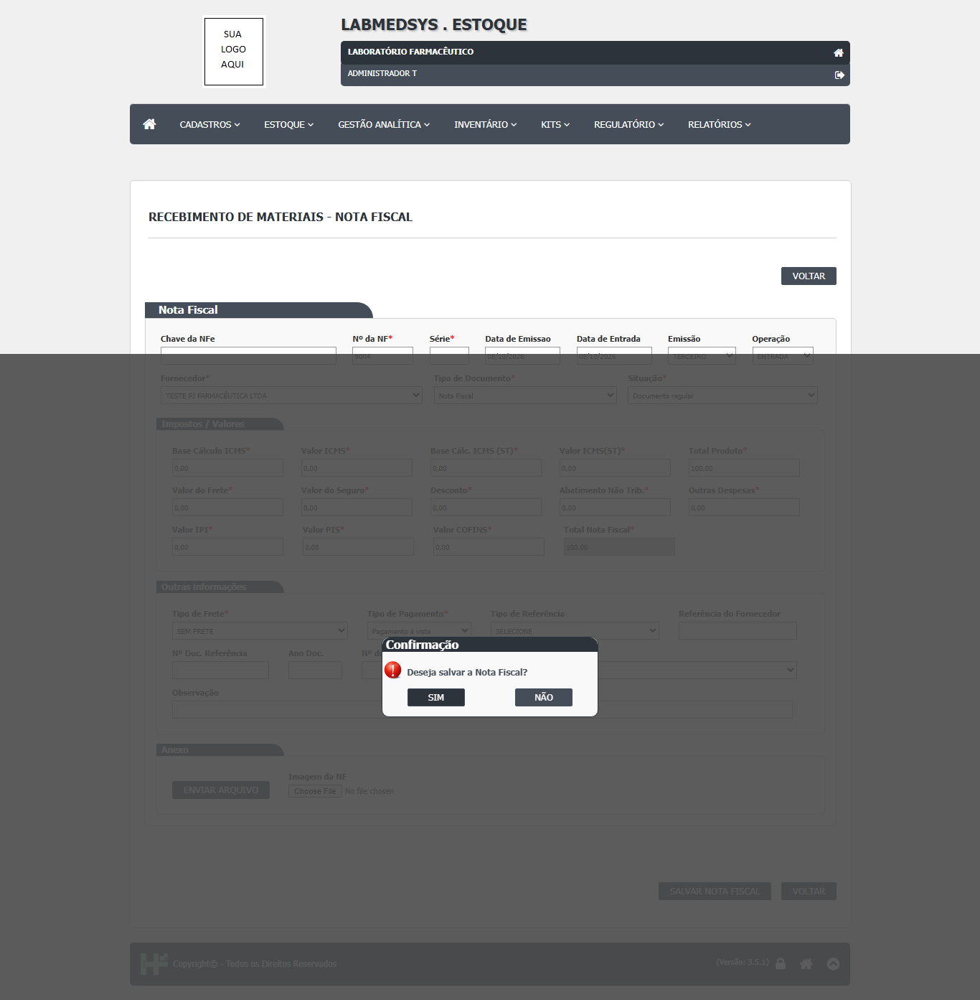
Figura 1: Série em branco: depois do SIM, a pergunta "Deseja salvar a Nota Fiscal?" aparece de novo
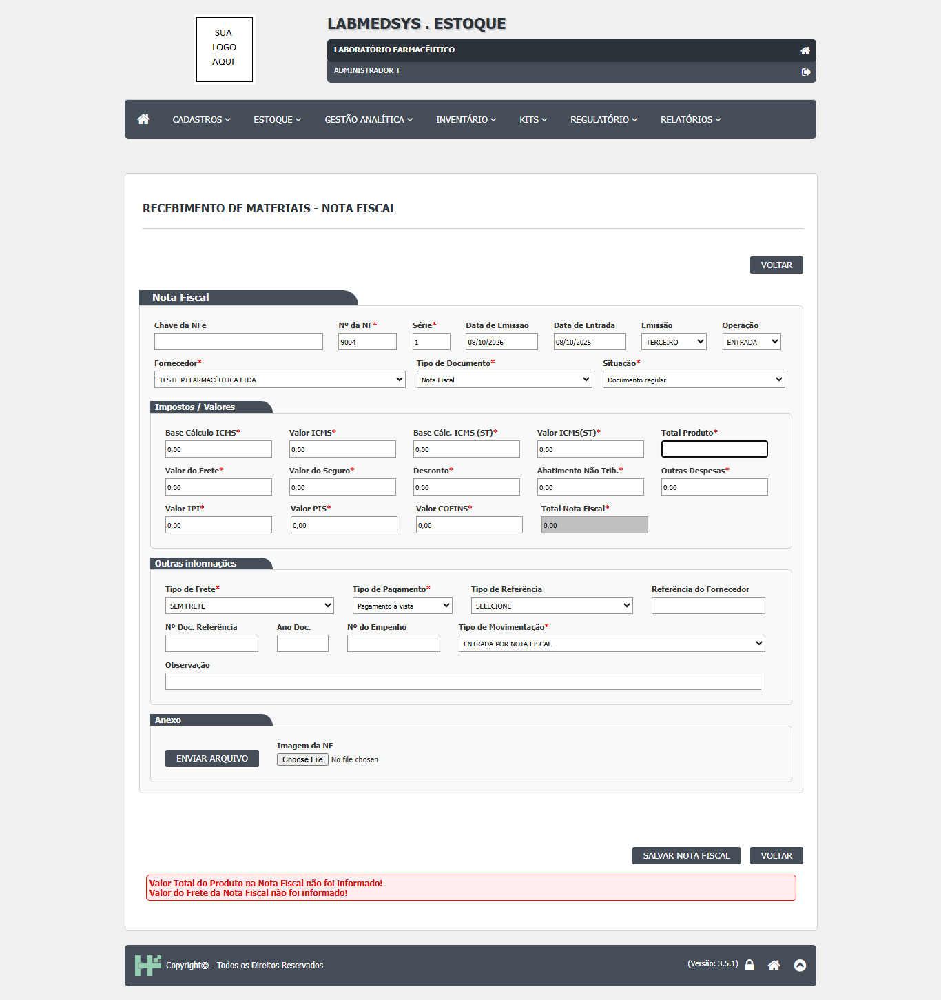
Figura 2: Sem o Total Produto: aparece também a mensagem do frete, que está preenchido
Onde está no código
Causa (confirmada): os validadores estão ligados aos campos errados: o da Série valida o Nº da NF, o do Frete valida o Total Produto, e o da Data de Entrada usa o texto da Data da Nota. Sem validador real na série, o código converte a série vazia com Convert.ToInt32 ao verificar nota repetida; esse erro de formato não é capturado (o catch só pega ArgumentException), o que explica a falta de mensagem (esta última parte é provável).
| Arquivo | Linhas | O que faz |
|---|---|---|
LaboSys_UI/estoque/recebimentoNF_ed.aspx |
261-263 | rqfvSerie ("Campo Série é obrigatório!") com ControlToValidate="txtNumNF". |
LaboSys_UI/estoque/recebimentoNF_ed.aspx |
451-453 | Validador "Valor do Frete..." com ControlToValidate="txtValTotProduto". |
LaboSys_UI/estoque/recebimentoNF_ed.aspx |
302-305 | Validador da Data de Entrada com a mensagem "Data da Nota Fiscal não informada". |
LaboSys_UI/estoque/recebimentoNF_ed.aspx.cs |
516, 525 | validarNf converte a série com Convert.ToInt32 e só trata ArgumentException. |
Caminhos a partir da pasta app/ do módulo (3.estoque/app).
Sugestão de correção
- Ligar cada validador ao seu campo: Série →
txtSerie, Frete →txtValFrete; corrigir o texto da Data de Entrada. - No servidor, conferir os campos obrigatórios antes de converter e mostrar a mensagem do campo que falta.
- Capturar e registrar erros inesperados em vez de deixar a tela sem resposta.
- Corrigir os textos sem acento ("Tipo de Movimentacao", "Data de Emissao").
Como confirmar a correção
Repetir o CT-EST-184 campo a campo: cada falta deve gerar só a mensagem do próprio campo; sem a série, a mensagem deve aparecer e nada ser gravado.
Observações
No mesmo caso, o item repetido na nota foi recusado só pela soma dos valores; a recusa por item repetido não foi isolada (ponto para validar num novo teste com nota de valor maior).
DV-EST-017
Endereço repetido é recusado com erro de grafia e sem dizer qual campo repetiu
| Gravidade | Situação | Tela | Caso de teste | Encontrado em | Norma afetada |
|---|---|---|---|---|---|
| Baixa | Aberto | Estoque › Cadastros › Endereço do Estoque | CT-EST-031 | 12/10/2026 (rodada 2 de 12/10/2026 (partes A e B)) | — |
O que acontece
Ao incluir um endereço igual a outro já cadastrado, a mensagem diz "Não foi possível inlcuir o endereço. Verifique se o mesmo já existe": tem erro de grafia e não mostra qual combinação de local, rua, coluna e andar repetiu.
Como reproduzir
- Abrir Estoque › Endereço do Estoque e escolher INCLUIR.
- Informar o mesmo local, rua, coluna e andar de um endereço que já existe.
- Confirmar a inclusão.
Dados de teste usados: Local 901, rua TESTE RUA, coluna 901, andar 901.
Esperado e obtido
| Esperado | Obtido |
|---|---|
| Recusa com mensagem correta, dizendo qual combinação já existe. | Recusa com a mensagem "inlcuir" e sem dizer a combinação repetida. |
| ### Sugestão de correção |
- Corrigir a grafia da mensagem.
- Dizer qual combinação (local, rua, coluna e andar) já existe.
Observações
As capturas de tela ficam em execucao/2026-10-12/evidencias/, com o nome do caso (CT-EST-031). Não foram anexadas aqui porque ainda não foram conferidas uma a uma contra este defeito.
DV-EST-019
Curva ABC aceita período no futuro e gera curva sem dados
| Gravidade | Situação | Tela | Caso de teste | Encontrado em | Norma afetada |
|---|---|---|---|---|---|
| Baixa | Aberto | Estoque › Gestão analítica › Curva ABC | CT-EST-160 | 12/10/2026 (rodada 2 de 12/10/2026 (partes A e B)) | Guia 33/2020, 9.3.2.3 (limites dos dados) |
O que acontece
A Curva ABC recusa campos vazios e período invertido, mas aceita um período no futuro (01/2030 a 12/2030) e gera a curva 000002 sem nenhum dado.
Como reproduzir
- Abrir Estoque › Curva ABC.
- Informar mês inicial 01/2030 e mês final 12/2030.
- Clicar em gerar.
Esperado e obtido
| Esperado | Obtido |
|---|---|
| Recusar período no futuro. | Gerou a curva 000002, sem dados, com a mensagem "Curva Gerada!". |
| ### Sugestão de correção |
- Recusar mês final posterior ao mês atual.
DV-EST-033
A Movimentação de Material lista lotes em quarentena (a tela só oferece destinos de quarentena)
| Gravidade | Situação | Tela | Caso de teste | Encontrado em | Norma afetada |
|---|---|---|---|---|---|
| Baixa | Aberto | Estoque › Movimentação de Material | CT-EST-211 | 12/10/2026 (rodada 3 de 12/10/2026 (parte C: quarentena e CQ)) | RDC 658/2022, art. 157 |
O que acontece
A lista de lotes oferece lotes em quarentena (TESTEPA001 e TESTEPA999, aguardando análise); só o lote bloqueado some.
Como reproduzir
- Abrir Estoque › Movimentação de Material.
- Abrir a lista de lotes do item
TST0003.
Esperado e obtido
| Esperado | Obtido |
|---|---|
| Lote em quarentena só se movimenta dentro dos locais de quarentena, e nunca para um local comum. | Os lotes em quarentena aparecem na lista. |
| ### Observações |
DV-EST-037
Mensagens do CQ que não dizem o que falta
| Gravidade | Situação | Tela | Caso de teste | Encontrado em | Norma afetada |
|---|---|---|---|---|---|
| Baixa | Aberto | CQ › Programação de Análise e Regra de Amostragem | CT-EST-201 | 12/10/2026 (rodada 3 de 12/10/2026 (parte C: quarentena e CQ)) | Guia 33/2020, 9.3.2.3 |
O que acontece
Programação de Análise com a data em branco mostra "Data início Análise anterior a data atual". Regra de Amostragem em branco mostra só "Ocorreu um erro inesperado.".
Como reproduzir
- Em Programação de Análise, deixar a data em branco e confirmar.
- Em Regra de Amostragem, deixar a regra em branco e confirmar.
Esperado e obtido
| Esperado | Obtido |
|---|---|
| Mensagem do campo que falta. | Mensagem de data anterior; erro genérico. |
| ### Sugestão de correção |
- Uma mensagem por campo obrigatório.
Observações
As capturas de tela ficam em execucao/2026-10-12/evidencias/, com o nome do caso (CT-EST-201). Não foram anexadas aqui porque ainda não foram conferidas uma a uma contra este defeito.
DV-EST-040
Lista sem resultado mostra uma linha fantasma com zeros e o botão Editar
| Gravidade | Situação | Tela | Caso de teste | Encontrado em | Norma afetada |
|---|---|---|---|---|---|
| Baixa | Aberto | Estoque › Revalidação de Lote e Agenda de Reanálise | CT-EST-061 | 13/10/2026 (rodada 4 de 13/10/2026 (movimentação interna; reprovado e reanálise)) | Guia 33/2020, 9.3.2.3 |
O que acontece
Quando a lista não encontra nada, aparece uma linha com "0 / 0 / 0 / 0 / data de hoje / 0,000" e o botão Editar, como se fosse um registro.
Como reproduzir
- Abrir Estoque › Revalidação de Lote.
- Pesquisar um lote que não esteja vencido (
TESTELOTE003).
Dados de teste usados: Lotes TESTELOTE003, TESTEPA001 e TESTEPA998.
Esperado e obtido
| Esperado | Obtido |
|---|---|
| Mensagem "nenhum registro encontrado", sem linha. | Linha com zeros e botão Editar. |
| ### Sugestão de correção |
- Não mostrar linha quando a pesquisa volta vazia.
DV-EST-051
O cadastro de Item aceita estoque mínimo maior que o máximo
| Gravidade | Situação | Tela | Caso de teste | Encontrado em | Norma afetada |
|---|---|---|---|---|---|
| Baixa | Aberto | Estoque › Cadastros › Item | CT-EST-015 | 22/10/2026 (rodada 8) | Guia 33/2020 (consistência dos dados mestres). |
O que acontece
Salvar um item com Estoque Mínimo 500 e Estoque Máximo 10 grava sem aviso ("Inclusão realizada com sucesso!").
Como reproduzir
- Abrir Cadastros › Item › Incluir e preencher um item válido (grupo, subgrupo, unidade, medidas).
- Digitar Est. Mínimo 500 e Est. Máximo 10; vincular o almoxarifado na grade; escrever a justificativa.
- Clicar em SALVAR e SIM.
Dados de teste usados: Item TESTER803 - TESTE R8 ITEM MIN MAIOR MAX.
Esperado e obtido
| Esperado | Obtido |
|---|---|
| Recusa com mensagem ("o estoque mínimo não pode ser maior que o máximo"). | "Inclusão realizada com sucesso!"; item gravado com mínimo maior que o máximo. |
Evidências
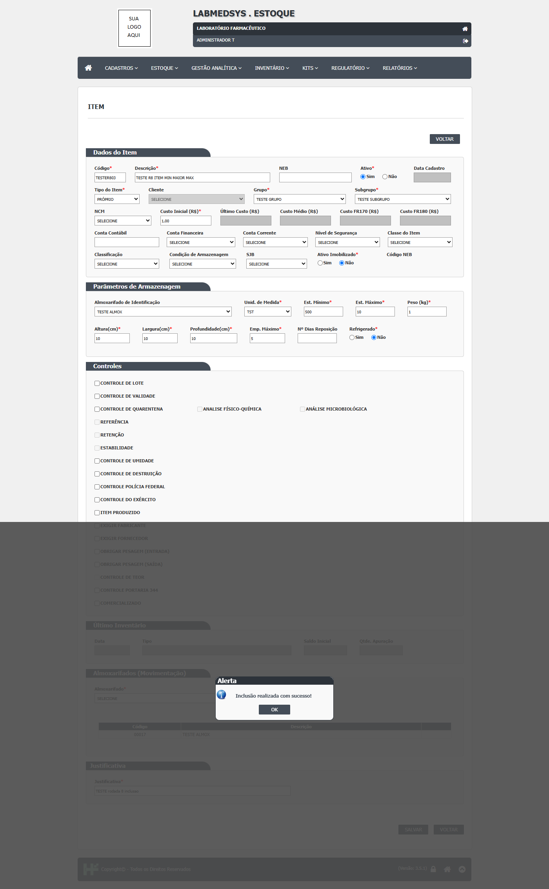
Figura 1: Item salvo com mínimo 500 e máximo 10.
Sugestão de correção
- Validar mínimo menor ou igual ao máximo antes de gravar.
Observações
Defeito encontrado na rodada 8 do ambiente de teste do legado. A causa no código não foi investigada nesta rodada.
DV-EST-053
A pesquisa não acha o texto sem acento (repete o DV-PRI-008 no Estoque)
| Gravidade | Situação | Tela | Caso de teste | Encontrado em | Norma afetada |
|---|---|---|---|---|---|
| Baixa | Aberto | Estoque › Cadastros › Item (e demais pesquisas por descrição) | CT-EST-024 | 22/10/2026 (rodada 8) | Usabilidade; mesma família do DV-PRI-008. |
O que acontece
Pesquisar a descrição DIÓXIDO acha o item, mas DIOXIDO, dioxido ou DIOXI não acham nada.
Como reproduzir
- Abrir Cadastros › Item e digitar
DIÓXIDOem Descrição: PESQUISAR. - Repetir com
DIOXIDOe comdioxido.
Dados de teste usados: Item TST0003 - INSUMO DE DIÓXIDO DE TITANIO (SIVASTATINA).
Esperado e obtido
| Esperado | Obtido |
|---|---|
| O mesmo resultado com e sem acento e com maiúsculas ou minúsculas. | "A pesquisa não retornou nenhum resultado." sem acento; o item aparece só com o acento. |
Evidências
Figura 1: Com acento.
Figura 2: Sem acento.
Sugestão de correção
- Usar comparação sem acento e sem diferenciar maiúsculas nas pesquisas por texto.
Observações
Defeito encontrado na rodada 8 do ambiente de teste do legado. A causa no código não foi investigada nesta rodada.
DV-EST-055
O filtro Nome do cadastro de kits é ignorado
| Gravidade | Situação | Tela | Caso de teste | Encontrado em | Norma afetada |
|---|---|---|---|---|---|
| Baixa | Aberto | Estoque › Kits › Cadastro de Kits (lista) | CT-EST-150 | 22/10/2026 (rodada 8) | Usabilidade. |
O que acontece
Digitar ZZZZ ou VALIDADE no filtro Nome e pesquisar lista todos os kits, como se o filtro não existisse. O filtro Código funciona.
Como reproduzir
- Abrir Kits › Cadastro de Kits.
- Digitar
ZZZZem Nome e clicar em PESQUISAR.
Dados de teste usados: Kits 00001 e 00002.
Esperado e obtido
| Esperado | Obtido |
|---|---|
| "A pesquisa não retornou nenhum resultado." | A lista mostra os dois kits. |
Evidências
Figura 1: Filtro Nome com ZZZZ.
Sugestão de correção
- Aplicar o filtro Nome na consulta da lista.
Observações
Defeito encontrado na rodada 8 do ambiente de teste do legado. A causa no código não foi investigada nesta rodada.
DV-EST-057
Relatórios mostram data em formato americano e o nome do usuário cortado
| Gravidade | Situação | Tela | Caso de teste | Encontrado em | Norma afetada |
|---|---|---|---|---|---|
| Baixa | Aberto | Estoque › Relatórios de kit e Relatório de Condição de Armazenagem | CT-EST-157 e CT-EST-009 | 22/10/2026 (rodada 8) | Usabilidade (sistema em português). |
O que acontece
Os relatórios de kit trazem "Emitido em: 10/22/2026" e "1:03 PM" (mês/dia/ano). O relatório de Condição de Armazenagem mostra "USUÁRIO: ADMIN" em vez do nome completo.
Como reproduzir
- Abrir Relatórios › Análise de Componentes (Kit) e clicar em GERAR RELATÓRIO.
- Ler o cabeçalho do relatório.
Dados de teste usados: Kits e planejamento criados na rodada 8.
Esperado e obtido
| Esperado | Obtido |
|---|---|
| Datas no formato dia/mês/ano e nome do usuário completo. | Formato mês/dia/ano e hora com AM/PM; nome do usuário cortado em um relatório. |
Evidências
Figura 1: Relatório de Análise de Componentes (Kit).
Figura 2: Relatório de Condição de Armazenagem.
Sugestão de correção
- Formatar as datas do relatório pela cultura pt-BR e usar o nome completo do usuário.
Observações
Defeito encontrado na rodada 8 do ambiente de teste do legado. A causa no código não foi investigada nesta rodada.
DV-EST-060
Saída de Material: justificativa não é obrigatória, mensagens com erro de digitação e custo 0,00
| Gravidade | Situação | Tela | Caso de teste | Encontrado em | Norma afetada |
|---|---|---|---|---|---|
| Baixa | Aberto | Estoque › Saída de Material | CT-EST-081 | 22/10/2026 (rodada 8) | Guia 33/2020 e RDC 658/2022, art. 124 (registrar a razão de cada movimentação). |
O que acontece
A Saída de Material gravou sem justificativa (o motivo da movimentação é obrigatório, a justificativa não). As mensagens de validação têm erros: "Data da saída não inforada!", "Tipo da movimentação não informado.!", "Motivo da movimentação não informado.!". No histórico do lote, a saída fica com custo unitário 0,00 (a entrada tinha 2,00).
Como reproduzir
- Criar o tipo de movimentação
TESTE SAIDA R8e o motivoTESTE MOTIVO R8. - Abrir Estoque › Saída de Material, clicar em CONFIRMAR com tudo vazio: ler as mensagens.
- Preencher data, tipo, motivo, item
TESTER805, lote, endereço e quantidade 2; deixar a justificativa em branco e CONFIRMAR e SIM.
Dados de teste usados: Lote TESTEKIT30 (item de entrada TA0008/26), endereço L903-R001-C001-A001.
Esperado e obtido
| Esperado | Obtido |
|---|---|
| Justificativa obrigatória, mensagens corretas e custo da saída pelo custo do lote. | Saída gravada sem justificativa ("Inclusão realizada com sucesso!"); custo unitário 0,00 no histórico. |
Evidências
Figura 1: Mensagens com tudo vazio.
Figura 2: Saída gravada sem justificativa.

Figura 3: Histórico do lote.
Sugestão de correção
- Exigir a justificativa, corrigir os textos e gravar o custo do lote na saída.
Observações
Defeito encontrado na rodada 8 do ambiente de teste do legado. A causa no código não foi investigada nesta rodada.
DV-EST-065
Duas abas movimentando o mesmo endereço ao mesmo tempo: nenhum bloqueio
| Gravidade | Situação | Tela | Caso de teste | Encontrado em | Norma afetada |
|---|---|---|---|---|---|
| Baixa | Aberto | Estoque › Movimentação de Material | CT-EST-042 | 22/10/2026 (rodada 8) | Guia 33/2020 (integridade dos dados); RN005 do documento de fluxo. |
O que acontece
Com duas abas abertas, ambas movendo do mesmo endereço de origem, as duas gravaram ("Inclusão realizada com sucesso!"). O saldo ficou coerente porque o saldo cobria os dois movimentos, mas não existe nenhuma trava por endereço.
Como reproduzir
- Abrir duas abas em Movimentação de Material › Incluir com o mesmo item, lote e origem
L903-R001-C001-A001. - Preencher o destino
L903-R001-C001-A901com 1 unidade em cada e salvar a aba A e depois a B.
Dados de teste usados: Lote TA0008/26, origem L903-R001-C001-A001 (17 un.).
Esperado e obtido
| Esperado | Obtido |
|---|---|
| A segunda movimentação deveria ser recusada enquanto a primeira estiver em andamento (RN005). | As duas foram gravadas (origem 15, destino 2). |
Evidências
Figura 1: Aba A antes de salvar.
Figura 2: Aba B depois de salvar.
Figura 3: Endereços do item.
Sugestão de correção
- Confirmar o saldo no momento de gravar (já feito) e, se a regra RN005 for exigida, bloquear o endereço durante a movimentação.
Observações
Defeito encontrado na rodada 8 do ambiente de teste do legado. A causa no código não foi investigada nesta rodada.